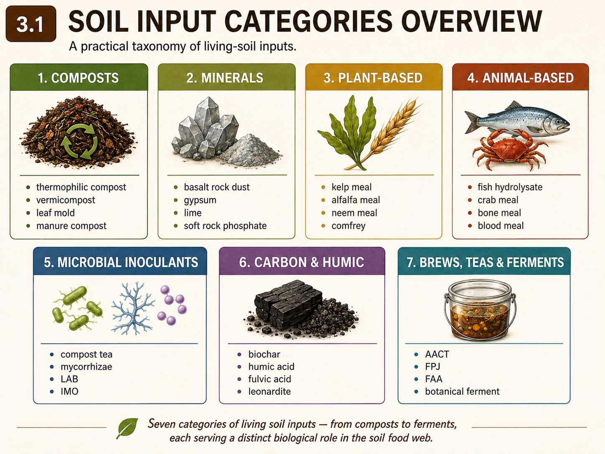
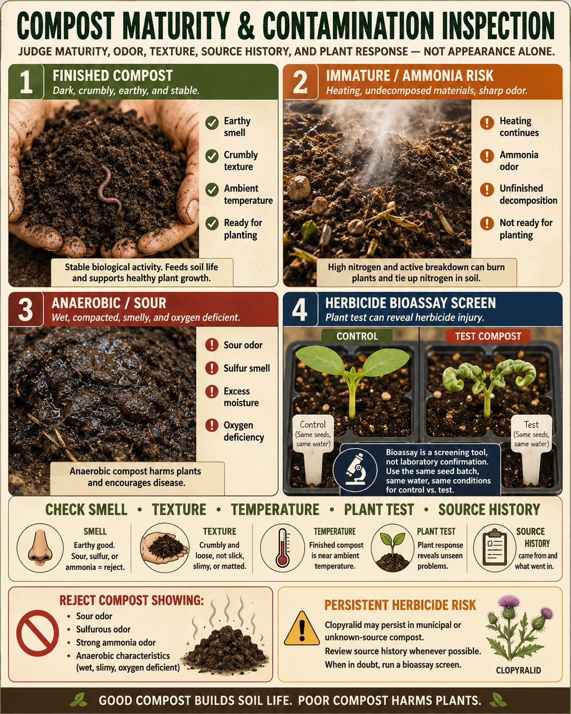
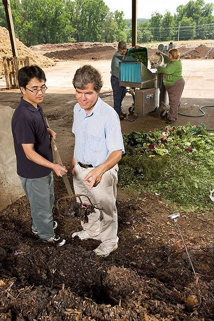
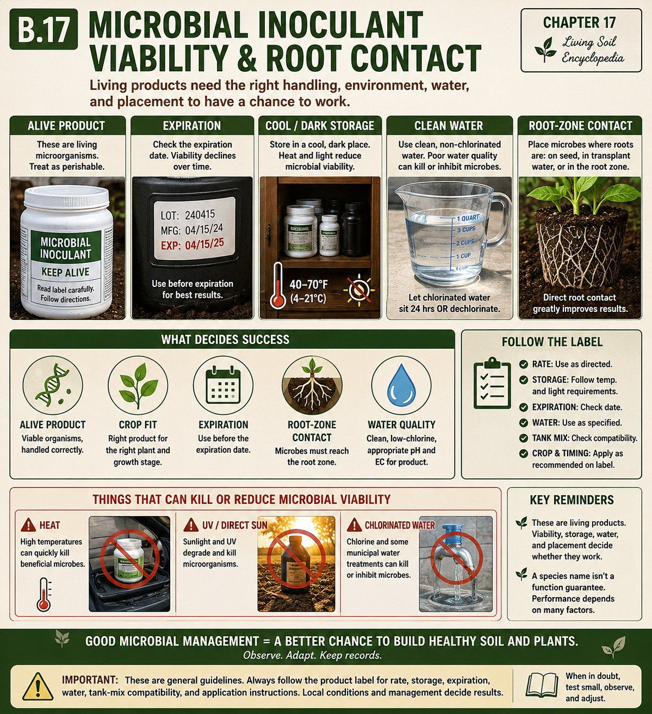
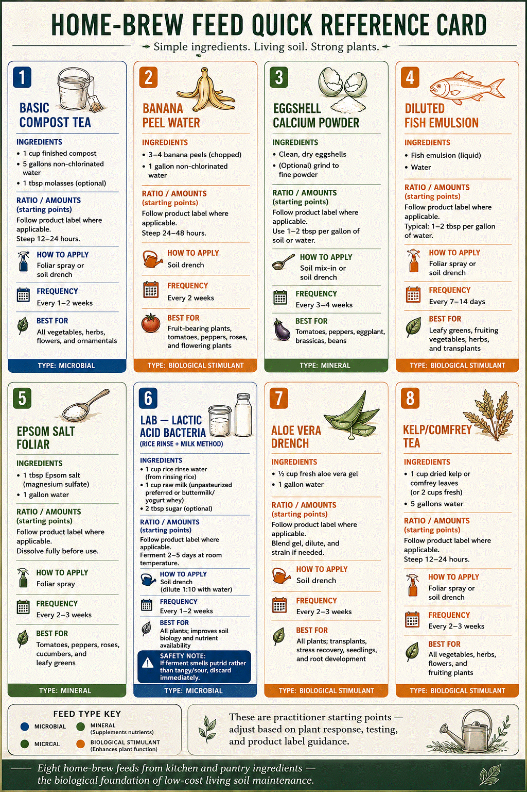
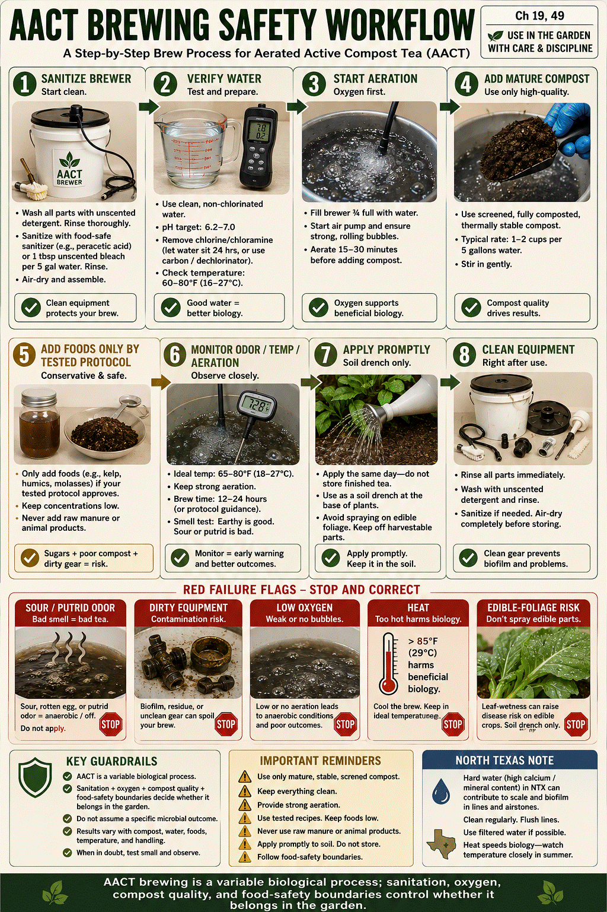
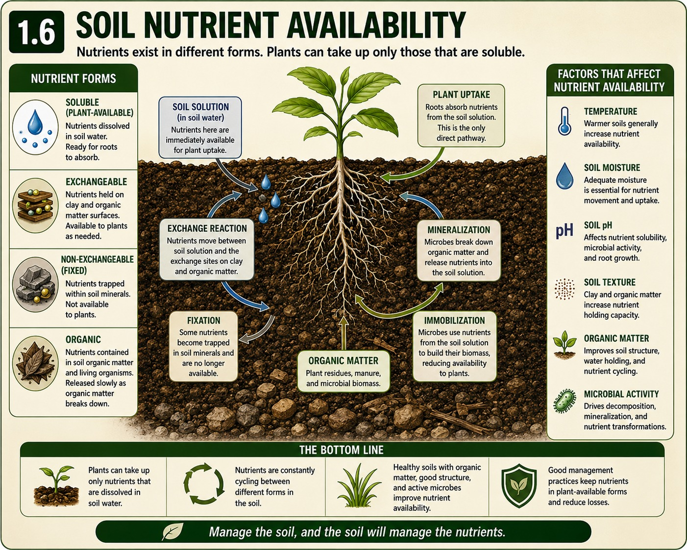
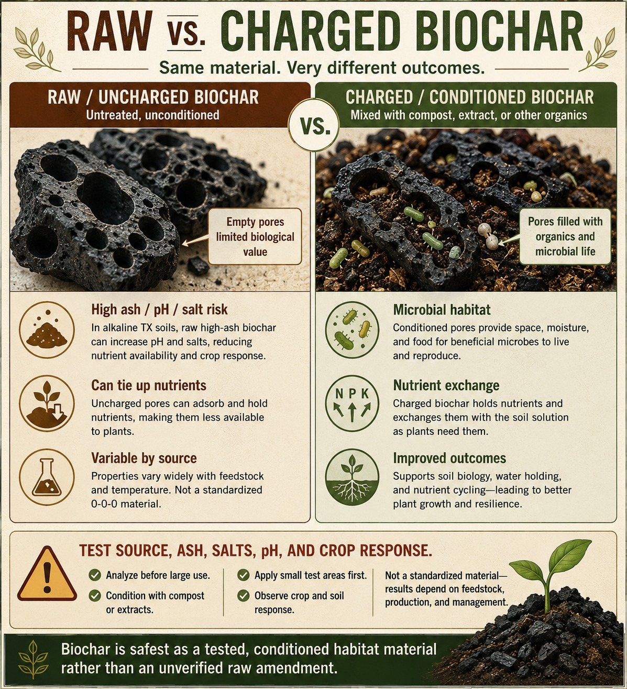

Five-book working edition — structurally reassembled; publication blockers remain open
Page numbers populate during print rendering through target-counter CSS.

Safety Box: compost, manure, bokashi, hot piles, and edible crops. Treat manure-derived composts, worm products, bokashi, frass, and compost teas as biologically active materials, not sterile fertilizers. Use only finished, mature material around food crops; keep raw or partially fermented materials away from harvestable plant parts; wash hands and tools after handling; avoid breathing dust, steam, ammonia, or aerosols; and follow local extension or food-safety guidance when material contains manure, food scraps, or added sugars. Hot compost piles can generate heat, steam, and irritating gases, so turn and inspect them with care. Compost tea or extract sprayed on edible crops requires extra caution because efficacy and food-safety risk depend on compost quality, brew conditions, sanitation, crop, timing, and harvest interval.


Field photo brief (SP-13): Compost maturity comparison with a clear cue: Show finished/crumbly vs unfinished/coarse material; include contamination screen if present
Thermophilic Compost
North Texas Note: In our extreme summer heat (often exceeding 100°F for long stretches), compost piles dry out rapidly. Cover piles or otherwise manage moisture so biological activity does not stall.
Vermicompost
North Texas Note: Keep worm bins in deep shade or indoors during a Texas summer; sustained high temperatures can kill Eisenia fetida.
Leaf Mold
North Texas Note: Pecan leaves are abundant in North Texas but break down very slowly due to high lignin and tannins; shred them with a mower first to accelerate fungal colonization.
Mushroom Compost
North Texas Note: Because local soils and irrigation water can contribute to salinity and alkalinity problems, use mushroom compost cautiously and verify EC/salt levels before repeated applications.
Dairy Manure Compost
North Texas Note: Sourcing clean dairy manure in Texas can be difficult where pasture herbicides are used. Test a small batch on a sensitive plant (like a bean or tomato) before applying broadly.
Poultry Manure Compost
North Texas Note: Can be useful for stimulating decomposition of heavy carbon mulches in early spring when a soil test and crop plan justify the nitrogen and phosphorus load.
Black Soldier Fly Frass
North Texas Note: BSF larvae thrive in our hot summers; raising your own in a dedicated compost bin is a highly efficient way to process kitchen scraps in Texas when temperatures exceed 95°F.
Bokashi Pre-Compost
North Texas Note: Bokashi can be a useful way to process food waste indoors during peak summer when outdoor compost piles are difficult to keep moist.
Rabbit Manure
North Texas Note: Rabbit manure can be useful in sandy loam areas of Parker and Tarrant counties, but handle it with the same contamination and food-safety caution as other manures.
Worm Castings (Pure)
North Texas Note: Use pure castings strategically in seed starting mixes or transplant holes to maximize value, rather than broadcasting them over large areas.
Finished compost is mature, aerobically stabilized organic matter. It may be made from leaves, crop residues, food scraps, animal manures, bedding, wood fines, or mixed feedstocks, but its usefulness depends less on the ingredient list than on whether the material has passed through active decomposition and curing without remaining hot, sour, salty, anaerobic, or contaminated. It is not a fixed fertilizer. It is a variable soil amendment whose main value is structure, biological habitat, moisture behavior, and slow nutrient cycling.
The strongest reason to use finished compost is physical. In clay, compost helps aggregation by adding processed carbon, microbial residues, and particulate organic matter that interact with roots, fungal hyphae, bacteria, and soil fauna. It does not “loosen clay” by dilution unless huge volumes are used; it helps clay behave better by improving pore continuity, surface tilth, and crust resistance when combined with roots, mulch, and minimal disturbance. In sandy soil, compost improves water and nutrient retention, though repeated additions are needed because warm, aerated systems keep decomposing carbon.
Compost also supports the nutrient-mineralization loop. Nutrients are held partly in organic molecules and microbial biomass rather than appearing immediately as soluble fertilizer. As bacteria and fungi decompose the material, and as protozoa, nematodes, mites, springtails, earthworms, and other organisms graze that biomass, a portion of nitrogen, sulfur, phosphorus, and trace elements returns to plant-available forms. This makes compost a biological fertility buffer, not a quick rescue for severe deficiency.
NPK values are never universal. A rough garden shorthand sometimes treats compost as a low-analysis material, but real nitrogen, phosphorus, potassium, calcium, salts, sodium, and pH vary by feedstock and batch. Manure-based compost may carry enough phosphorus, potassium, salts, and alkalinity to create problems if used repeatedly. Plant-based compost may be gentler but can still be immature, nitrogen-immobilizing, or contaminated. Use a batch analysis when making repeated or large applications, especially in raised beds and containers where salts and phosphorus accumulate.
Compost quality has to be judged by maturity, stability, contamination risk, and fit for purpose. Finished material should smell earthy, remain cool after rewetting, contain no visible raw manure or slimy food scraps, and support seed germination in a simple bioassay. Heat treatment can reduce many pathogens and weed seeds when properly managed, but it does not make compost sterile or automatically safe for every edible-crop use. Manure-derived materials still require food-safety caution around harvestable plant parts.
The largest hidden risk is persistent herbicide contamination. Hay, straw, bedding, manure, municipal green waste, and some composted feedstocks can carry aminopyralid, clopyralid, picloram, aminocyclopyrachlor, or related residues. These materials can deform tomatoes, beans, peas, sunflowers, lettuce, and other sensitive crops even when the compost looks and smells good. A bean, pea, tomato, or sunflower bioassay is cheap insurance before spreading unknown compost broadly.
Use finished compost as a top-dress, bed-building ingredient, transplant-zone amendment, or compost-extract source only when the material matches the crop and the risk level. Light recurring top-dresses under mulch are usually safer than repeated heavy applications. In containers and seed-starting mixes, compost should be used conservatively and only after checking texture, EC/salts, maturity, and germination response. More compost is not automatically better.
Compost works best with living roots and mulch. Roots keep feeding the rhizosphere; mulch protects moisture and temperature; compost adds processed organic matter and microbial habitat. Compost does not replace drainage, rotation, sanitation, resistant varieties, pest scouting, soil testing, or water management. It is one core material in a living-soil system, not the whole system.
North Texas growing note: In Lewisville, Denton, and north DFW, finished compost should be treated as a powerful but measured amendment. Blackland Prairie clay often already has high CEC, alkaline pH, calcium influence, and hard irrigation water. Compost can improve aggregation and surface behavior, but repeated manure-heavy or high-salt compost can push phosphorus, potassium, salts, and alkalinity in the wrong direction. Summer heat dries raised beds and concentrates salts near drip wetting fronts. Use tested compost, keep it under mulch, avoid stacking it with poultry manure compost, mushroom compost, guanos, or heavy meals unless soil tests justify the load, and shift toward leaf mold, cover crops, pine bark fines, or clean plant compost when the goal is structure rather than fertility.
Compost maturity assessment is the process of deciding whether compost is stable enough, clean enough, and appropriate enough to use around crops. It is not the same as asking whether the pile once got hot. A pile can reach thermophilic temperatures and still be immature, salty, ammonia-heavy, anaerobic, contaminated, or phytotoxic. The practical question is simple: will this material help the soil and crop, or will it injure roots, introduce risk, or distort fertility?
Maturity has several overlapping parts. Stability means the material is no longer rapidly decomposing in a way that generates heat, consumes oxygen, or releases high levels of ammonia or organic acids. Curing means the active hot phase has ended and microbial communities have continued processing the material into a more plant-compatible form. Safety means feedstocks, time-temperature handling, contamination controls, and edible-crop use have been considered. Fit means the compost matches the crop, soil, container, or bed where it will be used.
The first screen is sensory but not sufficient. Mature compost usually smells earthy, not sour, rotten, sewage-like, rancid, sulfurous, or strongly ammonia-like. It should be cool, crumbly, and reasonably uniform, with no recognizable raw manure, slimy food waste, large bedding clumps, trash, glass, plastic, or uncomposted herbicide-risk material. If the pile heats again after rewetting and sitting for a day or two, it may still be biologically unstable.
The second screen is plant response. A simple bioassay can prevent expensive mistakes. Plant sensitive seeds such as beans, peas, tomato, lettuce, radish, sunflower, or cress in a small blend of the compost and a clean control mix. Watch germination, root length, leaf shape, yellowing, twisting, cupping, stunting, and overall vigor. Poor germination may indicate salinity, ammonia, organic acids, immaturity, or other phytotoxicity. Twisted or cupped broadleaf growth raises concern for persistent herbicides.
Persistent herbicide screening is critical. Aminopyralid, clopyralid, picloram, aminocyclopyrachlor, and related residues can pass through animals and composting processes. Finished-looking compost can still damage sensitive plants. Hay, straw, manure, bedding, pasture waste, municipal green waste, and unknown bulk compost all deserve suspicion until tested or documented. “Organic-looking” and “locally sourced” are not quality guarantees.
The third screen is chemistry. EC/salts, pH, sodium, nitrate/ammonium balance, phosphorus, potassium, calcium, moisture content, and carbon-to-nitrogen context matter when compost will be used repeatedly, in containers, in seed-starting mixes, or in alkaline clay. A compost that is acceptable for top-dressing orchard mulch may be too salty for seedlings. A phosphorus-rich manure compost may be useful once and damaging if used every season as a nitrogen source.
The fourth screen is use context. Compost for potting media needs tighter screening than compost for a perennial mulch layer. Compost intended for compost tea or extract needs known maturity, clean water, clean equipment, and food-safety boundaries. Compost used near edible crop parts needs extra care when manure, food scraps, or animal products were involved.
Avoid using compost that fails any major screen. Immature compost can burn roots, immobilize nitrogen, create anaerobic pockets, or slow seedlings. Salty compost can cause tip burn and wilt even when soil appears moist. Contaminated compost can damage an entire bed for months or years. When in doubt, quarantine the batch, run a bioassay, and use it on non-food ornamental areas only after risk is understood.
North Texas growing note: Compost maturity assessment matters intensely in North Texas because heat and hard water magnify mistakes. Raised beds dry fast, salts concentrate, and alkaline Blackland clay does not need routine high-pH, manure-heavy compost unless testing supports it. A compost that seems fine in a rainy climate may push salt, phosphorus, or alkalinity problems here. Test suspect batches before broad use, especially if the feedstock includes hay, straw, manure, municipal material, or bedding. For Lewisville/Denton gardens, compost should be mature, low-odor, screened, bioassayed, and used under mulch rather than piled thick against stems.
Vermicompost is earthworm-processed organic matter produced by composting worms and their associated microbial community. In home and commercial systems, Eisenia fetida and related composting worms fragment feedstocks, pass material through the gut, and leave behind castings mixed with partly decomposed bedding and microbial biomass. Vermicompost is not the same thing as hot compost, pure worm castings, or a guaranteed microbial inoculant. It is a biologically processed amendment whose quality depends on feedstock, moisture, temperature, worm health, maturity, screening, storage, and contamination control.
Its value comes from gentle nutrient cycling, fine humified material, microbial activity, and improved seedling/transplant-zone conditions when the material is mature and clean. Worm processing increases surface area, blends organic matter, and changes microbial communities. The resulting material can improve aggregation, moisture retention, and nutrient buffering in small zones. It is often more useful as a strategic amendment in seed-starting mixes, transplant holes, potting blends, and top-dressing than as a bulk bed-fill material.
NPK values are variable and usually modest. Vermicompost made from vegetable scraps and paper bedding behaves differently from material made with manure, coffee grounds, brewery waste, municipal feedstocks, or poultry litter. Some batches are gentle; others can be salty, ammonia-prone, phosphorus-rich, or poorly stabilized. Do not assume that dark, fine material is automatically low-salt or seedling safe. For propagation, use a small percentage and test germination before relying on it.
The biology is real but often overstated. Vermicompost may contain bacteria, fungi, actinomycetes, protozoa, enzymes, plant-growth-promoting organisms, and humic-like substances, but the exact community is batch-specific. Dry bagged material may still improve structure and supply organic matter, but it should not be marketed in the manuscript as a guaranteed living inoculant after heat, drying, long storage, or poor handling. It is safer to describe effects as possible and quality-dependent.
Use vermicompost where precision matters. A handful in a transplant hole, a thin top-dress around seedlings, a small fraction in seed-starting or potting media, or a slurry used immediately as a root-zone drench can be valuable. Avoid placing wet, sour, anaerobic, or ammonia-smelling vermicompost against tender roots. Avoid thick layers that crust, seal, or hold the crown too wet. If it is being used in containers, check EC and texture because fine vermicompost can reduce air space when overused.
The main quality checks are smell, texture, temperature, moisture, feedstock history, and plant response. Good vermicompost smells earthy, feels fine and crumbly, and contains no obvious raw food waste. It should not heat after rewetting or smell sour, rotten, sewage-like, or strongly ammonia-like. A simple seedling test using lettuce, radish, beans, peas, or tomato can reveal salt, ammonia, immaturity, or herbicide problems before the material reaches valuable beds.
The biggest practical failure is treating vermicompost as a magic cure. It will not correct compacted subsoil by itself, sterilize disease, replace rotation, overcome hard-water alkalinity, fix a severe nutrient deficiency overnight, or make a poor container mix drain correctly. It works best in a system that already has proper moisture, aeration, soil cover, and crop-specific fertility.
North Texas growing note: Composting worms do not tolerate Texas summer heat well. In Lewisville, Denton, and north DFW, worm bins should be kept indoors, in deep shade, or otherwise protected from lethal heat. Outdoor bins can overheat quickly even when the air temperature is only part of the story. Vermicompost is excellent for transplants and seed-starting support, but it is too valuable and too variable to broadcast heavily across large Blackland clay beds. Use it strategically near roots, keep beds mulched, and avoid overusing manure-heavy vermicompost where phosphorus, salts, or alkalinity are already concerns.
Leaf mold is partially to fully decomposed deciduous leaf material. It is usually made by piling autumn leaves and allowing fungi, bacteria, microarthropods, moisture, and time to convert them into a dark, crumbly, woodland-like amendment. Unlike hot compost, leaf mold is not built primarily for rapid thermophilic processing or high nutrient content. Its main value is carbon, moisture behavior, fungal-leaning habitat, surface tilth, and gentle structure improvement.
The best way to understand leaf mold is as decomposed litter rather than fertilizer. Leaves are usually higher in carbon and lower in nitrogen than green residues or manures. As they break down, their cellulose, hemicellulose, lignin, tannins, waxes, and minerals are processed slowly by fungi and other decomposers. Finished leaf mold can improve water retention, reduce crusting, support surface biological activity, and serve as a gentle mulch-to-soil transition layer.
NPK values are low and variable. Leaf species, age, rainfall, dust deposition, neighborhood contamination, decomposition stage, and whether grass clippings or other materials were mixed in all change the final product. Leaf mold should not be used to correct a measured nitrogen deficiency or replace a fertility plan for heavy-feeding crops. It is better described as a soil conditioner and biological habitat material.
The biology is often fungal-leaning, but this should not be overstated. Leaf mold can support saprophytic fungi, shredding microarthropods, actinomycetes, bacteria, and earthworms, especially when kept moist and protected. It is not a standardized fungal inoculant and does not guarantee a specific fungal:bacterial ratio. Its ecological value comes from slow carbon processing and protected surface habitat.
Making leaf mold is simple but slow. Collect clean deciduous leaves, shred them if possible, moisten them evenly, and hold them in a wire bin, breathable pile, leaf cage, compost bay, or large aerated bag. Shredding dramatically increases surface area and speeds colonization. Keep the pile damp like a wrung-out sponge, not saturated. Turning is optional; it speeds the process but is not necessary. Depending on leaf type, particle size, moisture, and climate, usable material can take one to two years.
Not all leaves are equal. Oak and pecan leaves are useful but slower because of lignin and tannin content. Sycamore, elm, maple, and many mixed hardwood leaves often break down faster when shredded. Black walnut leaves and hulls need caution around sensitive crops because of juglone-related concerns, especially when fresh. Leaves collected from curbs, roads, treated lawns, parking lots, or industrial sites may carry oil, metals, herbicides, pesticides, trash, or salts.
Use leaf mold as a mulch ingredient, potting-mix component, raised-bed conditioner, fungal habitat layer, seedling-safe organic fraction only after testing, or perennial-bed amendment. It pairs well with compost, pine bark fines, wood chips, straw, cover-crop residue, and conditioned biochar. In seed-starting or container mixes, screen it and use it only after checking drainage, pH, EC, and germination response. Fine leaf mold can hold a lot of water and may reduce aeration if overused.
Avoid using leaf mold when it is slimy, sour, waterlogged, contaminated, full of weed seeds, or made from unknown municipal material. Fresh leaves can mat into an oxygen-blocking layer if applied too thickly without shredding. A mixed leaf mulch is excellent; a soggy, compacted leaf blanket over seedlings is not.
North Texas growing note: In Lewisville, Denton, and north DFW, leaf mold is one of the most useful low-risk carbon amendments for alkaline clay gardens. Pecan and oak leaves are abundant, but they break down slowly unless shredded. Use a mower, leaf shredder, or string trimmer in a bin to speed the process. Keep piles shaded and moist through summer, because 100–110°F heat can dry them into inactive paper. Leaf mold is especially valuable where compost overuse would add too much phosphorus, salt, or alkalinity. It is not a complete fertilizer, but it is excellent for surface tilth, moisture buffering, and long-term carbon cycling.
Mushroom compost is more accurately called spent mushroom substrate. It is the growth medium left after commercial mushroom production, most commonly from Agaricus systems. The original substrate may contain straw, hay, poultry litter, horse manure, gypsum, cottonseed meal, corn cobs, hulls, lime, or other regional ingredients depending on the producer. After the mushroom crop is harvested, the remaining material may be aged, steamed, composted further, screened, blended, or sold as a soil amendment.
The name causes confusion. Mushroom compost is usually not a mushroom inoculant, not a reliable fungal starter, and not a universal soil builder. Much of the active crop fungus has already completed its job, and many commercial products are treated or aged before sale. Its main practical value is organic matter, some nutrients, and mineral content. Its main risks are soluble salts, high pH or alkalinity, high phosphorus or potassium, sodium, ammonia, immature handling, and persistent herbicide contamination from hay, straw, or manure-based feedstocks.
NPK values are variable. Some batches behave like a mild compost; others are strong enough to burn seedlings or overload small beds. Poultry litter or manure-based substrates can carry meaningful nitrogen, phosphorus, potassium, calcium, salts, and alkalinity. Gypsum and lime used in substrate preparation can add calcium and influence pH. Therefore, mushroom compost belongs in a test-guided fertility plan, not as a repeated default top-dress.
The biological value is product-dependent. Fresh spent substrate may contain fungal residues and microbial communities, but retail products may have been steamed, dried, aged, or stored in ways that reduce living activity. Even when organisms remain, there is no reason to assume they will establish in vegetable beds or provide disease suppression. The manuscript should treat mushroom compost as a variable organic-mineral amendment rather than a functional fungal inoculant.
Use mushroom compost cautiously where a soil test, product analysis, and crop plan support it. It can be useful in small amounts in new beds, perennial plantings, or compost blends when the batch is mature and low in salts. It should generally not be used as the primary ingredient in seed-starting media, container mixes, or raised-bed fill unless tested. Young seedlings, salt-sensitive herbs, and containers are especially vulnerable.
The best sourcing questions are specific. Ask for feedstocks, EC/salts, pH, sodium, phosphorus, potassium, maturity/stability information, herbicide-risk controls, and whether the product has been blended with other composts. Avoid vague bulk products sold only as “great garden compost.” If hay, straw, manure, or bedding is part of the source stream, run a sensitive-plant bioassay before use.
Avoid mushroom compost when soil already tests high in phosphorus, potassium, sodium, EC, or pH; when the batch smells ammonia-like, sour, or anaerobic; when the supplier cannot identify feedstocks; or when the garden is already receiving manure compost, poultry compost, guano, bone meal, soft rock phosphate, or high-P organic fertilizers. Stacking these inputs often creates phosphorus and salt problems while growers are trying to add “organic matter.”
North Texas growing note: In Lewisville, Denton, and north DFW, mushroom compost should be a cautious, occasional material rather than a routine bed amendment. Blackland Prairie clay is already alkaline and calcium-influenced, and municipal water often adds bicarbonate pressure. Summer heat dries beds and concentrates salts. Mushroom compost can worsen pH, EC, phosphorus, potassium, or sodium issues if applied repeatedly. Use batch-tested, low-salt material only when a soil test supports the nutrient load. When the goal is structure, leaf mold, clean plant compost, aged pine bark fines, cover crops, or surface mulch are usually safer.
Dairy manure compost is stabilized organic matter made by composting cow manure with bedding, spilled feed, straw, hay, sawdust, sand, crop residues, or other dairy-waste materials. It can be a useful soil amendment when it is fully composted, tested, and matched to the crop. It can also be a high-risk material when it is immature, salty, phosphorus-heavy, alkaline, contaminated with persistent herbicides, or used repeatedly as a bulk source of “organic matter.”
Its nutrient profile is variable. Dairy manure compost often supplies organic matter, nitrogen, phosphorus, potassium, calcium, sulfur, salts, and micronutrients, but actual values depend on bedding, ration, lagoon or barn system, composting process, moisture, ash, curing, and screening. It should not be treated as a fixed NPK product. In many home gardens, the nitrogen release is slower than growers expect while phosphorus and salts accumulate faster than they notice.
The main benefit is stable organic matter plus a nutrient contribution. In degraded soil, well-made dairy manure compost can improve aggregation, water infiltration, biological activity, and nutrient buffering. It also feeds bacteria, fungi, earthworms, and other decomposers as it continues to mineralize. But it is still manure-derived. Composting reduces risk when properly managed; it does not erase all food-safety, salinity, nutrient, or contamination concerns.
Maturity is non-negotiable. Mature dairy manure compost should smell earthy, not ammonia-like, sewage-like, sour, or putrid. It should not heat after rewetting, contain raw bedding clumps, burn seedlings, or create slimy anaerobic pockets. If the material contains recognizable manure or produces strong ammonia, it is not ready for direct crop use. For edible crops, follow local extension or food-safety guidance, especially where harvestable plant parts might contact soil or splash.
Persistent herbicide contamination is the highest-stakes concern. Pasture hay, haylage, straw, or bedding exposed to aminopyralid, clopyralid, picloram, aminocyclopyrachlor, or related products can pass through cattle and remain active in manure compost. Sensitive crops such as tomato, bean, pea, sunflower, lettuce, and many ornamentals may twist, cup, stall, or fail. Always ask about herbicide history, and run a bioassay before applying unknown manure compost broadly.
Use dairy manure compost where soil testing shows room for the nutrient load. Light top-dressing under mulch, incorporation during new bed establishment, or blending into compost systems can be appropriate when EC, phosphorus, sodium, and pH are acceptable. Avoid repeated heavy applications to chase nitrogen. If nitrogen is the need, a targeted nitrogen amendment may be safer than continuing to add phosphorus-rich manure compost.
Avoid dairy manure compost in seed-starting mixes, near tender seed rows, in containers without testing, or on beds already high in phosphorus, sodium, salts, or pH. Avoid it when source documentation is weak or when the grower cannot quarantine and test the batch. Do not brew manure-derived compost into foliar teas for edible crops without strict food-safety controls.
North Texas growing note: Dairy manure compost needs restraint in Lewisville, Denton, and north DFW. Blackland Prairie clay often has high CEC, alkaline pH, calcium influence, and hard irrigation water. It can benefit from stable organic matter, but it does not need repeated alkaline, phosphorus-bearing manure compost unless soil tests support it. Summer heat dries raised beds and concentrates salts, especially under drip. Use dairy compost sparingly, test EC and phosphorus, run a bioassay for herbicide residues, avoid stacking it with poultry or mushroom compost, and choose leaf mold, cover crops, pine bark fines, or clean plant compost when the goal is structure.
Poultry manure compost is composted manure and litter from chickens, turkeys, ducks, or other poultry systems. It usually includes bedding such as wood shavings, straw, rice hulls, peanut hulls, or litter-house material. Compared with many plant-based composts, poultry manure compost is often nutrient-dense. That makes it useful when a crop plan and soil test justify the fertility load, and risky when a grower treats it as harmless bulk organic matter.
The key distinction is that poultry manure compost is both compost and fertilizer. It can add organic matter and support microbial activity, but it can also supply significant nitrogen, phosphorus, potassium, calcium, salts, and soluble nitrogen forms depending on the batch. Raw or poorly composted poultry manure can burn plants because of ammonia, uric acid, salts, and high nutrient concentration. Proper composting and curing reduce those risks but do not make the product universally safe.
Use product labels and batch analysis rather than generic rates. Pelletized poultry manure, litter compost, and locally produced windrowed material can behave very differently. Moisture content alone can change the apparent strength per scoop. Repeated use can build phosphorus faster than nitrogen demand, especially in vegetable beds where growers apply it every season for “organic nitrogen.” If phosphorus is already high, poultry manure compost may be the wrong nitrogen source.
Its biological role is mainly nutrient-driven. It stimulates decomposer activity because it supplies nitrogen and other nutrients to the microbial community. That can be useful for activating carbon-heavy mulches, compost piles, or hungry spring crops. But overapplication can create oxygen demand, ammonia release, salt stress, excessive vegetative growth, or nutrient imbalance. It does not automatically create a balanced soil food web.
Maturity and food safety matter. Use only composted, aged, or commercially labeled poultry manure products for garden beds. Material that smells sharp, ammonia-like, sour, or rotten should not be applied near roots. Avoid contact with harvestable edible plant parts, and follow extension guidance for manure-derived products in food gardens. Do not use poultry manure compost in seed-starting mixes unless it is specifically tested and blended at a safe percentage.
Sourcing should focus on feedstock, heat treatment, curing time, bedding, EC, pH, nutrient analysis, pathogen-process documentation, and herbicide-risk history of bedding. Poultry systems may use bedding or litter inputs from outside the farm, so “local” does not equal clean. A seedling bioassay is prudent before broad application, especially if the product is bulk, unlabeled, or unfamiliar.
Poultry manure compost pairs best with carbon. In compost piles, it can help balance dry leaves, wood fines, straw, or shredded stalks. In beds, it should usually be covered with mulch and watered into an active root zone rather than left as a hot surface layer. It should not be stacked casually with bone meal, fish bone meal, guano, manure compost, mushroom compost, or high-phosphorus fertilizers unless testing supports the total load.
North Texas growing note: Poultry manure compost can be useful in North Texas, but it is easy to overdo. In Lewisville, Denton, and north DFW, alkaline clay, hard water, summer salt concentration, and repeated organic inputs already create nutrient-management pressure. Use poultry manure compost as a measured fertility amendment, not a default compost. It can help activate heavy carbon mulches or spring beds when a soil test supports nitrogen and phosphorus demand, but avoid using it repeatedly on tomato, pepper, herb, or root-crop beds without checking phosphorus, EC, sodium, potassium, and pH.
A compost pile is a managed biological reactor. Its purpose is to transform raw organic residues into stable, mature material suitable for soil building. A pile is not automatically safe or mature because it looks dark. Good compost requires appropriate feedstock balance, moisture, oxygen, mass, temperature management, time, and screening for contaminants.
1. Choose clean feedstocks. Use plant residues, leaves, small wood chips, spent crop material, and appropriate nitrogen sources. Avoid persistent-herbicide-risk hay, straw, manure, or grass clippings unless the source is known or bioassayed. Do not use diseased crop residue, meat, pet waste, glossy paper, treated wood, or contaminated material in a garden compost stream.
2. Balance carbon and nitrogen. Browns such as dry leaves, straw, and wood chips provide carbon and structure. Greens such as fresh plant matter, coffee grounds, and some manures provide nitrogen and moisture. The exact mix is adjusted by smell, heat, moisture, and texture rather than a fixed universal ratio.
3. Build for aeration. A pile needs enough size to heat but enough structure to breathe. Coarse material prevents collapse. Fine wet material packed tightly can become anaerobic quickly.
4. Set moisture correctly. The pile should feel like a wrung-out sponge: moist enough for biology, not dripping or waterlogged. Dry piles stall; wet piles rot.
5. Monitor temperature and odor. Thermophilic composting can reduce weed seed and pathogen risk only when time, temperature, turning, and pile uniformity are managed. Use a compost thermometer. Rotten, sulfurous, sewage-like, or ammonia-heavy odor signals imbalance.
6. Turn when needed. Turning reintroduces oxygen and moves outer material inward. Frequency depends on heat, moisture, feedstock, and the goal. Do not turn steaming, ammonia-heavy, manure-rich compost without gloves, eye protection, respiratory caution, and awareness of heat and irritant gases.
7. Cure before use. Finished compost should be stable, earthy, crumbly, and no longer heating. Immature compost can burn seedlings, immobilize nitrogen, release ammonia or organic acids, or introduce pathogens.
8. Screen and test. Remove trash, plastic, large woody chunks, and suspicious residues. For unknown compost or herbicide-risk materials, conduct a sensitive-plant bioassay before using it in vegetable beds.
North Texas compost management is mostly moisture management. Summer heat can dry piles until biology stalls; spring storms can waterlog piles into anaerobic mats. Keep piles covered when needed, water during dry periods, and build with enough coarse carbon to maintain airflow. Do not assume local manure or hay is safe; persistent pasture herbicides are a real risk in regional supply chains.
Safety Box: plant powders, botanical inputs, and foliar sprays. Dry meals and powdered extracts can be inhalation hazards; handle them with gloves, eye protection, and dust control. Botanical pest-deterrent materials such as neem or karanja should be treated as pesticides when used for pest management: avoid spraying open flowers, follow label restrictions, and protect pollinators and beneficial insects. Homemade plant ferments and compost teas are not standardized fertilizers; use breathable covers where fermentation produces gas, test on a small area first, and avoid foliar use on harvestable edible portions unless the process and timing meet food-safety guidance.
Kelp Meal
North Texas Note: Because North Texas soils and irrigation water may carry alkalinity or sodium risk, follow the kelp product label and local soil/water tests rather than using a fixed half-rate rule.
Alfalfa Meal
North Texas Note: Can be a useful 'green' addition to compost piles when fresh grass clippings are scarce due to drought.
Neem Seed Meal
North Texas Note: Neem meal may be useful in root-knot-nematode-prone sandy loams as one part of a broader IPM program, but it should not be presented as a stand-alone or systemic pest-control guarantee.
Karanja Meal
North Texas Note: Use interchangeably or in combination with neem only as a labeled/practitioner soil amendment within a broader IPM plan based on pest identification and monitoring.
Malted Barley (Seed/Powder)
North Texas Note: Can be an inexpensive practitioner top-dress before spring rain, but decomposition response depends on soil moisture, temperature, and mulch type.
Soybean Meal
North Texas Note: Can be an alternative to blood meal where a nitrogen source is justified, but it relies on warm, moist, biologically active soil for release and should follow label guidance.
Cottonseed Meal
North Texas Note: Organic cottonseed meal may be useful where nitrogen is needed, but its acidifying effect should not be relied on to correct alkaline soils or water.
Corn Gluten Meal
North Texas Note: May be useful in pathways for pre-emergent weed suppression when timed correctly, but keep it away from direct-seeded vegetable beds.
Wood Ash
North Texas Note: Generally avoid wood ash in North Texas gardens unless a soil test specifically supports it. Many local soils are already alkaline/calcareous, and ash can worsen pH and nutrient availability.
Rice Hulls
North Texas Note: A useful aeration amendment for raised beds, with regional sourcing advantages where rice hulls are available from Texas or Louisiana supply chains.
Peat Moss
North Texas Note: If peat moss dries out completely in 100°F+ summers, it can become hydrophobic. Maintain mulch and consistent moisture over peat-based soils to reduce surface baking.
Coco Coir
North Texas Note: A sustainable alternative to peat, but ensure you buy high-quality, pre-buffered coir to avoid introducing sodium into our already salt-stressed Texas soils.
Pine Bark Fines
North Texas Note: A useful regional base for container soils and acid-loving crops when the mix is designed for drainage, pH, and nitrogen management.
Straw / Hay
North Texas Note: Straw or similar mulch is highly useful for Texas summers; a consistent mulch layer can substantially reduce soil-surface heating and moisture loss, but exact temperature reduction depends on material, depth, irrigation, wind, and exposure.
Wood Chips / Ramial Wood
North Texas Note: Wood chips are a strong mulch option for fruit trees and perennial beds in Texas. They retain moisture, support fungal decomposers, and can gradually improve soil structure as they break down.
Comfrey (Dynamic Accumulator)
North Texas Note: Comfrey can be useful on-site biomass if given afternoon shade and water, but do not treat it as a complete fertilizer without soil or tissue context.
Nettle (Dynamic Accumulator)
North Texas Note: May be found in damp, shaded areas of North Texas in early spring. Harvest legally and safely before flowering if using it in practitioner preparations.
Yarrow
North Texas Note: Yarrow can be a useful, drought-tolerant insectary plant in Texas. Its effect on beneficial insects and clay structure depends on bloom timing, stand density, and site conditions.
Horsetail (Equisetum)
North Texas Note: Horsetail tea is sometimes used as a practitioner foliar spray during humid periods, but it should not replace airflow, resistant varieties, sanitation, irrigation management, and disease monitoring for powdery mildew.
Aloe Vera (Raw/Powder)
North Texas Note: Protect aloe from freezing in North Texas. It can be used in practitioner rooting preparations, but test on a few cuttings before replacing a known rooting protocol.
Yucca Extract
North Texas Note: Yucca extract can be a useful natural wetting agent for rehydrating hydrophobic peat-based mixes, but follow the label and test compatibility with irrigation water.
Kelp Extract (Liquid)
North Texas Note: Kelp extract may be used as a label-guided stress-support spray before forecasted heat or freeze stress, but it is not a substitute for irrigation, shade, frost protection, or cultivar selection.
Alfalfa meal is dried and ground Medicago sativa, usually sold as a livestock feed or garden amendment. Alfalfa pellets are the same crop compressed into pellets, sometimes with minor binders depending on the feed product. In living-soil systems, alfalfa is used as a “green” plant-based amendment: it contributes organic nitrogen, proteins, carbohydrates, minerals, and plant compounds such as triacontanol. Its NPK value varies by crop quality, cutting, drying, storage, pellet formulation, and moisture content, so the product label or feed analysis should guide use.
Alfalfa decomposes faster than woody carbon sources and can stimulate bacterial activity when soil moisture and temperature are adequate. It can help heat a compost pile, activate a sluggish mulch layer, or provide a moderate organic nitrogen pulse for heavy-feeding annual crops. That same responsiveness creates risk. If applied too heavily, alfalfa can heat, smell, mold, attract animals, or create ammonia and oxygen-stress problems near tender roots. It is a biological food source, but it is not a precision fertilizer.
The microbial role is mostly decomposition. Bacteria respond quickly to the proteins and soluble carbohydrates. Fungi and soil fauna may later process the remaining fibers. Protozoa and nematodes can increase indirectly as bacterial populations rise, potentially contributing to mineralization. This is useful when the crop and season need more nitrogen cycling. It is not useful when a bed already has excessive nitrogen, weak airflow, wet soil, or heavy pest pressure associated with lush growth.
Application should follow the product label, feed analysis, compost recipe, soil/media test, or crop-stage plan. For top-dressing, alfalfa should be kept off stems and covered lightly with compost or mulch where appropriate. In soil mixes, it should be used cautiously because microbial decomposition can heat young mixes before planting. In compost piles, it can substitute for fresh grass clippings or other nitrogen-rich greens when drought limits fresh material. Pellets should be hydrated before mixing if even distribution is needed, but hydrated pellets can ferment rapidly in warm weather.
Sourcing should prioritize clean, unsprayed, or organic alfalfa where residue concerns matter. Alfalfa is a broadleaf crop and may be exposed to herbicides depending on production system, though the specific residue risk depends on product and source. Feed-store pellets may be economical, but check for added molasses, minerals, medications, or binders. Garden-grade meal may be easier to apply but more expensive. Avoid moldy or rancid material.
Conflicts include heat, odor, pest attraction, nitrogen oversupply, and herbicide uncertainty. Alfalfa is not ideal around seedlings if used heavily. It can also push vegetative growth at the expense of fruiting if used repeatedly during reproductive stages without testing. Like other plant meals, it relies on microbial processing; in cold, dry, or anaerobic soil it may not release nutrients as expected.
NORTH TEXAS NOTE: Alfalfa meal can be especially useful as a compost-pile green when drought reduces lawn clippings, or as a spring top-dress for nitrogen-demanding beds when a soil test and crop plan support it. In summer heat, apply conservatively and keep it under mulch rather than leaving it exposed to bake, mold, or attract scavengers. In heavy clay that stays wet after storms, avoid heavy alfalfa applications that could worsen oxygen stress near roots.
Cottonseed meal is a plant-based amendment made from Gossypium seed after cottonseed oil extraction. It supplies organic nitrogen with smaller amounts of phosphorus, potassium, sulfur, and organic matter. It is often described as mildly acidifying as it decomposes, but that effect is limited and strongly buffered by soil type. In living-soil systems, cottonseed meal is best treated as a biologically processed nitrogen source, not as a pH-correction tool.
As microbes decompose cottonseed meal, nitrogen is gradually mineralized into plant-available forms. The release pattern depends on meal quality, particle size, soil temperature, moisture, oxygen, and microbial activity. In a biologically active bed, it can support vegetative growth and moderate fertility demand. In a cold or dry bed, release slows. In a wet, compacted, or poorly aerated bed, decomposition can produce odor or root stress. Cottonseed meal belongs in a fertility plan, not in every soil mix by default.
Cottonseed meal is sometimes favored for acid-loving crops because of its reputation for mild acidification. That claim needs careful framing. Decomposition can create some acidifying effects, but in alkaline, calcareous, or high-CEC clay soils, the buffering capacity is usually far stronger than the amendment’s pH influence. It may slightly influence the rhizosphere or a container mix, but it will not reliably acidify native North Texas clay or hard-water irrigated beds at scale.
Application should follow the product label, soil/media test, crop need, and overall nitrogen budget. It can be mixed into a pre-plant amendment blend, added to compost, or top-dressed under mulch. Keep it away from direct seed contact and tender stems. In containers, use conservative amounts because cottonseed meal can contribute to salt and nitrogen pressure. In perennial systems, apply only when the crop benefits from nitrogen; many Mediterranean herbs and low-fertility perennials do not need rich nitrogen inputs.
Sourcing is more complicated than with some plant meals. Cotton is commonly grown in conventional systems, and residue concerns may matter to organic growers or cautious home gardeners. Choose certified organic cottonseed meal where avoiding pesticide or herbicide residues is a priority. Check the label for analysis and additives. Avoid feed or industrial products not intended for soil or horticultural use unless the contents are clear and appropriate.
Conflicts include nitrogen excess, residue concern, animal attraction, acidification overstatement, and crop mismatch. Cottonseed meal can encourage lush growth when a plant should be shifting toward flowering, fruiting, or hardening off. It may also be unnecessary in soils already receiving compost, manure, alfalfa, soybean meal, fish hydrolysate, or other nitrogen inputs. Do not layer multiple nitrogen meals just because each is “organic.”
NORTH TEXAS NOTE: Cottonseed meal is regionally familiar and can be useful where a plant-based nitrogen source is justified. However, do not rely on it to fix alkaline Blackland clay or high-bicarbonate irrigation water. Its acidifying effect is usually too small against calcareous parent material and high buffering capacity. Use it for nitrogen and organic matter, not as a pH strategy. For blueberries, azaleas, or other acid-loving plants, build a crop-specific media system rather than trying to acidify native clay with cottonseed meal alone.
Soybean meal is a high-protein plant-based amendment made from processed Glycine max seed after oil extraction. It is primarily an organic nitrogen source, with smaller amounts of phosphorus, potassium, sulfur, and trace minerals depending on product and processing. In living-soil systems it is used when the grower wants a slower, biologically mediated nitrogen release rather than a soluble nitrate input. Its actual analysis varies, so the label or feed analysis should guide use.
The soil food web must decompose soybean meal before most of its nitrogen becomes plant-available. Bacteria are usually the first major responders because the meal contains proteins and relatively accessible carbon. As bacteria grow and are grazed by protozoa and nematodes, nitrogen can mineralize into plant-available forms. That biological pathway is useful only when soil is warm, moist, aerated, and biologically active. In cold, dry, compacted, or saturated soil, release can be slow, uneven, or accompanied by odor.
Soybean meal is not a balanced amendment. It can support leafy growth and early vegetative demand, but it should not be added automatically to every bed. Heavy use can oversupply nitrogen, contribute to salt or ammonium stress, attract animals, or increase lush tender growth that is more vulnerable to aphids and other pests. It should be matched to crop demand, soil nitrogen status, compost history, and timing. A heavy-fruiting tomato bed, a seedling tray, a lean herb mix, and an overwintered brassica bed do not need the same nitrogen strategy.
Application should remain label-, test-, and crop-stage-dependent. In a pre-plant mix, soybean meal needs time to begin decomposition before roots are concentrated in the zone. In an established bed, it can be top-dressed lightly and covered with compost or mulch. Avoid direct contact with stems, seedlings, or root crowns. In containers, be more conservative because the smaller soil volume gives less buffering against over-application. Do not rely on soybean meal for immediate rescue of severe nitrogen deficiency; soluble or faster organic options may be more appropriate if testing and crop stage justify intervention.
Sourcing is a major editorial consideration. Soy is often genetically engineered and conventionally grown, so users concerned with GMO status, herbicide exposure, or organic standards should choose certified organic or clearly labeled meal. Feed-grade soybean meal may be economical but should be checked for additives, salt, medications, or non-garden ingredients. Garden-grade products may be more expensive but usually provide clearer directions.
The main conflicts are nitrogen burn, odor, animal attraction, residue concerns, and imbalance. Soybean meal can substitute for blood meal where a plant-based nitrogen source is preferred, but it is not identical. Blood meal is generally faster and more concentrated; soybean meal is plant-derived and protein-rich but still potent. It should not be combined casually with alfalfa, poultry manure, fish meal, and other nitrogen sources unless the total nitrogen load is being calculated.
NORTH TEXAS NOTE: Soybean meal can work well in warm North Texas soils because microbial decomposition is active for much of the growing season. That same warmth means over-application can move quickly toward odor, ammonium stress, or lush growth. In alkaline clay, nitrogen release is not the only issue; root oxygen, drainage, salinity, potassium balance, and irrigation consistency still determine crop response. Use soybean meal as a targeted nitrogen amendment, not as a routine blanket feeding.
Corn gluten meal is a high-protein byproduct of corn wet milling. In garden systems it is used in two different ways: as an organic nitrogen source and, under specific timing and moisture conditions, as a pre-emergent seed-germination suppressor. Those two roles can conflict. The same material that may suppress weed seed establishment can also interfere with direct-seeded vegetables, cover crops, and self-sowing flowers. It should be used with timing discipline.
As a fertilizer, corn gluten meal supplies organic nitrogen that must be decomposed by soil microbes. Bacteria respond to the proteins and accessible carbon, and plant-available nitrogen is released gradually as the meal breaks down. The release is not instant and depends on soil warmth, moisture, aeration, and biological activity. It can support vegetative growth where nitrogen is needed, but it should be integrated into the total nitrogen budget with compost, meals, manures, fish products, and cover-crop residues.
As a pre-emergent weed tool, corn gluten meal is intended to inhibit root formation in germinating seeds. This effect is not selective. It can affect weed seeds and crop seeds. It works best when applied before target weed germination, then managed through the correct wet/dry cycle according to product guidance. If it is applied after weeds have emerged, it functions mainly as a nitrogen source and may feed the weeds. If it is applied before direct-sown carrots, lettuce, beets, cilantro, dill, or cover crops, it may reduce the crop stand.
The microbial role is decomposition, not inoculation. Corn gluten meal can feed bacteria and nitrogen-cycling organisms, but it does not add a specialized microbial community. It can contribute to a bacterial-leaning nutrient pulse, which may be useful in some annual vegetable contexts but less desirable in lean herb beds, fungal-leaning perennial systems, or late-season fruiting crops where excess nitrogen is not wanted.
Application must be label- and purpose-dependent. If used for nitrogen, follow the product label or soil-test recommendation and keep it away from tender stems. If used for pre-emergent suppression, follow timing instructions and avoid areas scheduled for direct seeding. It can be useful in paths, ornamental beds, around established transplants, or in off-season weed management, but it is a poor fit where germination is desired. In containers, be conservative because the nitrogen concentration and smaller volume can create imbalance.
Sourcing should be clear and labeled. Corn gluten meal may be available as garden-grade pre-emergent product, feed-grade meal, or lawn product. Products may differ in particle size, analysis, and additives. If organic certification matters, verify the specific product. If avoiding genetically engineered corn is important, choose a certified organic or identity-preserved source. Do not assume feed-grade products are appropriate for garden use without checking contents.
Conflicts include nonselective germination suppression, nitrogen excess, odor, animal attraction, and GMO/residue concerns. Corn gluten meal is not a post-emergent herbicide, not a substitute for mulch, and not a complete fertility plan. Used incorrectly, it can make weed problems worse by feeding established weeds while preventing desirable seeds from filling bare soil.
NORTH TEXAS NOTE: Corn gluten meal can be useful in North Texas pathways or established beds where pre-emergent timing is realistic, but it should be kept away from direct-seeded vegetable beds and cover-crop windows. Spring weed germination can move fast after rain and warming soil, so timing matters. In summer heat, using it mainly as nitrogen can produce lush growth or odor if overapplied under wet mulch. Treat it as a targeted tool, not a routine soil-health amendment.
Malted barley is barley seed that has been germinated and then dried to preserve some of the enzymes created during sprouting. In living-soil communities, especially Coot’s Mix-style practitioner systems, freshly ground malted barley is used as a top-dress or soil amendment intended to add enzymes, starches, proteins, and easily decomposable plant material. It is not a complete fertilizer and should not be presented as a guaranteed enzyme delivery system under all soil conditions.
The main practitioner appeal is enzymatic. Malting develops enzymes such as amylases and proteases that help the seed convert stored starches and proteins during germination. Some practitioner literature also emphasizes phosphatases and chitin-related enzymes. Once malted barley is ground and added to soil, enzyme persistence depends on moisture, temperature, microbial activity, time after grinding, and the soil environment. Enzymes are proteins; they can denature, bind to soil particles, or be consumed by microbes. Therefore, malted barley should be described as a potential source of enzymes and decomposable substrates, not as a guaranteed biochemical switch.
Microbially, malted barley can feed decomposer organisms quickly. The starches, proteins, and soluble compounds may stimulate bacteria and fungi when conditions are moist and aerated. Soil fauna and worms may also process the material under mulch. This can be useful in established no-till containers and biologically active beds. It can be problematic if overapplied, left in wet clumps, used around seedlings, or added to already-rich soils where nitrogen and microbial oxygen demand are high.
Application should be based on the specific recipe, product, and crop context. Whole malted barley is often ground fresh by practitioners because enzyme activity and aroma decline after grinding. Fresh grinding also creates dust, so respiratory protection is appropriate. A light top-dress under mulch is different from mixing large amounts into a seed-starting medium or transplant zone. Do not use fixed universal rates. Follow the product label where one exists, or a tested practitioner protocol, and trial small areas before broad adoption.
Sourcing should focus on clean, unsalted, unflavored malted barley. Brewing supply stores often sell malted barley by type; plain malt is preferred over roasted, smoked, flavored, or treated products. Animal feed barley is not the same as malted barley unless it has been germinated and dried. Pre-ground malted barley is convenient but may have lower active enzyme potential depending on age and storage. Store whole grain dry, cool, and pest-free.
Conflicts include mold, odor, pests, decomposition heat, and overclaiming. Malted barley can attract rodents, dogs, birds, or insects if left exposed. It can mold under wet mulch, especially in humid weather. Overuse may contribute to oxygen demand and sour zones in containers. It is not a substitute for compost maturity, mineral testing, pest scouting, or disease management. Claims that malted barley reliably controls pests or unlocks all nutrients should be avoided.
NORTH TEXAS NOTE: Malted barley can be a useful spring or fall top-dress in active living-soil beds when moisture is present and temperatures are not extreme. In North Texas summer heat, surface-applied ground grain can bake, mold after irrigation, or attract scavengers if not covered. Use lightly, keep it under mulch or compost, and avoid adding it to saturated clay after storms. In containers, watch for fungus gnats and odor if the mix stays too wet.
Kelp meal is a dried, ground seaweed amendment, most commonly made from Ascophyllum nodosum or related brown seaweeds. In living-soil systems it is valued less as a primary fertilizer and more as a broad plant-based input that can contribute trace minerals, complex carbohydrates, alginates, mannitol, and seaweed-derived compounds associated with plant stress response and microbial activity. Its exact nutrient profile varies by species, harvest location, season, processing method, moisture content, and product batch, so it should never be treated as having a universal NPK value.
Kelp meal decomposes slowly compared with soluble kelp extracts. As soil organisms break it down, it can provide carbon compounds and mineral traces to the rhizosphere. Bacteria, fungi, and small soil fauna may respond to the material when moisture, temperature, and oxygen are favorable. This does not mean kelp meal automatically “feeds fungi” in every soil or guarantees stronger immunity, rooting, or pest resistance. Its effect depends on product quality, soil biology, application rate, salt content, moisture, and crop stage.
In a living-soil program, kelp meal is often used in dry amendment blends, top-dress mixes, composting systems, and Coot’s Mix-style practitioner recipes. It can also be added to compost piles or worm systems in small, label- or recipe-guided amounts. Use should remain product-label-, soil/media-test-, and crop-context-dependent. In a new mix, kelp belongs in the background mineral/biostimulant category, not as the main nitrogen, phosphorus, or potassium source. In an established bed, it is best used as part of a broader top-dress program that includes compost, mulch, and test-guided mineral correction rather than as a stand-alone rescue amendment.
Sourcing matters because seaweed accumulates minerals from the water it grows in. Look for a clearly identified species, harvest region, processing method, and guaranteed analysis where available. Cold-processed or low-temperature dried products are often preferred in practitioner systems, but the label and analysis matter more than marketing language. Avoid dusty, unlabeled, musty, or salt-heavy products, especially for containers, seed-starting mixes, or arid climates. If sodium content is listed, use it in the decision.
Kelp meal can conflict with salt management. Some products may contain meaningful sodium or soluble salts, and repeated use in containers or low-leaching raised beds can contribute to salinity pressure. It can also attract animals when mixed with fish- or crustacean-based meals, and it may mold on the surface if applied heavily under wet mulch. Kelp meal is not a substitute for potassium sulfate when a lab identifies a strong potassium deficiency, nor is it a substitute for a complete micronutrient plan when trace elements are deficient.
NORTH TEXAS NOTE: North Texas soils and municipal irrigation water can already carry alkalinity, bicarbonates, sodium, or salinity concerns. Use kelp meal according to product label and soil/media context rather than a fixed regional rate. In raised beds and containers, monitor EC/salts if using kelp repeatedly with other marine inputs such as fish hydrolysate, fish meal, crab meal, shrimp meal, or seaweed extracts. Kelp can be useful in living-soil programs here, but it should not worsen the very salt and sodium pressures the system is trying to buffer.
Yucca extract is usually derived from Yucca schidigera or related yucca species and is used in horticulture primarily as a natural wetting agent. Its active compounds include saponins, which reduce surface tension and help water spread and penetrate hydrophobic media or waxy leaf surfaces. In living-soil systems, yucca is often grouped with plant-based biostimulants, but its most reliable function is physical: improving wetting and coverage. Claims about rooting, stress tolerance, microbial stimulation, or nutrient uptake should remain product- and context-dependent.
The practical value of yucca is clearest in peat- or coir-based media that have become difficult to rewet. Dry peat can shed water, causing irrigation to channel down the side of a container while the root ball stays dry. A label-guided yucca drench can help water infiltrate more evenly. Yucca can also be used in some foliar sprays to improve coverage, but surfactants increase both effectiveness and injury risk. Better spreading can mean better contact with the leaf surface; it can also mean more phytotoxicity if the spray mix is too strong, the crop is sensitive, or the weather is hot.
Yucca extract is not a fertilizer. Its nutrient contribution is minor and product-dependent. It does not directly feed the soil food web in the way compost, alfalfa meal, or leaf mold does. Any microbial benefit is indirect through improved moisture distribution, better wetting of dry organic matter, or compatibility with a specific biological spray program. It should not be described as a universal microbial activator.
Application should follow the product label or a tested practitioner protocol. Concentration matters. Too much surfactant can strip protective leaf surfaces, burn tender growth, or disturb soil organisms. For root-zone use, apply only when wetting improvement is needed; do not add yucca automatically to every irrigation. For foliar use, test a small area first, avoid heat and intense sun, and consider the full spray mixture, including oils, soaps, minerals, biologicals, or ferments. Do not assume yucca makes unsafe tank mixes safe.
Sourcing should distinguish liquid extract, soluble powder, and blended wetting products. Look for clear concentration, recommended use rates, crop cautions, and storage instructions. Some products are intended for agriculture, some for hydroponics, some for animal feed, and some for general supplements; these are not interchangeable. Use horticultural or agricultural products with explicit plant-use directions. Powders can be economical but may clump or create dust; liquids are easier to dose but vary in concentration.
Conflicts include foliar burn, over-wetting, tank-mix incompatibility, and overuse in already-wet soil. In heavy clay or poorly drained beds, improving water penetration is not always the goal; the bed may need drainage, aggregation, organic matter, gypsum where test-supported, or irrigation changes instead. Yucca cannot fix compaction, perched water tables, root rot, or chronic overwatering. It can help water enter a dry organic medium, but it cannot create oxygen where structure is collapsed.
NORTH TEXAS NOTE: Yucca extract is useful in North Texas for rehydrating hydrophobic peat-based containers, living-soil tubs, and raised-bed surface layers after extreme heat. It can also help irrigation water spread through dry mulch or compost layers. Use it as a corrective wetting tool, not as a routine additive. In heavy Houston Black clay, do not use yucca to push more water into an already saturated bed after spring storms. During summer foliar use, apply only in cool windows and test first, because heat and low humidity increase burn risk.
Safety Box: animal products, guano dust, and fish ferments. Blood meal, bone meal, fish meal, guanos, frass, and crustacean meals can be dusty, odorous, salt-rich, attractive to scavengers, or pathogen-risk materials depending on source and processing. Follow product labels and batch analyses; wear gloves and dust protection when handling powders; keep materials away from children and pets; and do not brew or spray manure/guano/fish teas on edible plant parts without food-safety controls. Homemade fish amino acid ferments are KNF practitioner inputs, not standardized fertilizers; active ferments need gas-release precautions and safe storage.
Blood Meal
North Texas Note: Use cautiously in hot, poorly aerated clay soils; concentrated nitrogen can worsen burn, odor, or oxygen-stress problems if over-applied.
Bone Meal
North Texas Note: In our high-pH soils, the phosphorus in bone meal can lock up with calcium. Ensure your soil has active biology (compost) to keep it available.
Feather Meal
North Texas Note: Often a slower-release option than blood meal in hot summers, but still follow the label and avoid over-application in poorly aerated clay.
Fish Meal
North Texas Note: Bury it deeply under mulch to prevent our local raccoon and opossum populations from digging up your beds.
Fish Bone Meal
North Texas Note: Use fish bone meal for tomatoes only if a soil test supports phosphorus or calcium need. Do not present calcium amendments as a blossom-end-rot cure; blossom-end rot is primarily a calcium transport, water consistency, and root-stress disorder.
Crab Meal / Crustacean Meal
North Texas Note: In root-knot-nematode-prone sandy loams, crustacean meal may be one tool in a broader plan that also includes rotation, resistant varieties, sanitation, solarization or fallowing where appropriate, and monitoring.
Shrimp Meal
North Texas Note: If sourced from Gulf Coast suppliers, shrimp meal may be a regionally appropriate chitin amendment, but it should not be framed as stand-alone nematode control.
Bat Guano
North Texas Note: Given environmental concerns and cost, locally sourced labeled poultry compost or fish products may be more practical alternatives where nitrogen need is confirmed.
Seabird Guano
North Texas Note: Use sparingly where soil or irrigation-water testing shows salinity risk; guano salts can worsen salt accumulation.
Fish Hydrolysate (Liquid)
North Texas Note: Fish hydrolysate can be a useful label-guided liquid organic input in summer evening drenches, but use cautiously in heavy clay and do not assume it selectively feeds fungi or avoids oxygen-stress problems at any rate.
Fish Amino Acids (FAA)
North Texas Note: FAA can be a low-cost KNF practitioner input if made from local fish waste, but fermentation in hot climates can build pressure, odor, and pest risk quickly; do not describe stabilization as perfect without batch testing.
Cricket Frass
North Texas Note: Cricket frass may become a useful regional amendment as insect farming grows, but nematode suppression should be framed as possible and context-dependent, not guaranteed.
Blood meal is a dry animal-based fertilizer made from dried, powdered animal blood, usually from bovine or porcine slaughter streams. It is sold as blood meal, dried blood, organic blood meal, or high-nitrogen animal meal. Its functional identity is concentrated organic nitrogen. It is not a complete fertilizer, not a microbial inoculant, not compost, and not a general soil-health cure.
The analysis is product-specific, but blood meal is typically one of the highest-nitrogen organic meals available to home gardeners. Phosphorus and potassium are usually minimal. Because the nitrogen concentration is high, the margin between useful correction and plant injury is narrower than with compost, leaf mold, or low-analysis meals. Guaranteed analysis, label directions, crop stage, soil moisture, and soil-test need should control use. “Organic” does not mean gentle at any rate.
Blood meal works by microbial mineralization of protein-rich material into plant-available nitrogen forms. It can produce a faster nitrogen response than feather meal, bone meal, or many composts, especially in warm, moist, aerobic soil. That makes it useful for pale brassicas, leafy greens, onions, garlic, corn, or other nitrogen-demanding crops where nitrogen deficiency is likely and confirmed by observation or testing. The same trait makes it risky near seeds, tender roots, dry media, or stressed plants.
Use blood meal as a targeted nitrogen correction, not as a background amendment applied by habit. It fits pre-plant fertility for heavy feeders where the soil test and crop plan justify it, or side-dress corrections when new growth shows true nitrogen shortage. It should be mixed into moist soil or covered with compost and mulch, then watered in. Surface dusting is poor practice: it smells, attracts animals, can volatilize or crust, and can injure plants if concentrated. In containers and small raised beds, err strongly toward conservative, label-guided use because the soil volume is limited.
Blood meal interacts with crop physiology. Nitrogen can green plants and restore growth where it is genuinely limiting, but excess nitrogen can push lush, soft tissue, delay flowering, reduce fruit quality, increase aphid susceptibility in some contexts, and worsen salinity or ammonium stress. It should not be used to treat every yellow leaf. Interveinal chlorosis on newest growth in high-pH soils often points toward iron or manganese availability, not nitrogen. Wilt, poor drainage, root rot, herbicide injury, heat stress, and salinity can all mimic nutrient problems.
Animal-based inputs should be handled as biologically active fertility materials, not clean kitchen ingredients. Wear gloves when handling wet or odorous products, use respiratory protection around dusty meals, keep bags sealed away from children and pets, and avoid applying these materials where scavengers can dig them up. Product labels, guaranteed analyses, SDS sheets, soil tests, water tests, crop stage, and local extension guidance override recipe lore. Blood meal is dusty, odorous, and highly attractive to dogs and wildlife. Some dogs will dig up or eat it, and ingestion can cause illness. Store it sealed and dry. Wear a dust mask or respirator when handling powders. Reject wet, moldy, rancid, insect-infested, unlabeled, or repackaged product without analysis. Follow all pet-safety warnings and keep it out of reach.
Avoid blood meal when nitrogen is already adequate, when plants are drought- or heat-stressed, when soil is saturated and low oxygen, when seedlings are newly germinated, or when animal attraction would create bed damage. Do not stack it casually with fish liquids, poultry manure compost, guano, alfalfa, soybean meal, or high-N blended fertilizers.
NORTH TEXAS NOTE: In North Texas, blood meal is best treated as a spring and fall correction tool, not a midsummer surface amendment. In March–May it can support spring heavy feeders; in September–October it can support fall brassicas, greens, garlic, and onions where nitrogen is actually needed. In July–August heat, dry alkaline clay surfaces increase odor, burn, and volatilization risk. Do not dust blood meal over dry cracked clay. If a correction cannot wait, mix lightly into moist soil, water in, and cover.
Feather meal is a dry animal-based fertilizer made from processed poultry feathers, usually from rendering or poultry-processing streams. It may be labeled feather meal, hydrolyzed feather meal, poultry feather meal, or feather protein meal. Its functional identity is slow-to-medium organic nitrogen supplied through decomposition of keratin-rich material. It is not a balanced fertilizer and usually contributes little useful phosphorus or potassium.
The guaranteed analysis is commonly high in nitrogen, often around the low-teens percentage range, but product variation is real. Hydrolysis method, heat, pressure, particle size, moisture, ash, blending, and storage all affect behavior. Proper hydrolysis matters because raw feathers resist decomposition. A well-processed feather meal releases nitrogen much more predictably than loose feathers or poorly rendered material.
Feather meal works through keratin decomposition. Keratin is a tough structural protein; soil organisms with keratinase activity break it down, releasing organic nitrogen that is eventually mineralized into plant-available forms. That process requires moisture, warmth, oxygen, biological activity, and time. Feather meal is therefore slower than blood meal or many liquid fish products, but often longer-lasting and less prone to an immediate burn when used correctly. It is not an emergency correction for a rapidly nitrogen-starved crop.
Use feather meal where a crop will need a sustained nitrogen release rather than an immediate soluble pulse. It fits pre-plant or early-season fertility for long-season vegetables, corn, leafy crops, and cover-crop transitions when a soil test or crop plan supports nitrogen addition. It can also be useful in no-till top-dressing systems when placed beneath compost and mulch so moisture and decomposers can reach it. Because it needs biological breakdown, it should not be left as a dry powder on a hot, exposed surface.
Feather meal is sometimes promoted as a fungal or microbial amendment because it requires decomposition. That framing should be restrained. It feeds keratin-degrading decomposers and contributes nitrogen to the microbial loop, but it does not inoculate soil, guarantee fungal dominance, suppress pathogens, control nematodes, or replace a nitrogen budget. Like all high-N meals, it can still create problems if overused, especially when stacked with blood meal, fish meal, poultry manure compost, guano, or high-nitrogen blended organic fertilizers.
Feather meal has fewer immediate odor issues than blood meal or fish meal, but it can still smell when wet, attract animals, cake in humidity, or become dusty during mixing. Animal-based inputs should be handled as biologically active fertility materials, not clean kitchen ingredients. Wear gloves when handling wet or odorous products, use respiratory protection around dusty meals, keep bags sealed away from children and pets, and avoid applying these materials where scavengers can dig them up. Product labels, guaranteed analyses, SDS sheets, soil tests, water tests, crop stage, and local extension guidance override recipe lore. Ask for product analysis, organic-compliance status if needed, source statement, and handling warnings. Avoid feed-grade or bulk material when the analysis, processing, and contaminant profile are unclear. Avoid wet, clumped, moldy, rancid, or insect-infested bags.
Avoid feather meal when an immediate correction is required, when soil is cold and biological release will be too slow, when nitrogen is already adequate, or when seedlings are sensitive to concentrated amendment pockets. In containers, use conservative rates and mix thoroughly according to label guidance. In poorly aerated wet clay, the release can be uneven and odor-prone.
NORTH TEXAS NOTE: Feather meal can be a better summer nitrogen option than blood meal only in the sense that it releases more slowly; it is not automatically safe in heat. In Blackland clay, use it before the main demand window, not after plants are already deficient. Apply in late winter or early spring for warm-season crops, or ahead of fall brassicas when moisture returns. July surface applications often sit dry, smell after irrigation, and release poorly until moisture and microbial activity recover.
Bone meal is a dry animal-based fertilizer made from steamed, heated, dried, and ground animal bones, most commonly bovine or porcine. It may be sold as steamed bone meal, bone meal fertilizer, organic bone meal, or phosphorus bone meal. It must be distinguished from bone ash, fish bone meal, meat-and-bone meal, and raw bone products, because processing changes nitrogen content, solubility, pathogen risk, odor, and nutrient analysis.
Functionally, bone meal is a slow-release phosphorus and calcium amendment with a small nitrogen contribution. The guaranteed analysis varies by product and processing, but the central agronomic issue is always phosphorus management. Bone meal is not a complete fertilizer, not a microbial inoculant, not a transplant stimulant by default, and not a calcium rescue product.
Bone meal releases nutrients slowly as the bone matrix is solubilized by soil acidity, root exudates, microbial activity, and time. Its phosphorus is not equivalent to a soluble phosphate feed. In acidic to neutral soils where phosphorus is genuinely deficient, fine bone meal may contribute useful phosphorus for roots, flowering, fruiting, bulbs, and establishment. In alkaline or calcareous soils, however, phosphorus can become poorly available because calcium-phosphate chemistry favors fixation. The grower may add phosphorus without the plant accessing much of it.
Use bone meal only when a soil or media test shows phosphorus need and pH interpretation supports the choice. It is most defensible in pre-plant blends or perennial establishment where slow release is appropriate. It is least defensible as a habitual scoop in every tomato, pepper, squash, herb, or flower transplant hole. Concentrating bone meal directly under a transplant can attract animals, create nutrient imbalance, and place phosphorus where it may interfere with mycorrhizal benefit if available phosphorus is already high.
Bone meal’s calcium content should be interpreted carefully. Calcium is important for cell walls, membranes, root growth, and fruit quality, but many soils—especially calcareous clays—already contain abundant calcium. Adding bone meal does not automatically improve calcium transport into fruit. Blossom-end rot should not be framed as a bone-meal deficiency. It is usually driven by inconsistent moisture, salinity, root restriction, excess ammonium or nitrogen imbalance, heat stress, rapid growth, and crop load. Correcting irrigation and root-zone stress is usually more relevant than adding more calcium-phosphate.
Animal-based inputs should be handled as biologically active fertility materials, not clean kitchen ingredients. Wear gloves when handling wet or odorous products, use respiratory protection around dusty meals, keep bags sealed away from children and pets, and avoid applying these materials where scavengers can dig them up. Product labels, guaranteed analyses, SDS sheets, soil tests, water tests, crop stage, and local extension guidance override recipe lore. Bone meal is dusty and attractive to dogs and wildlife. Some animals will dig aggressively or ingest it. Wear respiratory protection when mixing, keep bags sealed, and follow pet-safety warnings. A suitable product should provide guaranteed NPK, calcium percentage, processing statement, application directions, SDS, organic-compliance status if needed, and contaminant or heavy-metal compliance where available. Avoid unlabeled bulk bone products, rancid odor, wet clumps, insects, mold, or unclear processing.
Avoid bone meal when phosphorus is adequate or high, when soil pH is alkaline and phosphorus availability is the main problem, when the goal is immediate nitrogen, or when pest/scavenger attraction would damage beds. Do not stack it with fish bone meal, guano, poultry manure compost, soft rock phosphate, or high-P blended fertilizers without a nutrient budget.
NORTH TEXAS NOTE: In Lewisville, Denton, and north DFW, bone meal is a high-caution input. Blackland Prairie clay is commonly alkaline, high-CEC, calcium-carbonate influenced, and irrigated with hard or bicarbonate-rich water. That chemistry makes calcium-phosphate tie-up likely. Many raised beds already accumulate phosphorus through composts, manures, fish products, guanos, and blended organic fertilizers. Do not add bone meal to every tomato or pepper by habit; test first and focus on water consistency, compaction relief, mulch, and micronutrient availability.
Fish bone meal is a dry organic fertilizer made from ground fish bones and associated fish-processing residues. It may be labeled as fish bone meal, marine bone meal, fish bone fertilizer, or fish bone phosphate. Its functional identity is narrow: it is a slow-release phosphorus and calcium amendment with a small nitrogen contribution, not a broad fish fertilizer and not the same thing as fish meal or fish hydrolysate.
The guaranteed analysis commonly centers on phosphorus, with calcium as a major secondary nutrient and modest nitrogen from remaining organic material. Products vary widely by species, cleaning, heating, grinding, bone-to-soft-tissue ratio, moisture, salt content, and whether the material is blended. Fine powders release and react faster than coarse granules but create more inhalation dust. Heavy-metal values, sodium, chloride, residual oil, source fishery, and organic-compliance status should be verified for repeated food-garden use.
Fish bone meal works mainly through slow dissolution of bone calcium phosphate. The phosphorus is not readily soluble like a liquid phosphate fertilizer. It becomes plant-available when soil acidity, root exudates, microbial activity, organic acids, and time convert part of the bone matrix into orthophosphate. That chemistry is highly pH-dependent. In alkaline, calcareous, high-calcium soils, phosphorus availability can be poor even while total phosphorus accumulates. The calcium fraction can contribute to soil and plant nutrition where calcium is actually limiting, but fish bone meal should never be sold to readers as a blossom-end-rot cure. Blossom-end rot is primarily a calcium transport, water consistency, salinity, root-stress, and crop-load disorder, not simply a lack of calcium in the soil.
Use fish bone meal when a soil or media test shows a phosphorus need, the crop is entering a stage where phosphorus demand matters, and pH interpretation suggests the amendment has a reasonable chance of becoming available. It is most defensible in pre-plant blends, long-season beds, bulbs, perennials, and phosphorus-deficient soils where the product can be mixed into the root zone. It is less defensible as a routine transplant-hole addition in already high-P garden beds. If used near transplants, keep it label-rate and mixed with soil rather than concentrated against tender roots.
Biologically, fish bone meal can support phosphorus-solubilizing organisms only where moisture, oxygen, organic matter, and root activity are present. It does not inoculate the bed with those organisms. It does not reliably increase mycorrhizal colonization; indeed, high phosphorus at the root zone may reduce the plant’s investment in mycorrhizal partners in some situations. It should also not be framed as a disease-suppression or nematode-suppression amendment.
Animal-based inputs should be handled as biologically active fertility materials, not clean kitchen ingredients. Wear gloves when handling wet or odorous products, use respiratory protection around dusty meals, keep bags sealed away from children and pets, and avoid applying these materials where scavengers can dig them up. Product labels, guaranteed analyses, SDS sheets, soil tests, water tests, crop stage, and local extension guidance override recipe lore. Fish bone meal can be dusty and can attract dogs, raccoons, opossums, rodents, and flies. Store it dry, sealed, and labeled. Avoid products with rancid odor, wet clumps, mold, insect activity, vague source language, or no guaranteed analysis. Because marine inputs can carry sodium, chloride, or contaminants depending on source, supplier documentation is valuable.
Avoid fish bone meal when phosphorus is already adequate or high, when soil pH is strongly alkaline and no strategy exists to improve availability, when the goal is immediate nitrogen, or when calcium is already excessive. Do not apply before heavy rain or leave it exposed on the soil surface. Do not use it as a default tomato amendment.
NORTH TEXAS NOTE: In North Texas Blackland clay, fish bone meal should be used only after soil testing. The region’s alkaline pH, calcium carbonate influence, high CEC, and hard or bicarbonate-rich water make calcium-phosphate tie-up likely. Tomatoes with blossom-end rot usually need steadier moisture, mulch, root protection, balanced nitrogen, and salt management more than another calcium-phosphate source. Where phosphorus is genuinely low, apply conservatively, mix into the active root zone, and track phosphorus over seasons.
Fish meal is a dry animal-based fertilizer made from whole fish, fish-processing waste, fish frames, offal, or other fishery byproducts that have been cooked, pressed, dried, and ground. It may be sold as fish meal, organic fish meal, fish powder, marine protein meal, or dry fish fertilizer. It is distinct from fish emulsion and fish hydrolysate, which are liquid products, and from fish bone meal, which is primarily a phosphorus-calcium bone amendment.
The analysis varies with fish species, bone content, oil removal, drying temperature, salt content, stabilizers, and product blending. Many fish meals are nitrogen-rich and carry measurable phosphorus, with smaller potassium and trace-mineral contributions. Because the category is broad, the guaranteed analysis should control all application decisions. A fish meal with substantial bone fraction behaves differently from a high-protein, lower-phosphorus marine meal.
Fish meal releases nutrients through microbial decomposition of proteins, oils, bones, and residual organic matter. It is not an immediately soluble feed. In warm, moist, aerobic soil, decomposers break down the protein fraction and mineralize nitrogen into plant-available forms over time. Phosphorus availability depends on the bone fraction, particle size, microbial activity, root exudates, pH, calcium chemistry, and moisture. In alkaline or calcium-rich soils, phosphorus can become less available even while total soil phosphorus rises. That is why fish meal should not be used repeatedly just because it is “organic.”
The practical role of fish meal is pre-plant or early-season fertility where a crop needs moderate nitrogen with some phosphorus and the soil test supports that nutrient profile. It can fit heavy-feeding annuals, fruiting crops before the high-demand window, or compost-amended beds where a slow organic nutrient pulse is desired. It should be incorporated shallowly or covered with compost and mulch rather than left on the surface. Surface fish meal smells, attracts animals, and can dry out before decomposition begins. In containers, use extra caution because the smaller soil volume magnifies salt, odor, and overfeeding mistakes.
Fish meal is sometimes described as fungal food or a broad-spectrum soil-health input. That is too loose. It is a protein- and mineral-bearing fertilizer that feeds decomposers broadly when moisture, oxygen, and temperature are favorable. It can support the microbial loop, but it does not establish beneficial fungi, suppress root disease, control nematodes, or guarantee mycorrhizal colonization. High phosphorus near roots may reduce mycorrhizal benefit in some crop and soil contexts, so fish meal should not be automatically paired with AMF inoculants at transplant.
Animal-based inputs should be handled as biologically active fertility materials, not clean kitchen ingredients. Wear gloves when handling wet or odorous products, use respiratory protection around dusty meals, keep bags sealed away from children and pets, and avoid applying these materials where scavengers can dig them up. Product labels, guaranteed analyses, SDS sheets, soil tests, water tests, crop stage, and local extension guidance override recipe lore. Dry fish meal can be dusty, odorous, and animal-attracting. Store it in a sealed container, not an open paper bag in a garage. Reject wet, moldy, rancid, insect-infested, or unlabeled material. Ask for sodium, chloride, heavy-metal, and source documentation where repeated food-garden use is planned. Sustainability claims should be source-specific; “marine” does not automatically mean clean, low-salt, or environmentally benign.
Avoid fish meal when soil phosphorus is already high, when a quick nitrogen rescue is needed, when scavenger pressure is severe, or when beds are hot, dry, and biologically inactive. Do not use it as a transplant-hole habit for tomatoes or peppers without a test showing need. Do not apply before storms or into poorly drained soil where odor and anaerobic decomposition can develop.
NORTH TEXAS NOTE: In Lewisville-area Blackland clay, fish meal is a high-caution but useful amendment when the soil test supports nitrogen and phosphorus. Its phosphorus can tie up in high-pH, calcium-rich soil, while repeated composts, manures, guanos, bone meals, and fish products can push total phosphorus upward. If the crop only needs nitrogen, feather meal, blood meal, soybean meal, or a lower-phosphorus liquid feed may be a cleaner choice. Apply in spring or fall, cover well, water in, and avoid midsummer surface applications.
Fish hydrolysate is a liquid animal-based fertilizer made by enzymatically or acid-hydrolyzing whole fish, fish trimmings, frames, or other fishery byproducts into a pumpable concentrate. It is usually sold as hydrolyzed fish, liquid fish, fish protein hydrolysate, or liquid fish fertilizer. It belongs in the fertility-input category, not the microbial-inoculant category: it may feed existing soil organisms, but it does not inoculate the soil with a known beneficial microbial strain.
The guaranteed analysis is product-specific. Many hydrolysates are low-analysis liquids with nitrogen and phosphorus as the main declared nutrients, but the exact N-P-K, pH, salt content, sodium, chloride, oil fraction, amino-acid profile, and micronutrient load depend on the fish source, processing method, stabilizer, dilution, and formulation. Some products are stabilized with acids, including phosphoric acid, so hydrolysate should be counted as a phosphorus-bearing input rather than described casually as only a “microbe food.” Repeated use can quietly add phosphorus in beds that already receive compost, bone meal, guano, poultry manure compost, or blended organic fertilizers.
In the soil, fish hydrolysate works through three overlapping pathways. First, it supplies soluble and suspended organic fertility that can support plant growth when nitrogen or phosphorus is actually limiting. Second, its proteins, peptides, oils, and suspended organic matter can be metabolized by decomposer organisms, which then mineralize part of the nitrogen and phosphorus through the microbial loop. Third, some hydrolysate products may behave as biostimulant-like inputs because protein hydrolysates and fish byproducts can influence root growth, nutrient uptake, stress physiology, or microbial activity in some systems. That language should stay product- and context-dependent. Fish hydrolysate does not guarantee fungal dominance, disease resistance, stronger mycorrhizae, or improved seed germination.
Use fish hydrolysate when a crop needs a gentle liquid organic feed and dry meals would release too slowly, or when a biologically active bed benefits from a small soluble organic pulse. It is usually most defensible as a diluted soil drench into moist soil, especially around actively growing vegetables, herbs, annual flowers, and young perennials. Foliar use requires more caution: the label must permit it, the dilution must be followed exactly, the crop must not be heat- or drought-stressed, and the application should avoid direct sun and harvestable edible portions unless food-safety timing is clear. Do not store diluted working solution unless the label allows it; diluted fish liquids can ferment, spoil, build pressure, smell, clog equipment, and attract flies.
Hydrolysate interacts strongly with water quality and irrigation design. Fine sprayers and small drip emitters can clog if the product contains sediment or oils, so strain only if the label allows and avoid running thick products through equipment not designed for organic liquids. If hydrolysate is used by itself as fertilizer, chloraminated municipal water is less of a concern than it is for living microbial products. If it is added to compost tea, microbial drenches, AACT, or ferments, use water treated for chlorine or chloramine according to the biological-product protocol.
Animal-based inputs should be handled as biologically active fertility materials, not clean kitchen ingredients. Wear gloves when handling wet or odorous products, use respiratory protection around dusty meals, keep bags sealed away from children and pets, and avoid applying these materials where scavengers can dig them up. Product labels, guaranteed analyses, SDS sheets, soil tests, water tests, crop stage, and local extension guidance override recipe lore. Odor is not just aesthetic. Fish hydrolysate can attract dogs, cats, raccoons, opossums, ants, and flies, especially if spilled, applied too heavily, or left on mulch surfaces. Salt and burn risk also increase when it is over-concentrated, applied to dry media, sprayed in heat, or stacked with other soluble inputs.
Avoid fish hydrolysate when soil-test phosphorus is already high, when plants are yellow from iron or manganese lockout rather than nitrogen shortage, when roots are waterlogged or diseased, or when the crop is under severe heat stress. Do not use it as a blossom-end-rot correction, a mycorrhizal stimulant by default, or a disease-control product.
NORTH TEXAS NOTE: In Lewisville, Denton, and north DFW, fish hydrolysate is useful but easy to overuse. Blackland clay and many municipal water supplies already push alkaline, calcium-rich, bicarbonate-influenced chemistry, so phosphorus from repeated liquid fish drenches can tie up while still raising the soil phosphorus load. Use it mainly in spring, early summer, and fall when moisture and root activity are present. In July and August, avoid foliar fish; use label-rate soil drenches only when justified, apply early, water in lightly, and do not rely on it to fix high-pH chlorosis.
Fish emulsion is a liquid organic fertilizer made from fish-processing byproducts that have been cooked, pressed, filtered, stabilized, and emulsified into a concentrated liquid. It may appear on labels as fish emulsion, liquid fish fertilizer, deodorized fish emulsion, fish-and-kelp emulsion, or fish-based plant food. It is related to fish hydrolysate but should not be treated as the same product. Emulsion is generally more processed and filtered; hydrolysate is commonly associated with lower-temperature digestion and more suspended organic fraction, though real products vary.
The guaranteed analysis is usually modest, often nitrogen-dominant or mixed N-P depending on formulation. Retail products may be labeled around 5-1-1, 2-3-1, 2-4-1, or similar, and blended fish-and-kelp products can carry additional potassium, micronutrients, or seaweed-derived compounds. The label matters more than the category name. Fish emulsion is not compost tea, not a microbial inoculant, not a complete fertility program, and not a generic cure for yellow leaves.
Fish emulsion works faster than dry animal meals because it is already in liquid form and contains soluble or finely suspended nutrients. It can provide a short-term nitrogen push for leafy growth, help transplants recover where fertility is legitimately low, and support container or raised-bed crops when the nutrient bank is temporarily behind demand. In living soil, part of the effect is direct fertility and part is decomposition of organic compounds by the existing food web. That does not mean it selectively feeds fungi, improves pest resistance, or solves disease pressure. Excess nitrogen from fish emulsion can produce soft growth, worsen aphid susceptibility in some conditions, delay flowering, or push vegetative growth at the wrong crop stage.
Use fish emulsion only according to the product label for dilution, crop, soil versus foliar use, frequency, PPE, and storage. It is most practical as a soil drench into already moist soil, especially for leafy crops, brassicas, young transplants, and nitrogen-demanding crops during active growth. Foliar use is more delicate. The label must permit foliar spraying; the mixture must be dilute; leaves should not be heat-stressed, drought-stressed, or in intense sun; and edible-crop timing must be considered. Never treat foliar fish as a replacement for correcting the root-zone problem.
Fish emulsion interacts with heat, odor, water quality, and equipment. In warm weather it can smell quickly, attract animals, and draw flies if spilled or applied to mulch surfaces. Deodorized products reduce nuisance odor but do not eliminate biological attraction. Small sprayers and drip systems may clog if the product contains solids, so use only equipment and filters appropriate for organic liquids. Do not mix fish emulsion with oils, soaps, sulfur, copper, pesticides, or microbial products unless the label or manufacturer supports compatibility. Tank-mix guessing can create phytotoxicity.
Animal-based inputs should be handled as biologically active fertility materials, not clean kitchen ingredients. Wear gloves when handling wet or odorous products, use respiratory protection around dusty meals, keep bags sealed away from children and pets, and avoid applying these materials where scavengers can dig them up. Product labels, guaranteed analyses, SDS sheets, soil tests, water tests, crop stage, and local extension guidance override recipe lore. Liquid fish products are also perishable relative to dry minerals. Store sealed, cool, upright, out of sun, and away from living spaces. Bulging containers, gas pressure, mold, rancid odor, severe putrefaction, or leakage are warning signs. Do not save diluted fish emulsion for later use unless the label specifically allows it.
Avoid fish emulsion where nitrogen is already adequate or excessive, where the true issue is pH-induced iron or manganese chlorosis, where roots are saturated or rotting, where salinity is already high, or where animal attraction would be unacceptable. Do not apply before heavy rain, into dry cracked soil, or onto seedlings at stronger-than-label dilution.
NORTH TEXAS NOTE: In North Texas, fish emulsion is one of the more practical animal-based liquids because it can supply mild, relatively quick fertility without waiting for dry meals to break down. Its limits are heat, odor, salts, and misdiagnosis. During 100–110°F weather, foliar fish is a burn-and-stink risk; if a correction is justified, use a label-rate soil drench early in the morning or evening into moist soil. It will not correct alkaline chlorosis caused by high pH, bicarbonates, calcareous clay, or micronutrient lockout.
Crab meal is a dry animal-based fertilizer and shell amendment made from ground crab shells and related crustacean-processing residues. Crustacean meal is the broader category and may include crab shells, shrimp shells, lobster shells, or mixed shellfish meal. It may be labeled crab shell meal, crab meal, shrimp meal, crustacean meal, or chitin meal. Its functional identity is a slow nutrient and chitin-bearing amendment, not a pest-control product.
The analysis varies widely. Some crab meals carry nitrogen, phosphorus, and calcium; some mixed crustacean meals emphasize nitrogen and calcium with little declared phosphorus. The label must be read. Calcium may be present as carbonate, phosphate, or shell-derived mineral fractions depending on material and process. Chitin is the defining non-NPK component, but chitin percentage is not always guaranteed. Particle size matters: fine meals decompose faster and create more dust; coarse shell meals persist longer and release nutrients more slowly. Sodium, chloride, shellfish residue, heavy metals, and odor are product-specific.
Crab meal works through two mechanisms. The first is ordinary fertility release. Microbes decompose shell proteins and organic nitrogen, while mineral fractions contribute calcium and, in some products, phosphorus. The release is slow and moisture-dependent. It does not provide meaningful potassium and should not be used as a complete fertilizer.
The second mechanism is chitin-driven biological selection. Chitin-containing residues can encourage chitin-degrading bacteria, fungi, and actinomycetes in some soils. Those organisms may participate in decomposition and can be associated with plant-defense or pest-suppression research in specific systems. The manuscript should not overstate this. Crab meal does not kill root-knot nematodes on contact, does not guarantee nematode suppression, does not replace resistant varieties or rotation, and does not make the root zone disease-proof. Any suppression effect is crop-, pest-, soil-, moisture-, rate-, and time-dependent.
Use crab or crustacean meal where its combined nitrogen-calcium-chitin profile fits the soil test and crop plan. It belongs in pre-plant mixes, no-till top-dress programs, compost blends, or perennial beds where it can decompose under moisture and mulch. It is not ideal as a fast rescue fertilizer. If used in a container or transplant mix, blend thoroughly at label guidance and avoid concentrated pockets near young roots. Surface application should be covered with compost or mulch and watered in enough to begin decomposition without creating runoff.
Animal-based inputs should be handled as biologically active fertility materials, not clean kitchen ingredients. Wear gloves when handling wet or odorous products, use respiratory protection around dusty meals, keep bags sealed away from children and pets, and avoid applying these materials where scavengers can dig them up. Product labels, guaranteed analyses, SDS sheets, soil tests, water tests, crop stage, and local extension guidance override recipe lore. Crab meal and crustacean meal are dusty, marine-smelling, and animal-attracting. They may also pose shellfish-allergen concerns during handling. Wear respiratory protection, avoid inhaling powder, and keep away from children and pets. Store dry and sealed. Reject wet clumps, rancid odor, visible mold, maggots, or vague “chitin kills pests” products without analysis. A suitable product should identify whether it is crab, shrimp, or mixed crustacean meal; state NPK and calcium percentage; provide handling warnings; and supply sodium/chloride and contaminant data where possible.
Avoid crab meal when phosphorus is already high, calcium is excessive and another calcium source is not needed, soil is too dry for decomposition, or animal digging would be unacceptable. Do not use it as a standalone nematode program, disease-control product, or substitute for sanitation.
NORTH TEXAS NOTE: In North Texas Blackland clay, crab meal’s phosphorus can be constrained by alkaline pH, and its calcium may be redundant because many soils already contain abundant calcium. It does not correct high-pH iron, manganese, zinc, or boron availability. Where root-knot nematodes are a risk in sandy loams, crustacean meal may be one supporting tool within a broader plan: rotation, resistant varieties, sanitation, organic matter, solarization or fallowing where appropriate, and root inspection at crop removal.
Shrimp meal is a dry animal-based fertilizer made from ground shrimp shells and associated shrimp-processing residues. It sits within the broader crustacean-meal category but deserves separate treatment because source, texture, nutrient analysis, salt risk, and regional availability can differ from crab meal. It may be sold as shrimp shell meal, shrimp meal, marine shell meal, or chitin shrimp meal.
The guaranteed analysis varies by shell-to-meat ratio, cleaning, drying, grind, ash content, sodium, and whether the material is blended with other crustacean residues. Many shrimp meals contribute organic nitrogen, calcium, and chitin; some carry measurable phosphorus, while others are closer to nitrogen-calcium shell amendments. The label should determine use. Do not infer NPK or calcium from the product name alone.
Shrimp meal functions through slow nutrient release and chitin-bearing residue decomposition. Microbes mineralize proteins and organic nitrogen, while shell minerals contribute calcium and sometimes phosphorus. Chitin can encourage chitin-degrading organisms, but that is not the same as guaranteed pest suppression. The most accurate language is that shrimp meal may support chitin-associated microbial activity when moisture, oxygen, organic matter, and time are present. It does not inoculate the soil with beneficial organisms, kill nematodes directly, or control soil-borne disease by itself.
Because shrimp meal is usually slow and biologically mediated, it fits best as a pre-plant or early-season amendment, a no-till top-dress under compost and mulch, or a compost-blend ingredient. It is poorly suited to emergency nutrient correction. If the crop needs quick nitrogen, a liquid fish product or another label-guided nitrogen source may be more predictable. If the soil needs phosphorus, fish bone meal, bone meal, or soft rock phosphate may be considered only after testing; shrimp meal should not be chosen merely because it contains some phosphorus.
Shrimp meal interacts with salinity. Marine byproducts can carry sodium and chloride depending on washing and processing. That is especially relevant in arid, container, high-tunnel, and low-rainfall systems where salts do not leach reliably. Ask for sodium, chloride, EC, heavy-metal, and source documentation when using shrimp meal repeatedly in food beds. Gulf Coast or regional sourcing can reduce transport distance, but local or regional does not automatically mean low-salt, clean, or sustainably sourced.
Animal-based inputs should be handled as biologically active fertility materials, not clean kitchen ingredients. Wear gloves when handling wet or odorous products, use respiratory protection around dusty meals, keep bags sealed away from children and pets, and avoid applying these materials where scavengers can dig them up. Product labels, guaranteed analyses, SDS sheets, soil tests, water tests, crop stage, and local extension guidance override recipe lore. Shrimp meal is dusty and can smell strongly when moist. It can attract dogs, cats, raccoons, opossums, rodents, ants, and flies. Shellfish allergy concerns also matter when handling powders. Wear gloves and respiratory protection, mix slowly, store sealed and dry, and keep the material away from pets and living spaces. Reject wet, moldy, rancid, insect-infested, unlabeled, or overly salty-smelling batches.
Avoid shrimp meal when calcium or phosphorus is already excessive, where salinity is a known concern, where shellfish allergen handling is unacceptable, or where root-knot nematode pressure is being addressed with a single “chitin fix.” Do not leave it on the surface in summer. Do not apply before heavy rain where runoff could move nutrient-rich material off site.
NORTH TEXAS NOTE: If sourced from Gulf Coast or regional suppliers, shrimp meal may be a logical chitin-bearing amendment for North Texas gardeners, but it should still be label- and test-dependent. In Blackland clay, calcium is often already abundant and phosphorus availability is limited by alkaline chemistry. In sandy loam areas with root-knot nematode pressure, shrimp meal may support the biological side of a broader suppression plan, but it cannot replace resistant varieties, rotation, sanitation, summer fallow or solarization decisions, and root inspection.
Bat guano is aged fecal material from bats, sold as a concentrated animal-based fertilizer. It appears in organic-gardening catalogs in two broad forms: higher-nitrogen guano associated with insect-feeding bats or less-aged material, and higher-phosphorus guano associated with longer aging, different cave chemistry, or different source material. Those categories are only product descriptions, not universal chemistry. The actual nutrient profile depends on bat diet, cave environment, age, moisture content, mineral contamination, processing, storage, and the supplier’s analysis.
In a living-soil program, bat guano should be treated as a concentrated nutrient amendment, not as compost, not as a microbial inoculant, and not as a general soil-health cure. It can provide nitrogen, phosphorus, potassium, calcium, trace minerals, and soluble salts in amounts that vary widely by product. Because the concentration can be high, the correct use is label-, analysis-, and soil-test-dependent. A guano that makes sense for a phosphorus-deficient container mix may be a poor choice in a raised bed that already has excess phosphorus from years of manure compost, bone meal, or poultry litter.
Its microbial role is indirect. Guano can stimulate microbial activity by adding nutrients and decomposable organic residues, but it should not be sold to the reader as a reliable source of beneficial cave biology or as a disease-control product. If it is sterilized, dried, pelletized, or stored hot, much of any original microbial community may be reduced. If it is not treated, it may carry greater biological risk. Either way, the grower should evaluate it as a nutrient input first.
Application belongs under a soil-test and product-label frame. Use the supplier analysis, the crop’s actual need, the soil or media test, and the local food-safety context. Avoid universal rates. Avoid routine seasonal use unless phosphorus, nitrogen, EC/salts, and crop response justify it. Do not brew bat-guano teas for edible crop foliage. A guano tea made from concentrated animal waste is not a standardized fertilizer and can raise food-safety, odor, salt, and pathogen concerns, especially when sugars or warm brewing conditions are involved.
Sourcing is a major quality-control issue. Buy only from suppliers that disclose nutrient analysis, source type, processing method, organic certification status if relevant, and handling directions. Guano mining can disturb bat habitat and cave ecosystems; environmental sourcing is part of the decision, not an afterthought. If a product cannot document source, analysis, or basic safety handling, it does not belong in a serious living-soil amendment program.
The main conflicts are dust, pathogen concern, salt/burn risk, phosphorus excess, odor, and environmental sourcing. Dry guano can be an inhalation hazard. Wear gloves, eye protection, and a dust mask or respirator when handling powders, and keep it away from children, pets, feed, and open wounds. Do not assume “organic” means low-risk. Organic-approved materials can still burn roots, disrupt nutrient balance, attract animals, or create unsafe handling conditions.
High-phosphorus bat guano deserves special restraint. Phosphorus does not leach or disappear from many garden soils as quickly as nitrogen. Repeated high-P inputs can contribute to zinc, iron, or mycorrhizal-function issues depending on soil chemistry, crop, and existing phosphorus status. In living soil, more phosphorus is not automatically better, and a high-P amendment is not a bloom switch.
NORTH TEXAS NOTE: In North Texas alkaline clay, bat guano is usually a specialty input, not a default amendment. Many local gardens already struggle with high pH, calcium dominance, bicarbonate-heavy irrigation water, and possible phosphorus accumulation from composted manures. Use bat guano only where a soil or media test supports the nutrient need and where salinity risk is acceptable. In hot weather, concentrated animal amendments can create odor and burn risk faster than expected, especially in poorly aerated clay or small containers. For many North Texas gardens, tested compost, targeted mineral correction, and label-guided fish or plant-based inputs will be more practical than routine guano use.
Seabird guano is accumulated fecal material from marine birds, usually collected from coastal or island deposits and sold as a concentrated animal-based fertilizer. It is valued because some products contain meaningful nitrogen, phosphorus, calcium, and marine-derived mineral fractions. That reputation should not be converted into a universal NPK claim. Seabird guano varies by bird species, diet, nesting site, age of deposit, rainfall exposure, mineral mixing, processing, moisture content, and batch analysis.
In the encyclopedia, seabird guano belongs with animal-based fertility inputs, not with composts, microbial inoculants, foliar biostimulants, or pest-control products. It is best described as a concentrated nutrient source whose usefulness depends on a confirmed need. It can stimulate microbial activity when applied into moist, aerated soil because microbes respond to the nutrient load, but that is not the same as “feeding the soil food web” in a balanced way. Overuse can push soluble salts, ammonium, or phosphorus beyond what the crop and soil can buffer.
Application should follow the product label, supplier analysis, soil or media test, and crop stage. Avoid universal rates and avoid using seabird guano as an automatic transplant, bloom, or fruiting amendment. If phosphorus is already adequate or high, repeated guano use can worsen mineral imbalances. If EC or sodium is already a concern, guano can add to salinity pressure. In container systems, the margin for error is even smaller because roots have less volume to escape concentrated zones.
Seabird guano should not be brewed or sprayed casually. Guano teas are batch-variable animal-waste extracts and can create food-safety and odor problems. Do not spray guano-derived liquids onto harvestable edible parts. If a commercial product is formulated for liquid use, follow the label exactly and treat it as a fertilizer product, not a homemade compost tea. Keep animal-waste inputs away from edible surfaces and follow local extension or food-safety guidance where crops are eaten raw.
Sourcing matters. Some guano deposits are mined from sensitive bird habitat, and the environmental cost may be high relative to the garden benefit. A serious product should provide a guaranteed analysis, source transparency, handling instructions, and certification information if organic compliance matters. Avoid unlabeled bulk powders and products that lean on exotic sourcing language without analysis. When environmental impact, cost, or salt risk is unacceptable, use a more local, tested nutrient source instead.
The principal conflicts are dust inhalation, salt load, burn risk, phosphorus excess, environmental extraction concerns, odor, and uneven product quality. Wear gloves, eye protection, and respiratory protection when handling dusty products. Keep containers sealed and dry. Store away from children, pets, livestock feed, and food-preparation areas. Do not assume seabird guano is pathogen-free unless the product documents processing and intended use.
Seabird guano is most defensible where the soil test shows a real nutrient gap, the product analysis is known, the crop has an appropriate demand window, and the grower needs a concentrated organic-approved material. It is least defensible as a routine annual amendment, a “more natural” replacement for soil testing, or a bloom-booster used in beds already overloaded with phosphorus.
NORTH TEXAS NOTE: In Lewisville, Denton, and north DFW conditions, seabird guano should be used sparingly if at all. Blackland clay and municipal irrigation water can already create alkaline, high-mineral, and salt-sensitive conditions. If repeated poultry compost, bone meal, fish bone meal, or manure compost has been used, phosphorus may already be adequate or excessive. In that setting, seabird guano can move the system in the wrong direction. If a test confirms need, apply only according to label and analysis, keep dust controlled, water it in appropriately, and monitor EC/salts in containers and raised beds.
Black soldier fly frass is the residue left from rearing Hermetia illucens larvae. Depending on the production system, it may include larval excrement, uneaten feed, shed exoskeleton fragments, dead larvae, bedding, microbial biomass, and processed organic matter. It is usually sold as an insect-derived organic fertilizer or biological amendment. Its quality depends completely on feedstock, rearing hygiene, heat treatment, drying, screening, storage, and labeling.
Frass is not one uniform material. Larvae fed pre-consumer vegetable waste produce a different amendment than larvae fed mixed food waste, brewery residue, grain byproducts, manure, or animal-based waste streams. Nutrient levels, salts, sodium, pathogens, odor, moisture, chitin content, and decomposition behavior all change with the source. Therefore, black soldier fly frass should be treated like a variable animal/insect-derived input, not a standardized microbial product.
Its nutrient contribution can be useful. Many frass products provide organic nitrogen, phosphorus, potassium, calcium, trace minerals, and carbon compounds in modest to moderate amounts. The release pattern depends on particle size, moisture, temperature, microbial activity, and product processing. It can support decomposers and may provide a fertility pulse when incorporated lightly or placed under mulch. But it can also burn, smell, attract animals, or add salts if overused or poorly processed.
The chitin story requires careful language. Black soldier fly exoskeleton fragments contain chitin, and chitin-containing materials can encourage chitin-degrading microbes in some systems. Those microbes may be involved in disease or nematode suppression pathways under certain conditions. That is not the same as saying frass controls root-knot nematodes, fungus gnats, soil diseases, or pests. Suppression claims are product-, dose-, soil-, pest-, crop-, and microbiome-dependent.
Use frass as a small, targeted amendment. It may be blended into compost, incorporated before planting at label rates, top-dressed under mulch, or used in container mixes only when the product label supports that use and EC is acceptable. Avoid direct seed contact and avoid heavy application around tender seedlings. In small containers, start conservatively because salts and nutrients have little dilution volume.
Quality checks should be strict. Good commercial frass should provide source class, feedstock description where possible, nutrient analysis, pathogen or heat-treatment information, moisture content, storage instructions, and application directions. Avoid unlabeled frass mixed with raw food scraps, larvae media, excess moisture, sour odor, moldy anaerobic clumps, or obvious contamination. OMRI listing, if present, is compliance information; it is not proof that the material is low-salt, locally appropriate, or effective for a specific claim.
Frass works best as one tool in a fertility and soil-food-web program. Pair it with mature compost, mulch, living roots, and soil testing. Do not stack it casually with poultry manure compost, cricket frass, fish meal, blood meal, guano, bone meal, or other high-nutrient organic inputs. The combined nutrient and salt load matters more than the fact that each input sounds “biological.”
North Texas growing note: Black soldier fly larvae thrive in hot climates, and BSF systems can be a practical way to process kitchen scraps when managed carefully. But in Lewisville, Denton, and north DFW, frass should be used conservatively. Blackland clay already has high CEC and alkaline chemistry; common constraints are compaction, hard-water bicarbonates, heat, sodium risk, and pH-driven micronutrient lockout—not lack of exotic stimulants. Use frass under mulch, avoid seed contact, verify feedstock and pathogen treatment, and compare a treated bed with an untreated control before making it routine.
Cricket frass is an insect-derived soil amendment made from the manure, shed exoskeletons, feed residue, and fine bedding particles collected from cricket production systems, most commonly house cricket operations. It may be labeled cricket frass, insect frass, cricket manure, insect castings, or chitin-rich frass. Its source class is animal-derived but not vertebrate-derived; it is still a biological waste product and should be handled accordingly.
The guaranteed analysis varies sharply with cricket species, feed, bedding, processing, drying, screening, storage, and whether the product is pure frass or mixed production residue. Many frass products are low-to-moderate NPK materials with organic nitrogen, some phosphorus and potassium, and chitin-containing residues from exoskeletons. The label and supplier analysis are essential. Do not assume all insect frass is interchangeable; black soldier fly frass, mealworm frass, and cricket frass can differ materially.
Cricket frass works through nutrient release and biological residue effects. The nutrient pathway is straightforward: microbes break down organic nitrogen and other residues, releasing plant-available nutrients over time. The chitin pathway is more conditional: shed exoskeleton particles may support chitin-degrading organisms, and chitin-associated processes may influence plant-microbe interactions in some systems. That language must stay cautious. Cricket frass does not guarantee pest resistance, nematode suppression, disease control, or systemic plant immunity.
Use cricket frass as a mild, biologically mediated amendment where its label analysis fits the crop plan. It may fit seedling mixes only when the product label supports that use and the material is fully processed, low-salt, fine, and tested conservatively. More commonly, it fits pre-plant blends, small top-dress applications under mulch, compost blends, or container fertility programs where a gentle organic nutrient pulse is desired. Because the material is concentrated relative to compost, universal rates are inappropriate. Use product labels, crop response, and soil/media testing.
The primary quality issue is source control. Cricket operations use formulated feeds, and the feed becomes part of the contaminant and nutrient story. Ask for ingredient source, NPK, moisture, pathogen or heat-treatment statement, sodium/chloride or EC data, heavy metals where available, screening size, and storage guidance. Pure frass should not be confused with unprocessed production waste containing wet feed, dead insects, moldy bedding, or decomposing organic debris. Unprocessed or poorly dried material can smell, mold, attract pests, and create food-safety concerns.
Animal-based inputs should be handled as biologically active fertility materials, not clean kitchen ingredients. Wear gloves when handling wet or odorous products, use respiratory protection around dusty meals, keep bags sealed away from children and pets, and avoid applying these materials where scavengers can dig them up. Product labels, guaranteed analyses, SDS sheets, soil tests, water tests, crop stage, and local extension guidance override recipe lore. Cricket frass can be dusty, biologically active, and allergenic for some people because insect proteins and chitin particles can irritate the respiratory system. Wear respiratory protection when handling powders. Store dry, sealed, labeled, and away from children, pets, and indoor living areas. Avoid inhaling dust and avoid using material that is wet, moldy, rancid, insect-infested, or unlabeled.
Avoid cricket frass when sodium or EC is high, when the product is mixed with uncomposted feed waste, when pathogen processing is undocumented, or when the claim being sold is pest control rather than fertility. Do not use frass tea or foliar sprays on edible crop parts unless the product label and food-safety controls clearly support the practice. Do not apply to seedlings or transplants at strong rates without small-area testing.
NORTH TEXAS NOTE: Cricket frass may become a useful regional amendment as insect farming expands in Texas and nearby states, but it should not be treated as a miracle chitin input. In alkaline clay, its modest nutrients still need to be counted in the fertility budget. In sandy loam beds with root-knot nematode pressure, it may support chitin-associated biology as one minor layer, but resistant varieties, rotation, sanitation, organic matter, solarization or fallowing where appropriate, and root inspection remain the main management tools.
Rabbit manure is fecal material from domestic rabbits, often mixed with bedding, wasted hay, urine, fur, feed pellets, and cage residue. It is commonly described in gardening circles as a “cold manure,” meaning it is less likely to burn plants than fresh poultry manure or some other high-ammonia manures. That phrase is useful only as a rough caution label. Rabbit manure is still animal waste. It can carry pathogens, salts, weed seeds, bedding residues, feed contaminants, and herbicide risk depending on the system.
The nutrient profile is variable. Rabbit manure generally contributes organic nitrogen, phosphorus, potassium, calcium, and organic matter, but actual values depend on diet, bedding, collection method, urine content, drying, composting, and storage. Pelleted rabbit manure from clean systems can decompose gradually and feed microbes and earthworms. Wet, urine-heavy, bedding-heavy, or feed-contaminated material behaves differently.
Its advantage is moderate release. Compared with highly concentrated blood meal or poultry manure, rabbit manure often breaks down more gently when used in small amounts. That can make it useful in compost piles, perennial beds, and vegetable gardens where a mild organic nutrient contribution is desired. It also provides food for decomposers and can support aggregation over time when paired with mulch and living roots.
The main mistake is treating it as automatically safe fresh manure. Lower burn potential does not remove pathogen or food-safety concerns. If used around edible crops, especially leafy greens, herbs, root crops, or crops near harvest, rabbit manure should be composted or handled according to local extension and food-safety guidance. Avoid contact with harvestable plant parts, and wash tools and hands after handling.
Bedding determines much of the risk. Straw, hay, wood shavings, paper bedding, and pelletized bedding have different carbon-to-nitrogen ratios and contamination profiles. Hay or straw can carry persistent herbicides such as aminopyralid, clopyralid, picloram, or related residues. Rabbit digestion does not neutralize those compounds. A bean, pea, tomato, or sunflower bioassay is appropriate before using manure from unknown hay or bedding sources.
Use rabbit manure as a compost ingredient, light top-dress under mulch, or carefully aged amendment. In compost piles, it helps balance leaves, straw, shredded stems, wood fines, or other carbon-heavy materials. In beds, apply modestly and cover with mulch so soil organisms can process it without drying or attracting animals. In containers or seed-starting mixes, use only composted, screened, tested material; fresh manure has too little margin for error.
Avoid rabbit manure when it is wet, sour, moldy, urine-heavy, fly-infested, mixed with unknown hay, or collected from animals receiving medications or feed additives that raise concern. Avoid heavy use in beds already high in phosphorus, salts, or organic nutrient inputs. Do not brew fresh manure teas for edible crops.
North Texas growing note: Rabbit manure can be useful in North Texas, especially for gardeners who keep rabbits and can control bedding and feed sources. In Lewisville, Denton, and north DFW, it should still be handled like manure, not magic pellets. Blackland clay does not need constant phosphorus-bearing manure additions. Summer heat can dry pellets on the soil surface before they integrate, so use light applications under mulch and keep moisture steady. If hay bedding comes from treated pasture, bioassay before spreading. When the goal is structure rather than nutrients, leaf mold, clean plant compost, cover crops, and mulch may be safer.
Safety Box — Living Microbial Products and Dry Inoculants Microbial inoculants, biofungicides, and biopesticides are living products. Follow the product label for crop, target use, rate, interval, personal protective equipment, storage, expiration date, water quality, and tank-mix compatibility. Keep products out of heat, direct sun, and chlorinated or otherwise incompatible spray water unless the label says otherwise. Avoid inhaling dust from dry inoculants; wear eye and respiratory protection when mixing powders. Bt and Beauveria are microbial insecticides, not soil-building inoculants; use them only after pest identification, monitoring, and threshold-based need.

Mycorrhizal Fungi (Endo)
Scientific Identity: Arbuscular Mycorrhizal Fungi (AMF), e.g., Rhizophagus irregularis
NPK / Nutrient Profile: N/A — living microbial inoculant; not a fertilizer.
Microbial Role: AMF may form symbiotic relationships with many crop species, colonizing root cortical cells and exchanging plant carbon for water and immobile nutrients such as phosphorus under suitable host, soil, phosphorus-status, and product conditions.
Application Guidance: Follow the product label for crop fit, propagule count, placement, storage, expiration, and application method. For most AMF products, root-zone contact is more important than broadcasting; check whether the product is intended for seed coating, transplant roots, potting mix, or field application.
Sourcing Tips: Buy fresh, date-stamped inoculants and store as directed, usually cool, dry, and dark. Avoid products exposed to heat, direct sun, or long storage.
What it Feeds: N/A — it is the biology.
Conflicts: High available phosphorus, incompatible fungicides, poor host fit, expired product, heat exposure, and lack of root contact can reduce colonization. Brassicas generally do not form AMF associations.
North Texas Note: AMF products may help some transplanted tomatoes and peppers in heat- and drought-stressed clay soils, but benefits are not automatic. Product viability, root contact, soil moisture, crop species, and phosphorus status matter.
Mycorrhizal Fungi (Ecto)
Scientific Identity: Ectomycorrhizal Fungi (EMF), e.g., Pisolithus tinctorius
NPK / Nutrient Profile: N/A — living microbial inoculant; not a fertilizer.
Microbial Role: EMF can form a sheath around roots of compatible woody plants, including many trees and shrubs, rather than penetrating root cells. Establishment depends on host compatibility, inoculant viability, root contact, soil conditions, and management.
Application Guidance: Follow the product label for compatible host species, placement, rate, storage, and expiration. Ensure the blend actually contains ectomycorrhizal species when planting trees or woody shrubs.
Sourcing Tips: Many retail blends combine endo- and ectomycorrhizal species. Read the species list and match the product to the plant group.
What it Feeds: N/A — it is the biology.
Conflicts: EMF will not colonize most annual vegetables and will not compensate for poor planting technique, drought stress, girdling roots, or incompatible soil conditions.
North Texas Note: EMF products may be useful when planting compatible native or adapted woody species such as oaks or pecans in degraded, compacted soils, but they should be paired with proper planting depth, mulch, irrigation, and root-zone protection.
Trichoderma spp.
Scientific Identity: Trichoderma spp., including commercial strains of T. harzianum, T. viride, and related species.
NPK / Nutrient Profile: N/A — living microbial product; some products are registered biofungicides.
Microbial Role: Some commercial Trichoderma strains may antagonize specific fungal pathogens and may support root growth under particular crop, pathogen, soil, and product conditions. Do not generalize genus-level claims to every strain or product.
Application Guidance: Follow the product label for crop, disease target, placement, rate, repeat interval, water quality, storage, and compatibility with fungicides or other biologicals.
Sourcing Tips: Often included in potting mixes or sold as standalone biological fungicides. Prefer products that identify strain, expiration date, and intended target use.
What it Feeds: N/A — it is the biology.
Conflicts: Interactions with mycorrhizal fungi and other biologicals are product- and timing-dependent. Do not assume compatibility; check labels and avoid tank mixes not supported by the manufacturer.
North Texas Note: In cool, wet spring soils, Trichoderma products may be one preventive tool for damping-off risk when combined with clean media, drainage, sanitation, seedling airflow, and avoidance of overwatering.
Bacillus thuringiensis (Bt)
Scientific Identity: Bacillus thuringiensis var. kurstaki for many caterpillars; var. israelensis for mosquito/fungus-gnat larvae and related targets.
NPK / Nutrient Profile: N/A — microbial insecticide / biopesticide; not a soil-building inoculant.
Microbial Role: Bt products contain strain-specific proteins that affect susceptible insect larvae after ingestion. Efficacy depends on the correct Bt subspecies, target pest, larval stage, coverage, timing, UV exposure, and label use.
Application Guidance: Follow the product label for target pest, crop, rate, interval, reapplication after rain, personal protective equipment, pre-harvest interval if listed, and whether the product is labeled for foliar or water use.
Sourcing Tips: Match the Bt subspecies to the pest. B. thuringiensis var. kurstaki and B. thuringiensis var. israelensis are not interchangeable.
What it Feeds: N/A — pest-management product.
Conflicts: UV light, rain, poor coverage, and late application after larvae are large can reduce performance. Use within an IPM program that includes pest identification, scouting, and protection of non-target larvae where relevant.
North Texas Note: Bt kurstaki is one organic-compatible tool for cabbage loopers, tomato hornworms, and similar caterpillar pressure in North Texas fall gardens, not the only effective tactic.
Bacillus subtilis
Scientific Identity: Bacillus subtilis species complex; effects are strain- and product-specific.
NPK / Nutrient Profile: N/A — living microbial product; some products are registered biofungicides.
Microbial Role: Certain labeled strains may colonize roots or leaves and suppress specific diseases through competition, metabolites, or induced responses. Results depend on the strain, crop, pathogen, disease pressure, timing, and environment.
Application Guidance: Follow the product label for crop, disease target, rate, interval, foliar versus soil use, water quality, tank-mix compatibility, and storage.
Sourcing Tips: Sold under multiple brand names. Prefer products with a named strain, labeled crop uses, expiration date, and clear handling requirements.
What it Feeds: N/A — it is the biology.
Conflicts: Compatibility with other biologicals, copper, sulfur, disinfectants, and fungicides is product-specific.
North Texas Note: Bacillus subtilis products can be part of a powdery-mildew or Botrytis prevention program on squash and cucumbers during humid springs, but disease management still depends on airflow, spacing, resistant varieties, sanitation, irrigation timing, and scouting.
Bacillus amyloliquefaciens
Scientific Identity: Bacillus amyloliquefaciens and related commercial strains.
NPK / Nutrient Profile: N/A — living microbial product; some products are registered biofungicides or biostimulants.
Microbial Role: Some strains produce antifungal metabolites, volatile compounds, or plant-defense-priming effects under specific crop, strain, pathogen, and environmental conditions. Do not treat species-level claims as product-level guarantees.
Application Guidance: Follow the product label for target crop, disease or growth-use claim, application route, rate, interval, water quality, and tank-mix restrictions.
Sourcing Tips: Often found in microbial consortia products. Check whether the label lists the strain and whether the claim is for disease suppression, root growth, or general soil application.
What it Feeds: N/A — it is the biology.
Conflicts: Avoid unlabeled tank mixes with sanitizers, incompatible fungicides, or strongly chlorinated water.
North Texas Note: In heavy clay soils that remain wet after spring thunderstorms, these products may be one biological tool within a disease-triangle approach that also emphasizes drainage, rotation, sanitation, and resistant varieties.
Pseudomonas fluorescens
Scientific Identity: Pseudomonas fluorescens group; effects are strain- and product-specific.
NPK / Nutrient Profile: N/A — living microbial product.
Microbial Role: Some strains can colonize roots and produce siderophores or other metabolites involved in iron cycling, competition, or plant growth promotion. These effects vary by strain, soil chemistry, crop, and environment.
Application Guidance: Follow the product label for storage temperature, expiration, crop fit, application method, rate, and water/tank-mix compatibility. Liquid products may have shorter shelf life than spore-forming bacterial products.
Sourcing Tips: Look for fresh products with strain information and clear storage requirements.
What it Feeds: N/A — it is the biology.
Conflicts: Heat, long storage, disinfected water, incompatible tank mixes, or lack of root-zone establishment can reduce viability.
North Texas Note: In high-pH Texas soils, siderophore-producing microbes may contribute to iron cycling, but they are not a stand-alone cure for iron chlorosis. Confirm pH, bicarbonates/alkalinity, irrigation water chemistry, and cultivar susceptibility.
Streptomyces lydicus
Scientific Identity: Streptomyces lydicus and related actinomycete biocontrol strains.
NPK / Nutrient Profile: N/A — living microbial product; some products are registered biofungicides.
Microbial Role: Certain Streptomyces strains may produce antifungal compounds, chitinases, or competitive effects against specific pathogens. Do not generalize to broad nematode or disease control without product-specific evidence.
Application Guidance: Follow the product label for crop, disease target, rate, repeat interval, placement, water quality, storage, and tank-mix compatibility.
Sourcing Tips: Commercial products may be sold for disease suppression. Confirm the labeled target and strain before use.
What it Feeds: N/A — it is the biology.
Conflicts: Incompatible fungicides, sanitizers, high heat, or poor storage can reduce viability.
North Texas Note: In sandy loam areas with root-knot nematode pressure, Streptomyces products may be one tool alongside rotation, resistant varieties, solarization where appropriate, organic matter, chitin-containing amendments, and monitoring.
Rhizobia (Legume Inoculant)
Scientific Identity: Rhizobium spp., Bradyrhizobium spp., and other host-specific legume inoculant groups.
NPK / Nutrient Profile: N/A — living microbial seed or soil inoculant.
Microbial Role: Compatible rhizobia can form nodules on legume roots and fix atmospheric nitrogen into plant-available forms when host, strain, soil pH, moisture, and nutrient conditions are suitable.
Application Guidance: Follow the inoculant label for the correct legume group, seed treatment method, rate, sticking agent if needed, storage, expiration, and planting timing.
Sourcing Tips: Host specificity matters. Buy the inoculant group matched to the crop, such as pea/bean, cowpea, alfalfa/clover, or vetch groups as labeled.
What it Feeds: N/A — it is the biology.
Conflicts: High soil nitrogen, poor pH, drought, expired inoculant, incompatible seed treatments, or micronutrient limitations can reduce nodulation and nitrogen fixation.
North Texas Note: For fall legumes such as hairy vetch or Austrian winter pea in depleted clays, inoculation is strongly recommended when the matching rhizobia are not known to be established, but success still depends on moisture, planting date, seed quality, and the correct inoculant group.
Beauveria bassiana
Scientific Identity: Beauveria bassiana commercial strains.
NPK / Nutrient Profile: N/A — microbial insecticide / biopesticide; not a soil-building inoculant.
Microbial Role: Beauveria products may infect susceptible insects under suitable humidity, temperature, coverage, pest-stage, and product conditions. Effects are strain-, pest-, crop-, and environment-specific.
Application Guidance: Follow the product label for target pest, crop, rate, interval, humidity/timing guidance, personal protective equipment, and pre-harvest or re-entry instructions if listed.
Sourcing Tips: Sold as a bio-insecticide. Check expiration date, storage conditions, and labeled target pests.
What it Feeds: N/A — pest-management product.
Conflicts: UV exposure, low humidity, heat, rain, incompatible fungicides, and poor coverage can reduce performance. Use with beneficial-insect and pollinator caution.
North Texas Note: Beauveria can be considered for aphids, whiteflies, thrips, or similar pests when conditions match the label, but it should be used within IPM rather than as a guaranteed aphid-control tool.
Azotobacter
Scientific Identity: Azotobacter spp.
NPK / Nutrient Profile: N/A — living microbial product; not a fertilizer replacement.
Microbial Role: Free-living nitrogen-fixing bacteria may contribute to rhizosphere nitrogen cycling under suitable moisture, carbon, pH, oxygen, and product-strain conditions. Crop response is variable.
Application Guidance: Follow the product label for crop, placement, rate, storage, expiration, and water/tank-mix compatibility.
Sourcing Tips: Found in some commercial microbial consortia. Prefer products that list viable counts, expiration, storage, and intended crop use.
What it Feeds: N/A — it is the biology.
Conflicts: Dry soil, low organic matter, incompatible chemicals, heat exposure, or poor storage can reduce survival and performance.
North Texas Note: In heavy clay soils, Azotobacter products may support biological nitrogen cycling as part of a broader fertility plan, but they do not remove the need for soil testing, organic matter, cover crops, or crop-appropriate nitrogen budgeting.
Azospirillum
Scientific Identity: Azospirillum spp.
NPK / Nutrient Profile: N/A — living microbial product; not a fertilizer replacement.
Microbial Role: Associative bacteria may colonize root surfaces, contribute to nitrogen cycling, and influence root growth through strain-specific plant-growth-promoting effects. Outcomes vary by crop, strain, soil moisture, and management.
Application Guidance: Follow the product label for crop, seed or soil placement, rate, storage, expiration, and compatibility.
Sourcing Tips: Often paired with Azotobacter or other microbial consortia. Check crop fit and handling requirements.
What it Feeds: N/A — it is the biology.
Conflicts: Product viability, drought, high heat, incompatible seed treatments, or lack of root establishment can limit results.
North Texas Note: Azospirillum products may support root establishment in grasses or corn under some conditions, but deep rooting and summer resilience still depend on cultivar, soil structure, irrigation, mulch, and fertility management.
Endomycorrhizal inoculants for vegetable gardens are arbuscular mycorrhizal fungi, usually abbreviated AMF or AM fungi. Common commercial taxa include Rhizophagus irregularis, Rhizophagus intraradices, Funneliformis mosseae, Claroideoglomus etunicatum, and related Glomeromycota. They are living root symbionts, not fertilizers, compost substitutes, disease-control cures, or general microbial tonics.
The functional value of AMF is root symbiosis. In compatible crops, the fungus colonizes the root cortex and forms arbuscules, the exchange structures where the plant trades carbon for access to immobile nutrients, especially phosphorus, along with zinc, copper, water from small soil pores, and sometimes improved stress tolerance. That trade is context-dependent. If phosphorus is already high, if roots are not actively growing, if the product is dead, or if the crop is a non-host, the inoculant may do little or nothing.
AMF products contain spores, colonized root fragments, viable hyphae, or a blend of propagule types. Labels may report spores per gram, propagules per gram, species lists, or total viable propagules, but those numbers are not always comparable across suppliers. The practical question is whether the product is fresh, viable, crop-compatible, stored correctly, and placed in direct contact with young roots.
Application should follow the product label. Use AMF where the receiving system is likely to be low in active native AMF: sterile potting mix, new raised-bed mix, heavily disturbed soil, container systems, construction-disturbed soil, solarized soil, or transplant systems where early root contact matters. Place inoculant in the transplant hole against the root ball, in the seed furrow for compatible direct-seeded crops, or in a root slurry if the label allows it. Surface broadcasting onto mulch or hot dry soil is usually wasteful.
Crop compatibility is central. Tomatoes, peppers, eggplant, corn, many legumes, onions, carrots, many herbs, and many flowers can form AMF associations. Brassicas, beets, spinach, Swiss chard, and several related non-host or weak-host crops should not receive AMF as a routine input. Ectomycorrhizal products meant for pines, oaks, and other woody hosts are not vegetable AMF inoculants.
The biggest conflicts are high available phosphorus, soluble-salt stress, fungicide drenches, disinfectants, chlorinated or incompatible water, heat-damaged product, lack of root contact, and non-host crops. Do not combine AMF with high-phosphorus transplant starters unless the label or agronomic plan specifically supports that use. Do not expect AMF to cure root rot, kill root-knot nematodes, lower soil pH, or add nutrients that are absent from the soil. Verify phosphorus and fertility with testing rather than assuming inoculation is the missing piece.
Sourcing should be strict. Buy from suppliers that disclose AMF species, propagule count or viability claim, expiration date, storage instructions, crop compatibility, and placement directions. Store cool, dry, sealed, and shaded. Do not leave packets in a vehicle, shed, greenhouse, or mailbox during summer. Once mixed with water, apply promptly.
NORTH TEXAS NOTE: In North Texas, AMF is most rational for spring and fall transplants of compatible crops, especially tomatoes, peppers, onions, carrots, legumes, corn, and long-season flowers in new or disturbed beds. Many Blackland Prairie gardens already carry high phosphorus from compost, manure, guano, or bone-meal history, so soil testing should come before expensive inoculation. Place AMF directly against roots, avoid high-P starters, and skip it for brassicas, beets, spinach, and Swiss chard. Hot exposed soil surfaces in July and August are poor places to broadcast living fungal products.
Ectomycorrhizal inoculants contain fungi that associate primarily with compatible woody plants rather than annual vegetables. Commonly listed groups include Pisolithus, Rhizopogon, Laccaria, Suillus, Scleroderma, and other tree- or shrub-associated fungi, depending on product and host target. They are living biological products, not fertilizers, composts, disease cures, or universal soil builders.
The distinction from AMF matters. Arbuscular mycorrhizal fungi enter the root cortex of many vegetable crops and form arbuscules. Ectomycorrhizal fungi form a sheath around compatible root tips and a Hartig net between outer root cells. This biology fits many forest trees and woody hosts, including pines, oaks, pecans, beeches, birches, willows, eucalyptus, and related groups depending on species. It does not fit tomatoes, peppers, squash, lettuce, basil, carrots, or most annual vegetable crops.
Ectomycorrhizal products may contain spores, colonized carrier, powdered inoculum, granules, root dips, or nursery formulations. A legitimate product should identify the fungal species or blend, host compatibility, propagule or viable-count information where available, expiration date, storage requirements, application method, and whether it is intended for seedlings, bare-root stock, container trees, restoration plantings, or field establishment.
Application is host- and placement-dependent. Use ectomycorrhizal inoculants when planting compatible woody plants into degraded, disturbed, sterile, construction-damaged, mined, eroded, or biologically depleted soil, or when nursery production protocols call for inoculation. Place the inoculant where new feeder roots will contact it: in the planting hole, on bare roots, in container media, or as a labeled root-zone drench. Broadcasting over mulch after a tree is planted is much weaker than placing inoculum at establishment.
These products should not be used as a general amendment in annual vegetable beds. If a retail blend contains both endomycorrhizal and ectomycorrhizal fungi, read the label carefully. The ectomycorrhizal fraction may be useful for woody plants, while the AMF fraction may be relevant for compatible vegetables. More species on a label is not automatically better; host match and viability are more important.
Conflicts include wrong host, poor root contact, expired or heat-damaged product, drought, waterlogging, severe compaction, high soluble salts, fungicide drenches, and poor planting technique. Ectomycorrhizal inoculation cannot correct girdling roots, buried root flares, circling container roots, drought neglect, bad drainage, or planting a poorly adapted tree. It may support establishment only when the host, soil, moisture, and management allow the symbiosis to develop.
Sourcing should favor reputable nursery or restoration suppliers. Check species list, host list, expiration date, storage range, carrier, application method, and technical support. Avoid generic “mycorrhizae for everything” marketing, especially where the label is dominated by ectomycorrhizal fungi but the intended crop is vegetables.
NORTH TEXAS NOTE: Ectomycorrhizal inoculants belong mainly in tree, shrub, hedgerow, food-forest, pecan, oak, or restoration plantings in North Texas. They may be useful with compatible woody hosts in compacted or degraded sites, but only as one part of correct planting depth, root-flare exposure, mulch, irrigation, drainage, and root-zone protection. They are not a tomato-bed input. In alkaline clay, species selection, drainage, and summer watering will usually matter more than the inoculant alone.
The main value is preventive root-zone biological activity. Some strains can colonize roots, compete with pathogens, parasitize other fungi, produce antifungal compounds, and prime plant defenses under specific crop, media, pathogen, and environmental conditions. Species and strain matter. Genus-level claims should not be generalized to every product labeled “Trichoderma blend.”
Composition varies by product. Formulations may contain conidia, chlamydospores, colonized granules, wettable powders, dried fermentation material, or liquid suspensions. Labels may identify strain, viable propagules per gram, percent active ingredient, target diseases, crop sites, EPA registration where sold as a pesticide, storage requirements, and application methods.
Mechanistically, Trichoderma can work through mycoparasitism, antibiosis, competition, root colonization, and induced resistance. Mycoparasitism is the fungal-on-fungal mechanism: the Trichoderma grows toward pathogen hyphae, contacts or coils around them, and secretes enzymes such as chitinases, glucanases, and proteases that weaken fungal cell walls. That is different from Bacillus products, which rely heavily on bacterial colonization and diffusible lipopeptide chemistry.
Application should happen early, before disease is established. Good use cases include seedling media, transplant plugs, cutting dips, transplant drenches, in-furrow placement, greenhouse starts, containers, and beds with a known history of damping-off or root disease. Broadcasting a dry product over mulch after seedlings are collapsing is weak use. The organism needs contact with the root zone while roots are still alive and growing.
Conflicts include fungicide residues, copper, peroxide, disinfectants, strong oxidizers, high soluble salts, hot dry media, anaerobic wet media, dead spores, expired product, and lack of root contact. Do not tank-mix with fungicides or sanitizers unless the label says that exact product and strain are compatible. Avoid inhaling powders and wear required PPE.
Sourcing should favor products that identify species, strain, target use, viable propagule concentration, expiration date, storage range, crop sites, and compatibility limits. OMRI listing only answers compliance questions; it does not prove viability or local performance.
NORTH TEXAS NOTE: In North Texas, Trichoderma is most useful before the disease window: seedling media, transplant plugs, and early spring or fall transplant drenches. Blackland clay favors root disease when drainage is poor and irrigation is shallow and frequent. A Trichoderma drench will not fix anaerobic clay. Use raised beds, correct crown height, mulch, and deep but not waterlogging irrigation. Avoid applying living fungal products to exposed soil during 100–110°F heat.
The practical value of B. subtilis comes from root or leaf colonization, competition for space and nutrients, production of antimicrobial metabolites, and possible plant-defense priming. Some labeled strains are used against foliar diseases, root-zone diseases, or seedling problems. These effects depend on the strain, crop, disease target, timing, disease pressure, humidity, temperature, coverage, and compatibility with other materials.
The product has no meaningful NPK value unless blended with fertilizer. Treat it as biology, not nutrient content. Formulations may be wettable powders, liquids, granules, seed treatments, or components of microbial blends. The label should identify strain, active ingredient, viable count or concentration, target crops, target diseases or uses, storage requirements, expiration date, application route, interval, water-quality needs, and tank-mix restrictions.
Use should follow the label exactly. Some products are designed for foliar disease suppression, some for soil drench, some for seed treatment, and some for transplant or potting-media use. Foliar use requires coverage and preventive timing; it is not a burn-down fungicide. Soil use requires root-zone contact and a living root environment. In either case, use clean equipment and water that will not damage living spores or vegetative cells.
Common failure modes include applying too late after disease is established, poor foliar coverage, spraying in heat or UV-intense conditions, mixing with incompatible copper/sulfur/fungicide/sanitizer products, using chlorinated or chloraminated water contrary to label guidance, storing hot, or expecting a biological to overcome crowding, poor airflow, overhead irrigation, and diseased debris.
For quality control, buy fresh products with clear strain and use information. Store according to label, usually cool, dry, and out of direct sun. Do not leave biologicals in a hot shed or vehicle. OMRI listing, if present, does not prove the product is alive, compatible with your tank mix, or effective for your disease.
NORTH TEXAS NOTE: In North Texas, Bacillus subtilis products may be useful in a prevention program for powdery mildew, Botrytis, and some leaf or root disease situations, especially during humid spring and fall periods. They do not replace airflow, spacing, sanitation, resistant varieties, crop rotation, mulch to reduce splash, correct irrigation timing, and scouting. Hard or chloraminated municipal water can be a compatibility issue for living products; use label-approved water handling and avoid midday heat applications.
The product’s value is strain-specific. Some strains can colonize roots or leaves, produce antifungal lipopeptides and other metabolites, compete with pathogens, influence plant-defense signaling, or support root growth under particular conditions. Those mechanisms are real enough to justify product categories, but they should not be generalized into “Bacillus amyloliquefaciens controls disease” without a labeled strain, crop, disease target, and application window.
The NPK value is essentially none unless the product is blended with fertilizer. Treat it as biology. Products may be sold as liquids, wettable powders, soluble powders, granules, seed treatments, in-furrow products, transplant drenches, or components of microbial consortia. The label should provide active organism, strain, viable count or concentration, target crop, disease or growth-use claim, application route, rate, interval, storage, expiration, water-quality guidance, and tank-mix compatibility.
Application should match the intended use. Root-zone products need placement near roots early enough to colonize the rhizosphere. Foliar products need thorough coverage and preventive timing before disease pressure is severe. Seed treatments need compatibility with other seed-applied materials. Do not use a soil-drench product as a foliar disease spray unless the label permits it.
Compared with Trichoderma, Bacillus products are bacterial spore-formers. Their spores can sometimes tolerate storage stress better than delicate non-spore-formers, but they are still living products with expiration dates and compatibility limits. They should not be mixed with disinfectants, peroxide, strong oxidizers, copper, sulfur, fungicides, or heavily chlorinated water unless the product label specifically allows that combination.
Failure often comes from late use, poor coverage, heat or UV stress, wrong disease target, incompatible tank mixes, dead product, low root activity, waterlogged soil, high salts, and expecting a biological product to compensate for poor drainage or sanitation. In a disease triangle, Bacillus products may affect the pathogen side or plant-response side, but environment and host susceptibility still matter.
Sourcing should favor products with named strains, clear crop and target claims, expiration date, storage range, and technical support. Generic microbial blends that list a species without viable count, strain, expiration, or target use should be treated cautiously. Organic certification status is useful for compliance but not sufficient for performance.
NORTH TEXAS NOTE: In heavy North Texas clay that stays wet after spring thunderstorms, Bacillus amyloliquefaciens products may be one biological tool within a larger disease-management plan. They do not correct poor drainage, crowded canopy, infected residue, or splash-prone irrigation. Use them preventively, with label-compatible water, during cool application windows. In summer heat, avoid exposing mixed biologicals to hot tanks, hot hoses, and direct sun before application.
The functional value is preventive biological activity against selected pathogens under label-defined conditions. Certain strains may colonize roots, compete for infection sites and nutrients, produce antifungal metabolites, secrete enzymes such as chitinases, and interact with the rhizosphere in ways that reduce disease pressure. Those effects are strain-, product-, crop-, pathogen-, media-, and environment-dependent. Do not generalize from the organism name to every disease in the garden.
The product has no meaningful NPK value unless blended with fertilizer. Its value is living biology. A proper label should identify the organism and strain, active ingredient concentration or viable count, target diseases, target crops, application route, storage requirements, expiration date, water quality limits, tank-mix compatibility, PPE, and re-entry or harvest restrictions where applicable.
Use should follow the label. Some products are used as seed treatments, transplant drenches, potting-media drenches, in-furrow applications, or root-zone sprays. Placement matters: the organism must reach the root zone or target surface before disease pressure overwhelms the system. Preventive use is more defensible than rescue use after plants are collapsing.
Conflicts include incompatible fungicides, sanitizers, chlorinated or chloraminated water where not allowed, heat exposure, expired product, poor storage, high soluble salts, anaerobic soil, and lack of root contact. Biologicals will underperform in waterlogged media, compacted clay, and disease-saturated beds where sanitation and drainage have failed.
Verification is usually comparative. Look for cleaner roots, better stand establishment, or lower disease incidence compared with untreated controls or a documented baseline. If no response appears, check whether the disease was correctly identified, the product was fresh, the water was compatible, the application was early enough, and the environment supported roots and microbes.
NORTH TEXAS NOTE: In North Texas sandy loams with root-knot nematode pressure, Streptomyces products may be one tool, but they should not be described as stand-alone nematode suppression. In Blackland clay, drainage, compaction, irrigation timing, and crop rotation usually determine whether root-zone biologicals can function. Use fresh product, label-compatible water, cool timing, and root-zone placement. Pair with resistant varieties, sanitation, organic matter, and root inspection at crop removal.
Rhizobia are nitrogen-fixing bacteria used as host-specific inoculants for legumes. The term includes Rhizobium, Bradyrhizobium, Sinorhizobium/Ensifer, Mesorhizobium, and related groups, depending on host crop. Rhizobial inoculants are living seed or soil inoculants, not general nitrogen fertilizers and not microbial products for tomatoes, peppers, squash, herbs, or non-legume vegetables.
Their function is symbiotic nitrogen fixation. Compatible rhizobia infect legume roots, form nodules, and convert atmospheric nitrogen into forms the plant can use. The plant supplies carbon and a protected nodule environment; the bacteria supply fixed nitrogen. The benefit belongs first to the legume crop. Later crops benefit only when legume residues, nodules, roots, and shoots are terminated, decomposed, and cycled through the soil food web.
Host specificity is the rule. A cowpea inoculant is not automatically right for clover; a pea/bean inoculant is not necessarily right for peanut, vetch, alfalfa, or soybean. Products are commonly sold by crop group: pea/bean, cowpea/southern pea, soybean, alfalfa/clover, peanut, vetch, and others. Use the inoculant group named for the crop or cover-crop mix, and follow the label rather than assuming all “nitrogen-fixing bacteria” are interchangeable.
The product has no meaningful NPK value. Its value is viability and correct host match. A good label should provide crop group, organism or strain group, viable count or quality statement, expiration date, storage conditions, carrier, application method, organic compliance status if relevant, and seed-treatment compatibility. OMRI listing, if present, supports compliance; it does not prove viability, correct crop match, or field performance.
Application should be done at planting. Coat seed with the inoculant as the label directs, using the recommended sticker or water quality. Plant promptly and keep treated seed out of sun and heat. Some products are granular or in-furrow rather than seed coatings; follow that specific label. Do not use chloraminated municipal water in slurry preparation unless neutralized or allowed by the label, and do not expose inoculants to fertilizers, fungicides, or seed treatments unless compatibility is documented.
Common failure modes include wrong host group, expired inoculant, hot storage before purchase, leaving treated seed in the sun, planting into dry soil, high soil nitrogen, poor phosphorus or molybdenum status, waterlogging, drought, incompatible seed treatments, and assuming nodules will form without the correct bacteria. High available nitrogen can reduce nodulation because the plant has less incentive to pay carbon for fixed nitrogen.
Verification begins by pulling plants carefully and checking roots for nodules. Active nodules are often pink to reddish inside because of leghemoglobin, though color varies with age and species. No nodules, white inactive nodules, or poor growth should trigger a review of host match, product age, storage, moisture, planting timing, pH, and nutrient status. Do not judge success only by leaf greenness where fertilizer nitrogen may be masking failed nodulation.
NORTH TEXAS NOTE: In Lewisville, Denton, and north DFW, rhizobial inoculants are most relevant for cowpeas, southern peas, snap beans, English peas, clovers, vetches, cover-crop legumes, and peanuts where grown. Heat-damaged inoculant, dry planting windows, alkaline pH, chloraminated slurry water, and nutrient antagonisms are common failure points. Inoculate at planting with the correct host group and fresh product. Rhizobia are not a nitrogen fix for tomatoes or peppers; they are a legume tool.
Functionally, Frankia is a woody-plant symbiosis tool. It is not a standard vegetable-bed inoculant, not a general nitrogen fertilizer, and not useful for most annual crops. Tomatoes, peppers, cucumbers, lettuce, basil, radish, beet, and ordinary vegetable roots do not become nitrogen-fixing because Frankia is present nearby. The bacterium fixes nitrogen through compatible actinorhizal host nodules.
The mechanism is host-bound. Frankia infects compatible roots and induces specialized nodules. Inside the nodule, the bacterium fixes atmospheric nitrogen while the plant supplies carbon and the physiological nodule environment. Any nitrogen benefit to nearby plants is indirect and delayed through leaf litter, pruning residues, root turnover, microbial cycling, and soil organic matter. That pathway is fundamentally different from applying a soluble nitrogen fertilizer or planting a legume cover crop.
Use Frankia thinking where compatible woody plants are intentionally part of a restoration, hedgerow, windbreak, food-forest, erosion-control, or long-term fertility design. Do not use it to rescue nitrogen-hungry annual vegetables. If the goal is biological nitrogen fixation in vegetable rotation, use legumes with the correct rhizobial inoculant. If the goal is woody perennial biomass and nitrogen contribution, choose a locally appropriate actinorhizal species and plan pruning, leaf litter, spacing, water demand, and ecological behavior.
Species selection is the main safety boundary. Some actinorhizal plants are large, thorny, water-demanding, allelopathic, aggressive, suckering, or invasive. Autumn olive, for example, is invasive in many regions and should not be promoted casually just because it fixes nitrogen. A nitrogen-fixing shrub that competes heavily with a vegetable bed may create more problems than benefits.
Verification starts with host identity and nodules. Actinorhizal nodules can look coralloid or clustered, but nodules should not be confused with root-knot nematode galls, crown gall, or other root deformities. Functional verification may require comparison plants, tissue testing, or lab confirmation. Do not judge Frankia benefit from one season of vegetable growth near a shrub; shade, mulch, wind protection, irrigation changes, root competition, and litter can all confound the observation.
NORTH TEXAS NOTE: In North Texas, Frankia belongs in the food-forest, hedgerow, restoration, or woody-perennial design conversation, not in annual vegetable-bed inoculation. Blackland Prairie clay, pH 7.5–8.2, summer heat, drought swings, and small-yard constraints make species selection more important than the nitrogen-fixing label. If a grower wants nitrogen in annual production, cowpeas, clovers, vetches, beans, peas, and other legumes with the correct rhizobia are the direct tool. Frankia becomes relevant only when a compatible woody host is intentionally integrated and managed long term.
The key phrase is free-living. Azotobacter does not form legume nodules like rhizobia and does not form actinorhizal nodules like Frankia. It can fix atmospheric nitrogen under suitable conditions, but that does not make it a reliable full nitrogen replacement. Its performance depends on viable product, strain, carbon sources, oxygen, moisture, temperature, pH, root association, and competition with native microbes.
The product has no meaningful NPK value unless blended with fertilizer. Treat it as 0-0-0 for nutrient analysis. Any nitrogen benefit comes from biological activity after survival and establishment, not from nutrients in the package. The fixed nitrogen first supports bacterial biomass; plant benefit depends on microbial turnover, leakage, predation, root-zone cycling, and indirect growth-promoting effects.
A serious Azotobacter product should identify the organism to species and preferably strain, provide viable CFU or another quality measure, list carrier type, expiration date, storage range, crop/site directions, application route, and compatibility with fertilizers, pesticides, seed treatments, and irrigation water. Products may be liquid, peat-based, lignite-based, compost-carrier-based, powders, granules, seed treatments, or components of microbial consortia.
Application should follow the label and should be treated as a trial unless the grower has local performance data. Use it in biologically active root zones, seed treatments, transplant drenches, or soil applications where moisture and carbon are present. Do not apply living bacteria into dry, hot, exposed soil and expect performance. Do not mix with chlorinated or chloraminated water, disinfectants, incompatible pesticides, or high-salt fertilizer solutions unless compatibility is documented.
Possible mechanisms include nitrogen fixation, root-growth effects, phytohormone production, siderophore production, phosphate-solubilizing behavior in some strains, and stress-response interactions. These mechanisms are strain- and crop-dependent. Do not turn genus-level claims into product-level guarantees. A label that says Azotobacter does not prove nitrogen contribution under a specific bed’s conditions.
Common failures include dead product, heat exposure in storage, dry soil, low organic matter, lack of active roots, compaction, waterlogging, salinity, incompatible tank mixes, and expecting the inoculant to replace measured nitrogen sources. If a crop is nitrogen deficient, correct the fertility plan with soil testing, compost, legume cover crops, or label-guided nitrogen inputs rather than relying on Azotobacter as rescue.
NORTH TEXAS NOTE: In Lewisville, Denton, and north DFW, Azotobacter should be treated as a supplemental biological experiment, not a nitrogen plan. Blackland clay can support biological activity when moist and mulched, but heat, moisture swings, compaction, alkaline pH, chloraminated municipal water, and low available carbon can all reduce survival. Apply fresh product with neutralized water during cool windows into moist, aerated soil with active roots. Do not reduce nitrogen for heavy feeders unless a measured side-by-side trial proves the inoculant supports that reduction in that bed.
The product has no meaningful NPK value unless blended with fertilizer. Treat it as 0-0-0 for nutrient planning. Any benefit comes from living bacteria surviving and associating with roots. Products may be liquids, peat or carrier powders, seed treatments, in-furrow products, transplant drenches, or components of multi-microbial blends. Useful labels disclose species or strain, viable CFU, expiration date, storage temperature, carrier, crop/site directions, and compatibility with seed treatments, fertilizers, fungicides, and irrigation water.
Application should follow the label and be placed where roots can interact with the organism. Seed treatment, in-furrow placement, plug drench, transplant drench, or root-zone application is more rational than surface broadcasting. Use clean equipment and water compatible with living biologicals. Avoid chloraminated water, disinfectants, incompatible fungicides, high-salt tank mixes, and heat exposure unless the label specifically supports the practice.
The most defensible use is as a root establishment or nutrient-use support tool, especially where a grower can compare treated and untreated rows. It may be relevant for corn, sorghum, grasses, cover crops, or transplant systems. It should not be used to justify eliminating nitrogen from heavy-feeding crops unless local trial data supports that decision.
Conflicts include dead product, poor storage, drought, hot dry soil, compaction, waterlogging, low organic activity, incompatible seed treatments, and lack of root contact. A failed response does not automatically prove the organism is useless; it may mean the product or application environment failed. The opposite is also true: a good crop after inoculation does not prove the inoculant caused the improvement unless there is a comparison.
Verification is practical rather than visual for most gardeners. Look for emergence, early vigor, root mass, stress tolerance, leaf color, yield, and nitrogen-use patterns compared with an untreated strip. Do not evaluate by treated plants alone. A soil or tissue test may still be needed to determine whether nitrogen, phosphorus, potassium, iron, manganese, or water stress is the limiting factor.
NORTH TEXAS NOTE: In North Texas, Azospirillum is best framed as a possible root-growth and nutrient-use adjunct, not a nitrogen replacement. It may be most relevant for corn, grasses, cover crops, or trial beds where treated and untreated rows can be compared. Blackland clay can support strong biology when moist and mulched, but alkaline pH, chloraminated water, drought swings, compaction, and 100–110°F summer heat are failure points. Apply fresh product into moist root zones during cool timing, and do not reduce nitrogen without measured evidence.
Effective Microorganisms, usually sold as EM-1, is a commercial mother culture used in composting, bokashi, odor control, residue decomposition, and some soil-drench programs. It is generally described in the EM tradition as a consortium dominated by lactic acid bacteria, yeasts, and photosynthetic bacteria, but the actual strain mix, viability, and performance depend on the manufacturer, lot, storage history, expiration date, water quality, and intended use. Treat EM-1 as a living microbial product, not as a fertilizer and not as a general disease-control product.
The useful way to understand EM-1 is as a fermentation starter. In bokashi and waste-handling contexts, an acid-forming, lactic-dominant microbial process can shift decomposition away from putrefaction, reduce some odors, and stabilize food scraps or organic residues before they are finished in soil or compost. In garden soil, EM-1 may briefly influence residue breakdown, microbial activity, or odor chemistry when moisture, temperature, carbon, and aeration are favorable. It should not be described as permanently colonizing the soil, replacing compost, correcting mineral imbalance, suppressing all pathogens, or “resetting” a dead bed by itself.
Use EM-1 according to the product label. The label controls dilution, activation instructions, storage temperature, shelf life, crop/site use, compatibility, and safety precautions. Do not mix EM-1 into chlorinated or chloraminated water unless the label supports that water source or the disinfectant has been verified as removed or neutralized. Do not combine it with disinfectants, strong oxidizers, incompatible fungicides, or untested tank mixes. If a product is intended as a mother culture, do not treat it like a ready-to-use field spray unless the label says so.
Quality control is more important than enthusiasm. Buy from a supplier with lot information, expiration date, storage guidance, and a clear label. The container should not be swollen, rancid, putrid, or obviously contaminated. Sour-fermented smell can be normal for this product class; rotten, sewage-like, or sulfurous odors are a discard signal. OMRI or organic-compliance status, when present, is a compliance claim, not proof of efficacy.
EM-1 belongs in the microbial-input section, but it should stay distinct from compost tea, compost extract, LAB home cultures, JADAM Microbial Solution, and Indigenous Microorganism preparations. Those inputs overlap in concept, but they are not interchangeable. EM-1 starts from a commercial mother culture. LAB is usually a homemade or commercial lactic culture. JMS is a JADAM field brew from leaf mold. IMO is a KNF collection-and-multiplication sequence. AACT is an aerated compost-derived brew.
North Texas changes the risk profile. In Lewisville, Denton, and north DFW, summer garages, sheds, and vehicles can ruin living products quickly. Chloraminated municipal water can reduce viability. Heavy Blackland clay can go anaerobic after storms, and pouring sugar-rich microbial liquids into wet clay can increase odor and root stress instead of improving biology. EM-1 is most defensible for bokashi, compost odor management, and small soil trials under mulch in cool conditions. It will not fix alkaline pH, hard-water bicarbonates, iron chlorosis, root-knot nematodes, or late blight.
Activated Effective Microorganisms, usually abbreviated AEM or EMA, is the farm-activated product made by multiplying an EM-1-type mother culture with molasses or another carbohydrate source and water under low-oxygen or anaerobic fermentation. It is used in bokashi systems, composting, odor management, livestock bedding, waste handling, and some soil or residue-drench programs. It is not a standardized fertilizer, not a universal crop inoculant, and not a disease-control product unless a specific registered product label says so.
The difference between EM-1 and AEM matters. EM-1 is the commercial mother culture. AEM is the grower-activated batch. Once the mother culture is diluted into sugar water and fermented, the final material depends on water quality, sugar source, sanitation, temperature, fermentation time, pH, oxygen exposure, container management, and storage time. A clean, properly acidified batch is a usable practitioner ferment. A failed batch is a biological liability.
AEM’s plausible role is fermentation management. In bokashi or organic-waste systems, it can encourage acid fermentation and reduce some putrid odors. In composting, it may influence microbial succession, although results are not guaranteed. In soil, it may add fermentation metabolites and living organisms for a short-term pulse of activity, especially around organic residues. It should not be framed as permanent inoculation, guaranteed disease suppression, or a substitute for compost quality, mulch, living roots, drainage, and soil testing.
Use AEM only from a reliable activation protocol or product label. The process should specify mother-culture source, sugar type, water treatment, container type, fermentation temperature, fermentation duration, pH target or acceptable endpoint, storage life, and intended use. Do not rely on casual internet recipes that omit pH, water quality, or discard criteria. Do not store diluted AEM indefinitely. Do not spray unknown or questionable ferments on edible plant parts.
Handling is straightforward but strict. Label every batch with date, ingredients, mother-culture source, and intended use. Use clean containers. Vent or use containers appropriate for fermentation pressure. Keep batches away from children, pets, food containers, heat, and direct sun. Discard swollen, putrid, moldy, sulfurous, or otherwise suspect material. If the intended use is disease control, purchase a labeled biological product instead of making a home ferment.
North Texas makes AEM easy to spoil and easy to misuse. Heat can push fermentation too fast or ruin both mother culture and activated batches. Chloraminated water should be filtered or neutralized when microbial viability matters. Blackland clay that is already saturated after a thunderstorm does not need a sugar-rich anaerobic drench. The safest local uses are bokashi, compost odor management, and conservative soil applications under mulch during mild weather. AEM does not correct pH 7.5–8.2, hard water, sodium issues, micronutrient lockout, root-knot nematodes, or active foliar disease.
Indigenous Microorganisms, or IMO, is a Korean Natural Farming practitioner sequence for collecting, stabilizing, multiplying, and applying local microbial communities. In the KNF system, the process usually begins by capturing wild growth on cooked rice or another carbohydrate substrate, stabilizing that capture with sugar, multiplying it on a carrier such as bran, and then adapting it with local soil. It is a practitioner protocol, not a standardized commercial inoculant and not proof that specific beneficial species will establish in the garden.
The defensible value of IMO is local observation and residue cycling. A good collection can expose the grower to active fungal and bacterial communities from leaf litter, woodland edges, or mature undisturbed soil. When multiplied carefully and applied into moist, mulched, oxygenated soil, IMO may contribute organisms and enzymes to decomposition. The claims often attached to IMO—local adaptation, disease suppression, permanent soil transformation, or crop-specific intelligence—should be kept in practitioner-language unless verified for the actual batch, crop, and soil.
Quality control is the whole practice. Collect only from clean, legal, uncontaminated sites away from roadsides, sewage, treated landscapes, industrial runoff, livestock waste, pet waste, and pesticide drift. Use clean utensils, clean substrates, breathable covers where the protocol calls for them, pest exclusion, date labels, and separate batches. Track odor, temperature, visible growth, and discard criteria. Pleasant earthy or sweet fermentation notes can be acceptable within protocol; rotten, putrid, strongly sulfurous, or unsafe odors mean discard.
IMO should not be sprayed casually on edible crop surfaces. It is not a food-safety culture, not a pesticide, and not a substitute for sanitation, disease diagnosis, resistant varieties, rotation, drainage, or balanced fertility. Do not mix unknown IMO batches with purchased microbial products and then make label-like claims. If buying an IMO-based product, require strain or culture information, storage directions, expiration date, and use instructions.
Keep the stages distinct. IMO-1 is the capture. IMO-2 is the sugar-stabilized material. IMO-3 is the multiplied carrier stage. IMO-4 is the soil-adapted stage. Each step can fail from heat, sealing, excess moisture, pests, contamination, or poor timing. Do not advance a bad batch because of the labor already invested.
In Lewisville, Denton, and north DFW, IMO should be treated as a compost and residue-cycling practice, not a miracle inoculant. Blackland Prairie clay already contains a large native microbial community; the limiting factors are often compaction, wet-dry extremes, alkaline pH, surface crusting, chloraminated water, bare soil, and brutal heat. IMO applied to hot, dry, unmulched clay is unlikely to matter. IMO applied under mulch into moist, aerated soil may support decomposition, but it will not fix pH, micronutrient lockout, sodium problems, or nutrient shortages by itself.
This SOP covers the practical use of arbuscular mycorrhizal fungi at transplant. The purpose is to place a viable, crop-compatible mycorrhizal product where new roots will physically contact it. Mycorrhizal inoculants are living products, not fertilizers, not disease cures, and not universal transplant tonics. They work only when the host plant is compatible, the product is alive, phosphorus status is not suppressive, roots contact propagules, and moisture and soil conditions support colonization.
1. Confirm the crop is a host. Many vegetables, herbs, fruiting crops, and perennials can associate with AMF. Brassicas generally do not form AMF associations. Do not apply an AMF product to non-host crops and expect colonization.
2. Read the product label before opening. Confirm species list, crop fit, propagule count, placement method, expiration date, storage requirements, PPE, and compatibility warnings. Do not use a product that has been stored hot, left in direct sun, held past expiration, or mixed into incompatible inputs.
3. Prepare the transplant site. The planting hole should be moist but not saturated. Avoid placing inoculant into dry dust, standing water, raw fertilizer, strong salt concentrations, or chemical residues that could damage viability.
4. Place inoculant in the root-contact zone. The key step is contact with growing root tips. Dust the root ball, place granules in the hole where roots will touch them, or use the label-approved slurry or seedling treatment. Broadcasting on the bed surface is usually a poor use of expensive product unless the label specifically supports that method.
5. Transplant carefully. Set the plant at correct depth, firm gently, and avoid scraping all inoculant away from roots. Backfill with compatible soil or mix.
6. Water in according to label and crop needs. If the inoculant has already been placed in soil against the roots, ordinary watering-in is less risky than soaking spores in a concentrated chloramine solution before placement. Where water quality is a concern, use filtered, rain, or verified dechloraminated water for the inoculant slurry.
7. Avoid early antagonism. Do not immediately drench with high-phosphorus fertilizer, incompatible fungicides, disinfectants, or untested biological tank mixes. Keep soil evenly moist during establishment.
8. Record the application. Note product, lot, expiration date, crop, bed, transplant date, placement method, and water source. Evaluate plant performance against an untreated comparison when possible.
North Texas transplant conditions are harsh. AMF products are most defensible for compatible transplants such as tomatoes, peppers, many herbs, and perennials where root contact is easy to achieve. They do not compensate for planting into cold mud, dry cracked clay, high soluble salts, poor drainage, root-knot nematodes, or extreme summer heat. Mulch, irrigation stability, drainage, and transplant timing remain the foundation.
The following SP-xx slots require original owner photographs before the reader volumes can be finalized.
These B30 entries use text callouts because no rights-cleared image was available.
Safety Box — Compost Tea and Edible Crops Compost teas, extracts, and brew-derived liquids can carry organisms from the source compost, brewer, water, additives, and handling equipment. If used on edible crops, avoid spraying harvestable plant parts, especially when teas are made with manure-derived compost or sugar/molasses foods. Clean and sanitize brewers and sprayers, use potable or appropriately filtered water, keep batches aerobic where the protocol requires it, discard foul-smelling or suspect brews, and do not treat compost tea as a guaranteed disease-control product.

Safety Box — Ferments, Pressure, Acids, Alcohols, and Bone Charring KNF, JADAM, Bokashi, and other homemade ferments are practitioner protocols, not standardized fertilizers. Ferments can build gas pressure; use breathable covers or vented containers as the protocol requires and never seal an actively fermenting liquid in a rigid airtight container. Label containers, keep them away from children and pets, avoid inhaling aerosols, and do not apply animal- or food-waste ferments to edible crop surfaces near harvest. If making WCP from charred bones or making biochar, follow fire laws and fire-safety practices and never char bones or biomass indoors.

Actively Aerated Compost Tea (AACT)
Scientific Identity: Aerobically brewed compost extract / microbial suspension.
NPK / Nutrient Profile: Trace to variable; not a standardized fertilizer without batch analysis.
Microbial Role: AACT may extract and multiply some aerobic organisms from compost when brewer design, oxygen, temperature, water, and foods are appropriate. Microbial composition and disease-suppression effects are variable and source-dependent.
Application Guidance: Follow a tested brewer protocol or product/professional guidance rather than a fixed dilution. Use promptly, keep equipment clean, and avoid edible-crop foliar use unless food-safety controls are in place.
Sourcing Tips: Use mature, high-quality compost, clean equipment, appropriate water, and brewer-specific aeration. Sugars such as molasses can increase food-safety risk if sanitation and oxygen are poor.
What it Feeds: Primarily inoculates or coats surfaces; it should not be described as feeding the soil unless foods or nutrients are part of the specific brew.
Conflicts: Low oxygen, contaminated compost, dirty equipment, high temperature, excess sugars, or long holding times can favor undesirable organisms or phytotoxic byproducts.
North Texas Note: Summer heat can reduce dissolved oxygen and increase brew-risk. In hot weather, brew in a shaded or indoor location, monitor smell and temperature, and discard suspect batches rather than trying to rescue them.
Compost Extract
Scientific Identity: Microbes and soluble compounds physically dislodged from compost, without an intentional multiplication phase.
NPK / Nutrient Profile: Trace to variable; not a standardized fertilizer without batch analysis.
Microbial Role: Compost extract may transfer a portion of the microbial community and soluble compounds from the source compost. It does not replicate the exact compost profile and still depends on compost quality and handling.
Application Guidance: Use a tested extraction protocol and apply according to crop, soil, and food-safety context. Avoid fixed “undiluted” instructions; adjust to compost quality, water volume, application equipment, and crop sensitivity.
Sourcing Tips: Use mature, non-putrid compost and clean water. Keep equipment clean and use extracts promptly.
What it Feeds: Primarily inoculates soil or surfaces; it is not a complete food source.
Conflicts: Lower amplification risk than AACT does not mean no risk. Contaminated compost, dirty buckets, or edible-crop foliar use can still create food-safety issues.
North Texas Note: Extracts can be a lower-complexity alternative to AACT in hot weather, but they do not eliminate pathogen or quality risk. Source compost quality remains the key variable.
Mycorrhizal-Inoculant Compost Brew
Scientific Identity: Compost extract or tea combined with AMF product immediately before use.
NPK / Nutrient Profile: Trace to variable; not a standardized fertilizer.
Microbial Role: This approach attempts to combine compost biology with a specific AMF product, but AMF do not multiply in a brewer because they require living plant roots for their life cycle.
Application Guidance: Follow the AMF product label. If combining with compost extract or tea, add spores only when the label allows, apply to the root zone, and avoid brewing or storing spores in tea unless explicitly supported by the product.
Sourcing Tips: Preserve expensive AMF products by applying them where root contact is likely, such as seeds, plugs, transplant roots, or labeled root-zone placements.
What it Feeds: N/A — it is an inoculation attempt, not a feeding program.
Conflicts: Brewing, heat, chlorinated water, incompatible tank mixes, and lack of root contact can reduce AMF viability and establishment.
North Texas Note: For tomatoes and peppers, direct root-zone placement at transplant is usually a more defensible use of AMF product than diluting it into a tea.
Lactic Acid Bacteria (LAB)
Scientific Identity: LAB culture, commonly discussed in KNF practitioner protocols; often dominated by Lactobacillus and related lactic acid bacteria.
NPK / Nutrient Profile: N/A — living ferment; not a standardized fertilizer.
Microbial Role: In KNF practitioner use, LAB is used to support fermentation and organic-matter breakdown. Claims about pathogen suppression, soil flocculation, or compost acceleration should be treated as protocol-dependent rather than guaranteed.
Application Guidance: Follow the KNF protocol or product label if using a commercial LAB product. Use conservative dilutions, small-area tests, clean containers, and food-safety caution on edible crops.
Sourcing Tips: Home cultures are commonly made from rice-wash water and milk in KNF practice. Keep containers breathable where fermentation is active and discard moldy, putrid, or otherwise suspect batches.
What it Feeds: N/A — it is the biology.
Conflicts: LAB cultures are acidic and batch-variable. Overapplication, poor dilution, or contaminated culture can injure plants or create odor/food-safety issues.
North Texas Note: LAB may remain useful in hot weather as a KNF-style compost or soil ferment, but dry piles still need moisture management, shade, and carbon/nitrogen balance.
Activated Effective Microorganisms (AEM)
Scientific Identity: Commercial or activated consortium often described as lactic acid bacteria, phototrophic bacteria, and yeasts.
NPK / Nutrient Profile: N/A — living ferment; not a standardized fertilizer.
Microbial Role: AEM is used in practitioner and commercial protocols to ferment organic matter and influence microbial activity. Disease-suppression claims are product-, protocol-, crop-, and environment-dependent.
Application Guidance: Follow the EM/AEM product label or activation protocol for dilution, pH target, fermentation vessel, storage, shelf life, crop use, and sanitation. Do not substitute a fixed dilution for label guidance.
Sourcing Tips: Activation usually uses a mother culture, carbohydrate source, and water under protocol-specific conditions. Use breathable or gas-safe containers as directed and discard failed batches.
What it Feeds: N/A — it is the biology.
Conflicts: Batch failure, gas pressure, contamination, excess acidity, or misapplication to edible crop surfaces can create problems.
North Texas Note: AEM can be part of Bokashi-style kitchen-scrap processing during summer, but indoor use still requires odor control, clean containers, and careful handling of leachate.
Fermented Plant Juice (FPJ)
Scientific Identity: KNF practitioner ferment made from plant material and sugar.
NPK / Nutrient Profile: Variable by plant, harvest timing, sugar ratio, fermentation, dilution, and storage; not a standardized fertilizer.
Microbial Role: In KNF practitioner doctrine, FPJ is used during vegetative growth to supply plant-derived soluble compounds and support phyllosphere or rhizosphere activity. Hormone and “local biology” claims should be treated as protocol-dependent.
Application Guidance: Follow the KNF protocol and use conservative, crop-stage-appropriate dilutions with a small-area foliar test. Do not use fixed dilution language as a universal rate.
Sourcing Tips: Use correctly identified, non-toxic plant material collected from clean sites. Avoid invasive-seed contamination and pesticide-contaminated plants.
What it Feeds: May supply soluble plant compounds to leaves or soil biology; effects vary by batch.
Conflicts: Do not use poisonous or irritating plants. Fermentation pressure, contamination, vinegar-like spoilage, and foliar burn are possible.
North Texas Note: Johnsongrass or other fast-growing local plants should not be described as automatically “potent.” Use only clean, correctly identified material and avoid spreading viable seeds or rhizome fragments.
Fermented Fruit Juice (FFJ)
Scientific Identity: KNF practitioner ferment made from fruit material and sugar.
NPK / Nutrient Profile: Variable by fruit, maturity, sugar ratio, fermentation, dilution, and storage; not a standardized phosphorus or potassium fertilizer without analysis.
Microbial Role: In KNF practitioner doctrine, FFJ is used during flowering or fruiting stages to supply fruit-derived soluble compounds. Claims about triggering or supporting heavy fruiting should be framed as practitioner protocol, not established mechanism.
Application Guidance: Follow the KNF protocol and crop-stage guidance. Use conservative dilutions, small-area foliar tests, and avoid application during heat or plant stress unless the protocol and crop response support it.
Sourcing Tips: Use clean, non-moldy ripe or overripe fruit. Label batches and vent active ferments.
What it Feeds: May provide soluble carbon and plant-derived compounds; batch effects vary.
Conflicts: Mis-timed or overly concentrated applications can stress plants or attract pests. Do not assume FFJ will force flowering or fruiting safely.
North Texas Note: Locally grown peaches or blackberries can be used in a KNF-style FFJ, but the resulting ferment should be treated as batch-variable and tested before use on valuable plants.
Oriental Herbal Nutrient (OHN)
Scientific Identity: KNF practitioner botanical tincture, commonly using garlic, ginger, cinnamon, licorice, angelica, sugar, and alcohol.
NPK / Nutrient Profile: N/A — botanical tincture/ferment; not a fertilizer.
Microbial Role: In KNF practitioner doctrine, OHN is used as a botanical tonic in plant-health programs. Claims about immune stimulation, pest deterrence, or disease resistance should be framed as practitioner use, not a guaranteed plant-defense mechanism.
Application Guidance: Follow the KNF protocol or product label for dilution, crop stage, foliar testing, alcohol handling, and compatibility. Do not exceed protocol guidance or use as a disease cure.
Sourcing Tips: Requires multi-stage fermentation/extraction using sugar and alcohol such as vodka. Label clearly and store away from children, pets, heat, and flame.
What it Feeds: May supply botanical compounds that practitioners use to support plant-health programs; it is not a direct microbial food.
Conflicts: Concentrated botanicals and alcohol can burn foliage or irritate skin/eyes. Test before broad application.
North Texas Note: OHN may appear in KNF-style early-season spray programs, but early blight and septoria management still require disease-triangle practices: resistant varieties where available, airflow, mulch, sanitation, irrigation timing, and monitoring.
Water-Soluble Calcium (WCA)
Scientific Identity: Calcium acetate solution made by reacting roasted eggshells with vinegar in KNF practitioner practice.
NPK / Nutrient Profile: Calcium source; concentration varies by shell preparation, vinegar strength, reaction completeness, dilution, and storage. Not a standardized fertilizer without analysis.
Microbial Role: Provides a soluble calcium-containing solution in KNF practice. It should not be described as a microbial input or as a reliable blossom-end-rot treatment.
Application Guidance: Follow the KNF protocol or product label if using a commercial calcium acetate product. Use crop-appropriate dilution, small-area testing, and avoid foliar spraying during heat.
Sourcing Tips: Made by dissolving roasted eggshells in vinegar under KNF protocol. Use breathable containers during reaction and label clearly.
What it Feeds: N/A — mineral solution, not microbial food.
Conflicts: Over-concentrated calcium sprays can injure foliage. WCA is not a cure for blossom-end rot; BER is primarily calcium transport, water consistency, and root-stress physiology.
North Texas Note: For Texas tomatoes, manage blossom-end rot through consistent soil moisture, mulch, root protection, avoiding excess ammonium/salt stress, and balanced fertility. Do not present WCA as the fastest or best cure.
Water-Soluble Calcium Phosphate (WCP)
Scientific Identity: Calcium phosphate acetate solution made in KNF practitioner practice from charred bones and vinegar.
NPK / Nutrient Profile: Calcium and phosphorus source; concentration varies by bone source, charring, vinegar strength, reaction completeness, dilution, and storage. Not a standardized fertilizer without analysis.
Microbial Role: Provides soluble mineral compounds in KNF practice. It is not a microbial input and should not be described as ensuring heavy fruit set.
Application Guidance: Follow the KNF protocol or product label if using a commercial product. Base phosphorus and calcium use on soil/sap testing, crop stage, and small-area testing rather than fixed dilution.
Sourcing Tips: If making from charred animal bones, follow fire, ventilation, and sanitation precautions. Do not char bones indoors.
What it Feeds: N/A — mineral solution, not microbial food.
Conflicts: Excess phosphorus can aggravate nutrient imbalance and may reduce mycorrhizal investment under some conditions. Foliar or soil overapplication can injure plants.
North Texas Note: WCP may be used by KNF practitioners during reproductive stages, but fruit set in peppers and tomatoes depends on temperature, pollination, water stress, nitrogen balance, and cultivar as much as mineral supply.
Safety Box — JADAM Herb Solutions, Toxic Plants, KOH, and Organic Pesticides JADAM Herb Solution and JADAM Wetting Agent are practitioner pesticide/surfactant protocols, not harmless garden tonics. Do not casually use oleander, nightshade, or other toxic plants; misidentification and handling can harm people, pets, livestock, beneficial insects, and crops. JWA uses potassium hydroxide/caustic potash, which can burn skin and eyes. Wear gloves, eye protection, long sleeves, and ventilation; add chemicals only as the protocol directs; label and store caustics securely. Use any botanical pesticide only after pest identification, monitoring, and threshold-based need, and avoid spraying pollinators or beneficial insects.
JADAM Herb Solution (JHS)
Scientific Identity: JADAM practitioner botanical extract; composition depends entirely on plant material and preparation.
NPK / Nutrient Profile: N/A — botanical pesticide/repellent protocol, not a fertilizer.
Microbial Role: Not a microbial input. JHS may act as a botanical pesticide or repellent depending on plant chemistry, extraction, dilution, pest, crop, and timing, but broad-spectrum pesticide/fungicide claims should be treated cautiously.
Application Guidance: Follow the JADAM protocol, local pesticide rules, and small-area crop-safety testing. Use only after pest identification and monitoring; avoid pollinator activity periods and beneficial-insect habitat.
Sourcing Tips: Use correctly identified, legally and safely handled plant material. Do not casually recommend oleander, silverleaf nightshade, or other toxic plants for home extraction.
What it Feeds: N/A — pest-management input.
Conflicts: Can injure crops and harm beneficial insects, pollinators, people, pets, or livestock depending on plant material and handling.
North Texas Note: Do not frame boiled local toxic weeds as “highly effective” locally adapted pesticides. In North Texas, use IPM first: identify the pest, scout, set an action threshold, protect beneficials, and use only safe, legal botanicals.
JADAM Wetting Agent (JWA)
Scientific Identity: JADAM practitioner wetting-agent protocol based on saponified vegetable oil.
NPK / Nutrient Profile: N/A — surfactant/wetting agent, not a fertilizer.
Microbial Role: Not a microbial input. JWA reduces surface tension and helps sprays spread on leaves or insect surfaces; it should be treated as a surfactant used in a pesticide-style context.
Application Guidance: Follow the JADAM protocol and any product-equivalent label guidance. Do not use fixed rates as universal; crop sensitivity, water chemistry, spray partner, heat, and pest target matter.
Sourcing Tips: Homemade JWA uses canola oil, potassium hydroxide/caustic potash, and water. Handle KOH with full caustic-chemical precautions.
What it Feeds: N/A — surfactant.
Conflicts: Hardness, alkalinity, calcium/magnesium, pH, and dissolved salts are distinct water-chemistry variables. If JWA separates, curdles, or behaves unexpectedly, do not apply it to crops.
North Texas Note: Many North Texas water sources are hard and alkaline, but do not assume water chemistry by region alone. Test water or use protocol-specified water; remember that collected rainwater is not automatically potable or contaminant-free.
JADAM Microbial Solution (JMS)
Scientific Identity: JADAM practitioner microbial solution made from leaf mold, water, a carbohydrate source, and salt under protocol conditions.
NPK / Nutrient Profile: Trace to variable; not a standardized fertilizer.
Microbial Role: JMS is intended to culture local leaf-mold organisms for prompt soil application. It is not a guaranteed diverse inoculant, and microbial composition varies by leaf-mold source, water, temperature, timing, and sanitation.
Application Guidance: Follow the JADAM protocol, apply at the protocol-defined peak, and avoid fixed universal dilution language. Use soil applications rather than edible-crop foliar use unless food-safety considerations are addressed.
Sourcing Tips: Use clean, non-polluted leaf mold and clean containers. Temperature changes fermentation speed, especially in summer.
What it Feeds: Primarily inoculates soil under JADAM practice; the carbohydrate source also feeds the brew during preparation.
Conflicts: Failed, putrid, or over-aged batches should be discarded. Do not seal actively fermenting containers.
North Texas Note: JMS can be a low-cost JADAM-style soil inoculant for larger areas, but timing is more difficult in hot weather because the peak can come and pass quickly.
JADAM Liquid Fertilizer (JLF)
Scientific Identity: JADAM practitioner liquid made by long anaerobic fermentation/decomposition of plant residues, weeds, crop residues, or other organic materials.
NPK / Nutrient Profile: Highly variable by input material, water, fermentation time, dilution, and batch; not a standardized fertilizer without analysis.
Microbial Role: JLF is primarily a nutrient-extraction/decomposition liquid in JADAM practice, not a defined microbial inoculant. Claims about “highly bioavailable” nutrients should be batch- and test-dependent.
Application Guidance: Follow the JADAM protocol and use conservative, crop-appropriate dilution. Avoid foliar use on edible crop parts, especially if animal materials or food waste are included.
Sourcing Tips: Use clean plant material when possible. Vent containers safely and label batches by input material and date.
What it Feeds: May supply soluble nutrients and carbon compounds to soil biology depending on batch.
Conflicts: Strong odor, gas pressure, pathogen risk, salt concentration, and phytotoxicity can occur. Animal-based or food-waste batches require extra food-safety caution.
North Texas Note: JLF made from local weeds recycles nutrients contained in those plants, but do not assume deep subsoil mineral mining or crop-specific mineral balance without tissue or batch analysis.
Bokashi Liquid Leachate
Scientific Identity: Liquid byproduct drained from a Bokashi fermentation system.
NPK / Nutrient Profile: Trace to variable; not a standardized fertilizer.
Microbial Role: Bokashi leachate may contain acids, soluble nutrients, yeasts, LAB, and compounds from the fermented food scraps. Composition varies greatly with feedstock, age, and handling.
Application Guidance: Follow the Bokashi system instructions. Use conservative dilution, soil-only application where appropriate, and avoid contact with edible crop surfaces.
Sourcing Tips: Drain frequently from a clean Bokashi bucket and use promptly. Do not store in sealed containers where gas can build.
What it Feeds: May provide soluble carbon and nutrients to soil biology after dilution.
Conflicts: Highly acidic, odor-prone, and potentially phytotoxic or food-safety risky if misused. Discard foul or suspect liquid.
North Texas Note: Bokashi can help process kitchen scraps indoors during summer, but leachate should be handled cautiously and never treated as a universal plant tonic.
IMO-1 (Indigenous Microorganism Collection)
Scientific Identity: KNF practitioner collection of wild microbial growth captured on cooked rice or another starch carrier.
NPK / Nutrient Profile: N/A — practitioner microbial collection; not a fertilizer.
Microbial Role: IMO-1 is the initial KNF capture step. It may collect fungi and bacteria from the chosen site, but the community is not guaranteed beneficial, crop-compatible, or “locally adapted” in a functional agronomic sense without verification.
Application Guidance: Follow the KNF protocol and use IMO-1 only as the starting material for later IMO stages. Do not apply moldy, discolored, foul, or suspect collections to crops.
Sourcing Tips: Collect only where legal and ethical, away from roads, agricultural chemical drift, sewage, industrial contamination, and polluted runoff.
What it Feeds: N/A.
Conflicts: Misidentification, contamination, pathogens, invasive spread, and site disturbance are possible. Use careful sanitation and labeling.
North Texas Note: Post oak or pecan leaf litter may be used by KNF practitioners as collection sites, but choose clean, undisturbed, permitted locations and avoid summer heat that can spoil collections quickly.
IMO-2 (Stabilized IMO)
Scientific Identity: KNF practitioner material made by mixing IMO-1 with sugar for stabilization.
NPK / Nutrient Profile: N/A — practitioner microbial material; not a fertilizer.
Microbial Role: In KNF doctrine, sugar stabilizes the IMO-1 capture for storage and later multiplication. Survival and community composition depend on collection quality, sugar ratio, moisture, cleanliness, and storage.
Application Guidance: Follow the KNF protocol for stabilization, storage, and later use in IMO-3. Do not rely on fixed dilution instructions as universal application rates.
Sourcing Tips: Keep breathable as the protocol requires, protected from insects and rodents, and labeled with collection date and site.
What it Feeds: N/A.
Conflicts: Too much moisture, sealed containers, heat, pests, or contamination can spoil the material. Storage life is protocol- and condition-dependent.
North Texas Note: Stabilizing spring or fall captures can help avoid collecting during extreme summer heat, but storage still requires cool, dry, pest-resistant conditions.
IMO-3 (Multiplied IMO)
Scientific Identity: KNF practitioner material made by multiplying IMO-2 on a carbon/carbohydrate carrier such as bran or mill run.
NPK / Nutrient Profile: Trace to variable; not a standardized fertilizer.
Microbial Role: IMO-3 is intended to multiply the IMO culture on a carrier. It may favor fungal growth if managed well, but “fungal-dominated” outcomes are not guaranteed without observation or testing.
Application Guidance: Follow the KNF protocol for carrier moisture, temperature monitoring, turning, and progression to IMO-4. Avoid fixed application-rate claims.
Sourcing Tips: Use clean carrier material and keep the pile breathable. Monitor heat buildup and moisture to avoid spoilage or unwanted thermophilic dominance.
What it Feeds: N/A — carrier multiplication stage.
Conflicts: Heat, sealing, excess moisture, contamination, and pests can spoil the material. Dry particles can also be dusty.
North Texas Note: IMO-3 is harder to manage in summer; shade, ventilation, and frequent monitoring are more important than calendar timing.
IMO-4 (Soil-Adapted IMO)
Scientific Identity: KNF practitioner material made by mixing IMO-3 with local soil.
NPK / Nutrient Profile: Trace to variable; not a standardized fertilizer.
Microbial Role: In KNF doctrine, IMO-4 adapts the multiplied culture to local soil conditions. This should be presented as practitioner protocol, not proof that forest biology will necessarily survive or improve garden soil.
Application Guidance: Follow the KNF protocol for soil mixing, processing time, storage, and application. Use small trials before applying broadly.
Sourcing Tips: Use clean local soil from a representative, uncontaminated site and label batches.
What it Feeds: May inoculate soil under KNF practice; effect depends on batch quality and receiving soil conditions.
Conflicts: Contaminated source soil, excessive heat, poor moisture, or incompatible receiving conditions can reduce survival.
North Texas Note: Mixing with local clay may help practitioners acclimate the material, but avoid “magic” or guaranteed-survival language. Use trials and observe plant response.
Biodynamic Prep 500 (Horn Manure)
Scientific Identity: Cow manure fermented in a cow horn
NPK / Nutrient Profile: Trace to variable; not a standardized fertilizer.
Microbial Role: In biodynamic practitioner doctrine, Prep 500 is used as a soil spray associated with root growth and humus formation. It should not be described as a proven concentrated bacterial inoculant; preparation-specific mechanisms are not established in peer-reviewed literature.
Application Guidance: Follow biodynamic practitioner or certifier guidance for preparation, stirring, dilution, timing, and application. Do not treat fixed historic quantities as universal agronomic rates.
Sourcing Tips: Buried in soil over winter under biodynamic protocol. Handle manure-derived materials with sanitation and food-safety care.
What it Feeds: N/A — biodynamic practitioner preparation, not a conventional fertilizer.
Conflicts: Preparation-specific mechanisms are not established; avoid using biodynamic preps as substitutes for compost quality, soil testing, disease management, irrigation, or crop-specific fertility.
North Texas Note: Prep 500 may be used by biodynamic practitioners during cool, moist spring conditions, but soil structure, compost, mulch, irrigation, and crop management remain the practical drivers of root establishment.
Biodynamic Prep 501 (Horn Silica)
Scientific Identity: Finely ground quartz fermented in a cow horn
NPK / Nutrient Profile: Trace to variable; not a standardized fertilizer.
Microbial Role: In biodynamic practitioner doctrine, Prep 501 is used as a foliar silica preparation associated with light metabolism and ripening. It should not be presented as proven to enhance photosynthesis, strengthen cell walls, or suppress disease.
Application Guidance: Follow biodynamic practitioner or certifier guidance for preparation, stirring, dilution, timing, and application. Do not treat fixed historic quantities as universal agronomic rates.
Sourcing Tips: Buried in soil over summer under biodynamic protocol. Fine silica/quartz powders require dust protection.
What it Feeds: N/A — biodynamic practitioner preparation, not a conventional fertilizer.
Conflicts: Preparation-specific mechanisms are not established; avoid using biodynamic preps as substitutes for compost quality, soil testing, disease management, irrigation, or crop-specific fertility.
North Texas Note: Prep 501 may be used by biodynamic practitioners in spring, but powdery mildew management still depends on airflow, resistant varieties, sanitation, irrigation timing, and weather.
Biodynamic Prep 502 (Yarrow)
Scientific Identity: Achillea millefolium fermented in a stag bladder
NPK / Nutrient Profile: Trace to variable; not a standardized fertilizer.
Microbial Role: In biodynamic practitioner doctrine, Prep 502 is one of the compost preparations associated with yarrow and nutrient-process symbolism. Do not state that it introduces specific sulfur-processing bacteria unless independently verified.
Application Guidance: Follow biodynamic practitioner or certifier guidance for preparation, stirring, dilution, timing, and application. Do not treat fixed historic quantities as universal agronomic rates.
Sourcing Tips: Prepared and handled under biodynamic protocol; animal-organ materials require sanitation and legal/ethical sourcing.
What it Feeds: N/A — biodynamic practitioner preparation, not a conventional fertilizer.
Conflicts: Preparation-specific mechanisms are not established; avoid using biodynamic preps as substitutes for compost quality, soil testing, disease management, irrigation, or crop-specific fertility.
North Texas Note: Yarrow grows well in many Texas gardens and attracts beneficial insects when alive and flowering; the biodynamic preparation claim should remain practitioner-labeled.
Biodynamic Prep 503 (Chamomile)
Scientific Identity: Matricaria chamomilla fermented in bovine intestines
NPK / Nutrient Profile: Trace to variable; not a standardized fertilizer.
Microbial Role: In biodynamic practitioner doctrine, Prep 503 is a compost preparation associated with chamomile and nitrogen/calcium themes. Do not state that it introduces calcium-associated biology or stabilizes nitrogen as an established mechanism.
Application Guidance: Follow biodynamic practitioner or certifier guidance for preparation, stirring, dilution, timing, and application. Do not treat fixed historic quantities as universal agronomic rates.
Sourcing Tips: Prepared and handled under biodynamic protocol; animal-organ materials require sanitation and legal/ethical sourcing.
What it Feeds: N/A — biodynamic practitioner preparation, not a conventional fertilizer.
Conflicts: Preparation-specific mechanisms are not established; avoid using biodynamic preps as substitutes for compost quality, soil testing, disease management, irrigation, or crop-specific fertility.
North Texas Note: Chamomile may grow in Texas spring gardens, but any Prep 503 compost effect should be framed as biodynamic protocol rather than established local soil biology.
Biodynamic Prep 504 (Stinging Nettle)
Scientific Identity: Urtica dioica fermented in soil
NPK / Nutrient Profile: Trace to variable; not a standardized fertilizer.
Microbial Role: In biodynamic practitioner doctrine, Prep 504 is a compost preparation associated with nettle and plant adaptation. Do not present it as a verified source of bioavailable iron or humic-like material without analysis.
Application Guidance: Follow biodynamic practitioner or certifier guidance for preparation, stirring, dilution, timing, and application. Do not treat fixed historic quantities as universal agronomic rates.
Sourcing Tips: Prepared under biodynamic protocol. Wear gloves when handling stinging nettle.
What it Feeds: N/A — biodynamic practitioner preparation, not a conventional fertilizer.
Conflicts: Preparation-specific mechanisms are not established; avoid using biodynamic preps as substitutes for compost quality, soil testing, disease management, irrigation, or crop-specific fertility.
North Texas Note: Nettle can be handled as a plant-based input, but claims about iron availability in alkaline Texas soils require tissue or batch analysis.
Biodynamic Prep 505 (Oak Bark)
Scientific Identity: Quercus robur bark fermented in a domestic animal skull
NPK / Nutrient Profile: Trace to variable; not a standardized fertilizer.
Microbial Role: In biodynamic practitioner doctrine, Prep 505 is a compost preparation associated with oak bark and calcium themes. Do not claim it provides calcium-processing biology or combats plant disease as an established mechanism.
Application Guidance: Follow biodynamic practitioner or certifier guidance for preparation, stirring, dilution, timing, and application. Do not treat fixed historic quantities as universal agronomic rates.
Sourcing Tips: Prepared and handled under biodynamic protocol; animal-skull materials require sanitation and legal/ethical sourcing.
What it Feeds: N/A — biodynamic practitioner preparation, not a conventional fertilizer.
Conflicts: Preparation-specific mechanisms are not established; avoid using biodynamic preps as substitutes for compost quality, soil testing, disease management, irrigation, or crop-specific fertility.
North Texas Note: Using local oak bark should not be framed as automatically adapting the preparation to Texas ecology; keep the claim in practitioner-protocol language.
Biodynamic Prep 506 (Dandelion)
Scientific Identity: Taraxacum officinale fermented in bovine mesentery
NPK / Nutrient Profile: Trace to variable; not a standardized fertilizer.
Microbial Role: In biodynamic practitioner doctrine, Prep 506 is a compost preparation associated with dandelion and silica/potassium themes. Do not state that it introduces silica-processing biology or releases mined minerals without analysis.
Application Guidance: Follow biodynamic practitioner or certifier guidance for preparation, stirring, dilution, timing, and application. Do not treat fixed historic quantities as universal agronomic rates.
Sourcing Tips: Prepared and handled under biodynamic protocol; animal-organ materials require sanitation and legal/ethical sourcing.
What it Feeds: N/A — biodynamic practitioner preparation, not a conventional fertilizer.
Conflicts: Preparation-specific mechanisms are not established; avoid using biodynamic preps as substitutes for compost quality, soil testing, disease management, irrigation, or crop-specific fertility.
North Texas Note: Dandelions are common in Texas, but deep-mining or mineral-release claims require tissue or batch analysis.
Biodynamic Prep 507 (Valerian)
Scientific Identity: Valeriana officinalis flower extract
NPK / Nutrient Profile: Trace to variable; not a standardized fertilizer.
Microbial Role: In biodynamic practitioner doctrine, Prep 507 is a liquid compost preparation associated with valerian and phosphorus/warmth themes. Do not describe the “protective warmth blanket” as an established mechanism.
Application Guidance: Follow biodynamic practitioner or certifier guidance for preparation, stirring, dilution, timing, and application. Do not treat fixed historic quantities as universal agronomic rates.
Sourcing Tips: Extracted from pressed valerian flowers under biodynamic protocol.
What it Feeds: N/A — biodynamic practitioner preparation, not a conventional fertilizer.
Conflicts: Preparation-specific mechanisms are not established; avoid using biodynamic preps as substitutes for compost quality, soil testing, disease management, irrigation, or crop-specific fertility.
North Texas Note: Valerian extract may be used by practitioners in late fall compost programs, but compost temperature and activity still depend on pile size, moisture, aeration, feedstock, and weather.
Biodynamic Prep 508 (Equisetum)
Scientific Identity: Equisetum arvense (horsetail) tea
NPK / Nutrient Profile: Trace to variable; not a standardized fertilizer.
Microbial Role: In biodynamic practitioner doctrine, Prep 508 is a horsetail preparation used during damp, disease-prone periods. It should not be presented as a verified fungal-disease suppressant or substitute for disease management.
Application Guidance: Follow biodynamic practitioner or certifier guidance for preparation, stirring, dilution, timing, and application. Do not treat fixed historic quantities as universal agronomic rates.
Sourcing Tips: Prepared from horsetail tea under biodynamic protocol. Avoid spreading invasive horsetail in gardens.
What it Feeds: N/A — biodynamic practitioner preparation, not a conventional fertilizer.
Conflicts: Preparation-specific mechanisms are not established; avoid using biodynamic preps as substitutes for compost quality, soil testing, disease management, irrigation, or crop-specific fertility.
North Texas Note: Horsetail tea may be used by practitioners during humid spring periods, but powdery mildew management on squash and cucumbers still requires disease-triangle practices: airflow, resistant varieties, irrigation timing, sanitation, and monitoring.
Lactic acid bacteria, usually abbreviated LAB, are a broad group of bacteria that ferment sugars into lactic acid and related metabolites. In garden practice, LAB most often appears through Korean Natural Farming, Effective Microorganisms-style products, bokashi systems, silage-like ferments, rice-wash-and-milk home cultures, and compost or odor-management protocols. LAB is a fermentation tool, not a universal soil cure.
The organisms commonly discussed under LAB include Lactobacillus and related genera, though taxonomy has changed and home cultures are not species-verified. A homemade rice-wash and milk culture may contain lactic acid bacteria, yeasts, milk-associated organisms, environmental microbes, and contaminants depending on temperature, cleanliness, milk, water, container, timing, and storage. Commercial LAB or EM products may be more standardized, but they still require label-specific storage, activation, dilution, and use.
LAB works by fermentation. In low-oxygen, sugar-rich environments, lactic acid bacteria acidify the substrate and can shift microbial competition. That makes them useful in bokashi pre-composting, certain KNF inputs, odor reduction, silage-style preservation, and some compost-management traditions. The acid environment can slow or suppress some unwanted organisms in specific contexts, but this should not be broadened into a claim that LAB sterilizes materials, eliminates pathogens, cures plant disease, flocculates every soil, or replaces mature composting.
NPK value is not the point. LAB culture is a microbial ferment, not a fertilizer. Any nutrient contribution comes from the carrier materials—milk residue, rice wash, molasses, sugar, plant juice, or other substrate—not from LAB as an NPK amendment. Homemade cultures are batch-variable and should not be described as standardized inputs unless tested.
Use LAB only within a defined protocol. It may be used to inoculate bokashi bran, support certain KNF-style ferments, reduce odors in organic waste systems, or help process materials before they are finished in soil or compost. Dilution should come from the protocol or product label, not from a universal recipe. Test on a small area before applying to valuable crops. Avoid foliar use on harvestable edible parts unless the product or protocol, crop, timing, and food-safety conditions are defensible.
The main risks are contamination, excess acidity, pressure, odor, and misuse. Active ferments can build gas. Do not seal actively fermenting liquids in rigid airtight containers unless the protocol uses an airlock or safe venting method. Label containers clearly, keep them away from children and pets, and discard moldy, putrid, sewage-like, rancid, or otherwise questionable batches. A clean sour/fermented smell is different from rot, but smell alone is not a safety guarantee.
LAB does not replace aerobic compost quality. Bokashi-style fermentation can pre-process food scraps, but the fermented material still needs finishing in soil or compost before roots contact it. Fresh bokashi and acidic leachate can injure roots. Likewise, adding LAB to an anaerobic, wet, poorly built compost pile does not automatically make that pile safe or mature. Moisture, aeration, carbon-to-nitrogen balance, particle size, and curing still matter.
North Texas growing note: LAB can be useful in North Texas for indoor food-scrap processing, bokashi-style systems, and some KNF practitioner workflows during heat, but summer speed creates risk. Ferments that take longer in cool climates may acidify, peak, or fail quickly in 100°F conditions. Keep cultures shaded, vented, labeled, and monitored. Do not leave sealed jars in hot sheds. In Lewisville/Denton gardens, LAB is not a substitute for moisture management, mulch, mature compost, drainage, sanitation, or soil testing. Use it as a controlled fermentation tool, not as a blanket soil-biological correction.
Actively Aerated Compost Tea, or AACT, is a compost-derived liquid biological preparation made by suspending mature, high-quality compost in water while supplying continuous aeration. Some protocols add small quantities of microbial foods such as kelp, fish hydrolysate, humic substances, or molasses. The goal is to extract organisms and soluble compounds from compost and maintain an oxygenated environment long enough for some microbial groups to remain active or increase. AACT is not a standardized fertilizer, not a guaranteed disease-control spray, and not interchangeable with compost extract or anaerobic ferments.
Use this SOP only when the compost source, water quality, equipment, crop stage, weather, and food-safety context justify brewing.
1. Clean and inspect the brewer. Remove biofilm from buckets, tubing, bags, stones, diffusers, and sprayers. Sanitize equipment before brewing, then rinse as appropriate for the sanitizer used. Dirty equipment is one of the fastest ways to turn a biological brew into a risk.
2. Prepare biologically appropriate water. Free chlorine may dissipate with time or aeration, but chloramine does not reliably off-gas. Where chloramine is present, use a rated filter or verified neutralization method before brewing. Do not rely on standing water alone.
3. Start aeration before adding compost. Confirm vigorous mixing without dead zones. There is no universal pump size; oxygen demand depends on volume, brewer geometry, diffuser efficiency, compost load, food additions, and water temperature.
4. Add mature compost or vermicompost. Use fully finished, earthy-smelling material from a known source. Do not use immature, ammonia-heavy, sour, sewage-like, manure-risk, or contaminated compost. If the crop is edible and harvestable portions may be contacted, use extra caution or avoid foliar use entirely.
5. Add microbial foods only if the chosen protocol calls for them. Sugars can drive oxygen demand and multiply unwanted organisms if the compost or brewer is contaminated. Keep additions conservative and protocol-dependent.
6. Brew only within the protocol window. Many practitioner protocols use a short brewing window rather than long storage. Monitor smell, temperature, foam, and aeration. A sweet-earthy smell can be acceptable. Sour, rotten, sewage-like, strongly sulfurous, or putrid odor means discard.
7. Apply promptly. Soil drench is the safer default. Foliar use on edible crops requires mature compost, clean equipment, safe water, conservative timing, and harvest-safety judgment. Do not spray uncertain tea on harvestable leaves, herbs, or fruit.
8. Clean immediately after use. Biofilm left in the system becomes the inoculum for the next failure.
Common failures include chloraminated water, weak aeration, too much molasses, hot-weather brewing, immature compost, manure-derived compost used near edible harvest, dirty sprayers, long holding times, and treating AACT as a pesticide. In North Texas, summer heat reduces dissolved oxygen and speeds microbial shifts. Brew in shade or indoors, apply in cool conditions, and discard questionable batches rather than trying to rescue them.
Safety Box: mineral dusts and trace elements. Rock dusts, sulfur, lime, gypsum, micronized minerals, and powdered trace elements can irritate lungs and eyes. Mix them outdoors or with ventilation, avoid windy application, dampen dusty materials when appropriate, and wear gloves, eye protection, and a dust mask or respirator when handling powders. Trace elements such as boron, copper, zinc, manganese, iron, and molybdenum should be applied only from a soil/sap-test prescription or product label because the margin between deficiency and toxicity can be narrow.

Azomite
North Texas Note: While Azomite provides trace minerals, our high-pH soils (often 7.8-8.2) may lock them up. Combine with humic acid to ensure the minerals remain bioavailable.
Basalt Rock Dust
North Texas Note: Basalt may add slow-weathering iron and other minerals, but it is not a rapid correction for iron chlorosis in high-pH soils; treat paramagnetic-energy claims as practitioner/experimental.
Glacial Rock Dust
North Texas Note: Given the shipping costs to Texas, locally sourced basalt or expanded shale dust may be a more economical choice for remineralization.
Volcanic Pumice
North Texas Note: Pumice is heavy and expensive to ship to Texas. Expanded shale is a common regional substitute for permanent aeration, but use should still fit the mix design.
Gypsum
North Texas Note: Gypsum can be useful where a soil test indicates calcium/sulfur need or sodicity/dispersion issues. It provides calcium without acting like lime, but it is not a universal clay-fixer; soil chemistry should guide use.
Calcitic Limestone
North Texas Note: Avoid calcitic limestone in North Texas unless a soil test explicitly calls for it. Many local soils are already calcareous and alkaline, and extra lime can worsen nutrient availability.
Dolomitic Limestone
North Texas Note: Like calcitic lime, avoid dolomitic lime unless a soil test shows low pH and a magnesium need. If magnesium is deficient, non-liming sources may be more appropriate under soil-test guidance.
Oyster Shell Flour
North Texas Note: Use sparingly in alkaline Texas soils unless a soil test supports calcium carbonate use. Gypsum is often a more appropriate calcium source where pH should not be raised.
Aragonite
North Texas Note: Use with caution in alkaline soils and only where product label and soil/sap testing support the intended use.
Soft Rock Phosphate
North Texas Note: In high-calcium soils, rock phosphate may become poorly available. Composting with organic matter or using humic substances may help in some contexts, but soil testing should determine whether phosphorus is needed at all.
Bone Ash
North Texas Note: Use only when phosphorus need is confirmed by a soil test. Over-application can reduce mycorrhizal benefit and worsen nutrient imbalances.
Greensand
North Texas Note: Texas greensand may be a locally appropriate slow-weathering mineral amendment, but improvement in texture or iron availability depends on soil test, product, and application context.
Langbeinite (Sul-Po-Mag)
North Texas Note: This is the ideal amendment for North Texas when you need potassium or magnesium, as it provides both along with sulfur (which helps our clay) without raising the pH.
Potassium Sulfate
North Texas Note: Useful for heavy-fruiting crops (like tomatoes and melons) in mid-summer when potassium demand peaks, but apply sparingly to avoid salt buildup.
Elemental Sulfur
North Texas Note: Elemental sulfur often has limited pH-shifting effect in highly buffered calcareous clays. Use soil and water testing before attempting acidification; in many gardens, organic matter, mulch, and targeted foliar or chelated micronutrients are safer strategies.
Epsom Salt
North Texas Note: May be useful as a targeted, label-guided foliar or drench where testing or clear symptoms support magnesium deficiency; do not apply routinely without evidence of need.
Borax / Solubor
North Texas Note: Boron can leach more readily from sandy soils, but both deficiency and toxicity require testing. Do not infer boron need from county or texture alone.
Copper Sulfate
North Texas Note: Avoid routine copper-based fungicide use in living-soil gardens unless a diagnosed disease and label-guided IPM decision justify it; repeated copper can harm soil biology.
Zinc Sulfate
North Texas Note: Pecans in alkaline North Texas soils often show zinc deficiency; use extension or label-guided zinc programs only after confirming need.
Manganese Sulfate
North Texas Note: Because manganese availability declines in alkaline soils, deficiency can appear even when total manganese is present. Soil or sap testing should guide whether a labeled foliar or chelated product is appropriate.
Iron Sulfate
North Texas Note: Iron chlorosis is common in alkaline/calcareous North Texas soils. Soil-applied iron sulfate may be ineffective at high pH; use soil/sap testing and label-guided chelated or foliar products where needed.
Sodium Molybdate
North Texas Note: If legumes fail to nodulate effectively, check inoculation, pH, moisture, and soil/sap tests before considering a label-guided molybdenum seed treatment or foliar application.
Zeolite
North Texas Note: Can be useful in sandy loam areas where a mix needs more nutrient and water retention, but product type and soil context matter.
Wollastonite (Silica)
North Texas Note: Use cautiously where pH is already high. Silicon may help some crops tolerate stress, but benefits are crop- and condition-dependent and should not override soil-test guidance.
Glacial rock dust is a mixed mineral amendment made from rock material deposited or pulverized by glacial action, then screened, milled, or bagged for agricultural use. It may be sold as glacial mineral dust, glacial moraine dust, rock flour, trace-mineral rock dust, or broad-spectrum remineralizer. Its identity is not a single mineral. Its chemistry depends on the parent rocks, deposit, weathering history, particle size, and processing. That variability is why it should be treated as a slow mineral matrix, not as a guaranteed nutrient correction.
The practical value of glacial rock dust is long-term mineral diversity. It may supply silicate minerals and trace elements that weather slowly as soil acids, root exudates, microbes, moisture, and time act on the particles. It is not compost, not biology, not a complete fertilizer, not a liming recommendation by itself, and not a rapid fix for chlorosis, blossom-end rot, stunting, purpling, or weak growth. Those symptoms require diagnosis before minerals are added.
Glacial rock dust is most defensible in systems that have little native mineral fraction: soilless raised-bed mixes, peat/coir/compost-heavy blends, sandy soils with low nutrient reserve, or long-term remineralization trials where the grower is tracking soil and tissue trends. It is lower priority in native mineral-rich clay, especially where pH, calcium carbonate, sodium, drainage, or irrigation water chemistry are the real constraints. A high-pH clay may already contain abundant total minerals while still limiting plant access to iron, manganese, zinc, or phosphorus.
Particle size determines pace. Finer particles have greater surface area and weather faster, but they are also dustier and more irritating to handle. Coarse particles may persist for years with little near-term release. Microbial activity can influence weathering, but only within the limits of pH, moisture, oxygen, particle size, and mineral chemistry. Do not describe rock dust as “feeding microbes” in the way compost, root exudates, or plant residues do. At most, mineral-weathering organisms may interact with the surface over time.
Application should follow the product label, supplier analysis, and soil/media context. In new mixes, blend evenly. In established beds, use conservative rates and avoid thick surface layers that can crust, shed water, or blow away. Do not apply heavily to containers without checking EC, sodium, pH, and the existing mineral balance. If the bed is already alkaline and calcareous, adding more mineral dust may not improve plant uptake and may increase dust and contaminant risk without a clear benefit.
Quality control matters because glacial rock dust is a mined or collected material. A useful product should provide source location, mineral analysis, particle size, pH, EC or soluble salts, sodium where relevant, heavy-metal screening, and intended agricultural use. Avoid vague “ancient minerals” or “complete trace element” claims without an assay. Paramagnetism or energy-language claims should be kept outside the agronomic recommendation unless separately handled as experimental practitioner material.
Storage is straightforward. Keep dry, sealed, labeled, and out of wind. It does not spoil, but humidity can cake it and label loss can make it indistinguishable from other powders. Wear respiratory protection and eye protection when handling fine material.
NORTH TEXAS NOTE: Glacial rock dust is usually optional, not foundational, in North Texas Blackland clay. The local challenge is often alkaline pH, carbonate buffering, hard-water alkalinity, sodium/salinity risk, compaction, and micronutrient lockout—not absence of mineral particles. If building a soilless raised bed or container mix, a tested mineral dust may have a role. In native clay, prioritize organic matter, mulch, water management, soil testing, and targeted amendments before paying to ship glacial dust from distant regions.
Zeolite is a group of porous aluminosilicate minerals with crystalline channels and exchange sites. Agricultural products are usually based on clinoptilolite, though other zeolites exist. It may be sold as zeolite, clinoptilolite, zeolite soil conditioner, ammonium-retention mineral, odor-control mineral, or cation-exchange amendment. Functionally, it is used to increase nutrient retention, ammonium retention, and sometimes water buffering in low-CEC or coarse-textured systems. It is not a fertilizer by itself.
Zeolite works through physical and chemical exchange, not through biological inoculation. Its cage-like structure can hold water and exchangeable cations such as ammonium, potassium, calcium, magnesium, or sodium, depending on the mineral species and product history. That can be useful in sandy soils, peat/coir-based media, container mixes, greenhouse substrates, and raised-bed blends with low mineral reserve. In a native high-CEC clay, the benefit is often smaller because the soil already has abundant exchange capacity.
The key limitation is that zeolite does not create nutrients. It can hold some nutrients that pass through the system, but it must encounter those nutrients first. If used as a “charged” amendment, it can be pre-loaded with compost extract, fertilizer solution, fish hydrolysate, urine-derived fertilizer in appropriate non-food systems, or another nutrient source according to a tested protocol. Pre-charging is not mandatory in every use, but the concept prevents a common misunderstanding: zeolite is a storage site, not a meal.
Use zeolite where the design problem is retention. Good candidates include sandy beds that dry and leach quickly, lightweight container mixes that lose ammonium or potassium rapidly, or composting and bedding systems where ammonium odor is an issue. It should not be used as a cure for compaction, iron chlorosis, blossom-end rot, root disease, or high-pH nutrient lockout. It will not loosen clay in the way organic matter, roots, aggregation, drainage, and traffic control can improve clay behavior.
Rates should come from the product label and mix design. In containers, blend evenly to avoid dense pockets. Fine zeolite can increase water retention but also add dust and weight. Coarser grades can improve handling but may have less immediate exchange surface. Do not substitute cat litter, pool-filter media, industrial absorbents, or odor-control products unless the label and documentation confirm agricultural suitability for food-crop soil.
Quality control is especially important because zeolite products vary widely. A good label should identify mineral species, clinoptilolite percentage or purity, CEC, particle size, exchangeable cation profile, sodium content, pH, EC, heavy-metal report, safety data, and intended use. Sodium-rich or salty products may be a poor fit for arid, container, or already saline systems. Organic compliance, if relevant, must be confirmed product by product.
Zeolite is shelf-stable. Store it dry, sealed, and labeled. Caking is a handling issue. Wear dust protection when handling powders or fines. In soil, it persists for years and can exchange cations repeatedly, but the dominant ions in the soil solution influence what it holds. In a high-calcium, high-bicarbonate, sodium-affected, or saline system, exchange behavior depends on the entire water and soil chemistry, not on the product claim alone.
NORTH TEXAS NOTE: Zeolite should be selective in North Texas. Blackland Prairie clay already has high CEC, so adding a high-CEC mineral often provides less benefit than it would in sandy loam or peat-heavy raised-bed media. It may be useful in sandy areas, container mixes, or low-CEC imported blends, but it is not a fix for alkaline clay, sodium hazard, hard-water bicarbonates, or micronutrient lockout. Test soil and water before assuming retention is the missing function.
Wollastonite is a naturally occurring calcium silicate mineral, CaSiO₃, used as a silicon and calcium source and sometimes as a liming amendment. It may be sold as wollastonite, calcium silicate, plant-available silicon, silicon amendment, or wollastonite powder. Its functional definition must include both sides of the chemistry: it can supply silicon and calcium, and it can also neutralize acidity. It is not a pH-neutral silicon source.
Silicon is not classified as an essential nutrient for all crops, but many plants benefit from silicon availability under certain conditions. Grasses, cucurbits, rice, and some greenhouse crops are common discussion points. Silicon can contribute to structural reinforcement and stress tolerance in some crop-pathogen-environment combinations, but it is not a disease shield. Powdery mildew, foliar disease, heat stress, and pest pressure still depend on cultivar, spacing, airflow, irrigation timing, nitrogen balance, humidity, sanitation, and monitoring.
Wollastonite is most defensible where silicon benefit is desired and the liming effect is appropriate. Acidic soils or acidic media may tolerate or benefit from the pH shift. In already alkaline soil, the same liming action can worsen micronutrient availability. If the goal is silicon in a high-pH bed, compare other silicon strategies and test whether the crop and system truly need them. Do not apply wollastonite simply because silicon is popular in high-performance growing circles.
The product’s behavior depends on fineness, purity, calcium content, silicon content, available silicon method, neutralizing value, contaminant screening, and label rate. Fine wollastonite reacts faster but is dustier. Coarser material persists longer. Because it is mined, the supplier should document food-crop suitability and screening for problematic contaminants, including asbestiform mineral concerns where relevant. Industrial filler or ceramic-grade material should not be moved into edible-bed soil without documentation.
Application should follow label, pH context, crop need, and soil or media testing. In potting mixes, blend evenly and test pH before planting. In field beds, ensure the amendment contacts soil where reaction is intended. Do not stack wollastonite with calcitic lime, dolomitic lime, oyster shell flour, aragonite, wood ash, or high-pH compost unless the combined liming effect is desired and calculated. Do not use it as a routine annual top-dress in alkaline beds.
Wollastonite interacts with phosphorus and micronutrients indirectly through pH and calcium. Raising pH in a calcareous system can worsen iron, manganese, and zinc availability. It can also influence calcium relationships in a bed that already has high calcium. Silicon-related benefits, where they occur, should be evaluated by crop response, disease pressure, and tissue or sap context rather than by marketing claims. If disease continues after application, the answer is not automatically more wollastonite; return to the disease triangle.
Storage is simple. Keep dry, labeled, sealed, and protected from dust release. Use gloves, eye protection, and respiratory protection when handling fine powder. Keep it separate from lime, gypsum, elemental sulfur, diatomaceous earth, and rock dusts.
NORTH TEXAS NOTE: Wollastonite is a high-caution input in North Texas alkaline clay because it adds calcium and can raise pH. Silicon may be useful for some crops under some stress or disease contexts, but it should not override the local chemistry: high pH, carbonate buffering, hard-water alkalinity, and iron/manganese lockout are already common. Use only where product analysis, soil or media test, and crop need justify it.
Calcitic lime is a calcium carbonate amendment used to raise acidic soil pH while supplying calcium with little magnesium. It may be sold as calcitic limestone, high-calcium lime, agricultural lime, pelletized calcitic lime, or garden lime when the label confirms that magnesium is low. The functional definition is narrow: calcitic lime is a liming material for acidic soil or acidic media. It is not a routine calcium supplement for alkaline gardens.
The useful chemistry comes from carbonate, not just calcium. Calcium carbonate neutralizes acidity as it dissolves, increasing pH and changing the soil’s exchange chemistry. In acidic soils, that can be highly beneficial. It can reduce aluminum and manganese toxicity, improve conditions for many crop roots, and provide calcium where calcium is also low. In soil that is already alkaline or calcareous, the same chemistry becomes a liability. More carbonate can intensify iron, manganese, zinc, and phosphorus availability problems and can push a bed farther from the range preferred by many vegetables.
Calcitic lime should be chosen from a lime requirement, not from a generic recipe. A useful label or lab recommendation should identify calcium carbonate equivalent, effective neutralizing value, fineness, moisture, calcium percentage, magnesium percentage, and application directions. Pelletized lime is convenient and less dusty for small gardens, but it is still lime. Pulverized lime reacts faster because of surface area, but it is dustier and easier to misapply. Bulk agricultural lime may be economical for acreage, but only if the material is classified correctly and spread evenly.
The key decision is whether the soil or media actually needs pH correction. Acidic peat-heavy potting mixes, imported raised-bed mixes, and specialty beds may need carbonate buffering even in a region where native soil is alkaline. The test must be from the actual growing medium, not from the native soil underneath a raised bed. A low-pH blueberry-style mix and a native Blackland clay bed are opposite situations. Applying lime to both because “calcium is good” is poor mineral management.
Calcitic lime overlaps with oyster shell flour, aragonite, marl, limestone screenings, and wood ash in the sense that all can raise alkalinity. These inputs should not be stacked unless a calculated lime requirement supports the total carbonate load. If calcium is needed but pH is already high, gypsum is usually the comparison input because it supplies calcium without the same carbonate reaction. If iron chlorosis is present in alkaline soil, calcitic lime is normally the wrong direction; the solution is more likely pH/water management, chelated or foliar micronutrients, drainage improvement, root protection, or cultivar selection.
Do not pack calcitic lime into transplant holes. Concentrated alkaline pockets can injure young roots and interfere with nutrient availability even when a broader bed amendment would be appropriate. Do not use lime as a blossom-end-rot rescue. Blossom-end rot is usually a calcium transport and water-stress disorder, not proof that soil lacks calcium. Calcium carbonate dissolves slowly and does not correct the immediate fruit-transport problem.
Storage is simple: keep it dry, labeled, sealed, and away from children and pets. Dust control matters during mixing. Use gloves, eye protection, and respiratory protection when handling fine lime or when the safety data sheet calls for it. Do not use material contaminated with fuel, pesticides, rodent waste, wet compost, or unidentified powders.
NORTH TEXAS NOTE: Calcitic lime is a special-case amendment in North Texas, not a soil-building default. Many Lewisville, Denton, and north DFW soils are calcareous, alkaline clays influenced by limestone and marl parent materials. Native beds often test near pH 7.5–8.2 and usually do not need lime. The main local uses are acidic imported media, peat/bark-heavy container mixes, or over-acidified specialty beds that test below the crop target. On native alkaline clay, extra lime can worsen micronutrient lockout and should be avoided unless a current soil test explicitly calls for it.
Dolomitic lime is a carbonate liming material made from ground dolomitic limestone, supplying both calcium and magnesium while raising acidic soil pH. Common names include dolomite lime, dolomitic limestone, pelletized dolomitic lime, and agricultural dolomitic lime. Its defining feature is the magnesium load. That makes it useful in acidic soils that also need magnesium, and risky in soils that already have adequate or excessive magnesium.
Like calcitic lime, dolomitic lime works through carbonate chemistry. It neutralizes acidity as it dissolves. In the right soil, that can improve root growth, reduce acid-soil toxicities, and correct a magnesium deficiency at the same time. In the wrong soil, it raises pH where pH is already high and adds magnesium where magnesium may already be a structural problem. It does not supply nitrogen, phosphorus, or potassium. It does not acidify soil. It does not correct iron chlorosis in calcareous clay. It is not gypsum.
The soil-test gate is non-negotiable. Dolomitic lime should be used when testing shows low pH and a need for magnesium. If pH is low but magnesium is already adequate, calcitic lime is usually the better liming comparison. If pH is high and magnesium is low, a non-liming magnesium source may be considered under test guidance, but dolomitic lime is usually the wrong tool because it pushes pH upward. If both calcium and magnesium are high, dolomitic lime has no useful role.
The magnesium issue matters especially in clay. Magnesium-dominant or high-magnesium clays can feel tight, sticky, slow to drain, and difficult to aggregate, though structure also depends on sodium, organic matter, compaction, moisture timing, roots, and management. Adding dolomitic lime to such soil can worsen the calcium-magnesium relationship and distract from the real repair work: organic matter, surface cover, drainage, root channels, gypsum where testing supports it, traffic control, and avoiding tillage at the wrong moisture stage.
Dolomitic lime overlaps with calcitic lime, oyster shell flour, aragonite, wood ash, and other carbonate or alkaline materials. Do not stack these inputs unless a calculated lime requirement includes the total neutralizing value. It also overlaps conceptually with Epsom salt because both can add magnesium, but their chemistry is completely different. Epsom salt adds soluble magnesium sulfate and does not raise pH; dolomitic lime adds magnesium carbonate and raises pH. Neither should be used casually.
Product quality is based on effective neutralizing value, calcium and magnesium analysis, fineness, moisture, and label instructions. Pelletized products are convenient but still chemically liming materials. Retail “garden lime” may be dolomitic, calcitic, or vaguely labeled; do not buy it without confirming magnesium content. For certified organic systems, confirm the specific product with the certifier and keep the label or invoice.
Avoid applying dolomitic lime in concentrated bands around seedlings or transplant roots. If it is truly needed, distribute it evenly according to the lab recommendation and give it time and moisture to react. Fine powder can irritate lungs and eyes, so handle with dust control, gloves, and eye protection. Store dry and labeled. A damp, unlabeled white powder in a shed is not safe to use.
NORTH TEXAS NOTE: Dolomitic lime is usually a “do not use unless proven otherwise” amendment in North Texas native clay. Many local soils are already alkaline, calcareous, and moderate to high in magnesium. Adding magnesium carbonate can worsen pH-related iron and manganese lockout and can aggravate tight clay behavior where magnesium is part of the problem. If magnesium deficiency is confirmed in a high-pH bed, evaluate non-liming magnesium sources under soil or sap-test guidance rather than reaching automatically for dolomitic lime.
Oyster shell flour is a finely ground calcium carbonate amendment made from cleaned and milled oyster shells. It may be sold as oyster shell powder, shell flour, oyster shell lime, marine calcium carbonate, or oyster shell calcium. Its dominant chemistry is calcium carbonate, with smaller amounts of magnesium carbonate, shell organic matrix, sodium or chloride residues, and trace minerals depending on source and processing. Functionally, it is a liming material. It supplies calcium while neutralizing acidity.
That pH effect is the central caution. Oyster shell flour is not a pH-neutral calcium source and should not be treated like gypsum. It dissolves gradually, faster in acidic conditions and much more slowly in alkaline soil. In an acidic peat-based mix, worm system, composting system, or acidic mineral soil, it can provide useful buffering and calcium. In a calcareous or alkaline bed, it can add more carbonate pressure and contribute to micronutrient lockout.
The strongest uses are acidic potting mixes, acidic raised-bed media, and soils with a documented lime requirement. It can also be used in small, intentional amounts in worm bins or compost systems where buffering is needed, but even there it should not be used as a magic grit or mineral cure. For soil pH correction, rates must come from lime requirement, product label, or tested mix formula. Because it reacts slowly on the surface, incorporation is usually needed where a uniform pH shift is the goal; in no-till beds, surface application is slower and should be conservative.
Oyster shell flour overlaps with calcitic lime, aragonite, limestone, marl, and wood ash. Do not stack these carbonate inputs unless the total neutralizing value has been calculated. It also overlaps with crustacean meals only superficially. Crab meal and shrimp meal supply organic nitrogen, phosphorus, calcium, and chitin-containing shell material depending on product; oyster shell flour is primarily mineral calcium carbonate and does not deliver the same biological or nutrient profile. Do not buy it for chitin or pest suppression claims unless the product has a specific analysis that supports that use.
If calcium is needed without raising pH, compare gypsum. If blossom-end rot is present, investigate water consistency, root stress, salinity, nitrogen form, potassium and magnesium balance, and container volume before adding any calcium product. Oyster shell flour will not rescue affected fruit and often moves too slowly to correct the actual calcium-transport problem.
Quality control should focus on analysis and cleanliness. A useful label should state calcium percentage, calcium carbonate equivalent or neutralizing value, particle size, source, cleaning process, sodium/chloride content where available, heavy-metal screening, safety data, and application directions. Avoid vague “marine mineral” products that do not disclose chemistry. Avoid strong odor, visible contamination, coarse grit when fine reaction is expected, or unlabeled shell products meant for poultry feed unless suitability for food-crop soil is clear.
Store dry and labeled. Fine shell flour is dusty; use respiratory and eye protection when mixing. Keep away from children and pets, and do not confuse it with diatomaceous earth, gypsum, lime blends, bone meal, or crustacean meal.
NORTH TEXAS NOTE: Oyster shell flour is usually the wrong calcium amendment for North Texas alkaline clay unless a test identifies a specific need in an acidic imported mix or container medium. Many local soils already contain calcium carbonate and run high pH. Adding oyster shell flour to native beds can worsen iron, manganese, and zinc availability. Where calcium is needed but pH should not rise, gypsum is usually the more appropriate comparison input under soil-test guidance.
Aragonite is a crystalline form of calcium carbonate, chemically CaCO₃, distinct from calcite by structure but still a carbonate liming material in soil. Agricultural aragonite is often marine-derived from oolitic deposits, shell materials, or reef-related mineral sources. It may be sold as aragonite, aragonite calcium, marine calcium, reef calcium carbonate, or high-calcium aragonite. Its functional role is to supply calcium while neutralizing acidity. It is not a pH-neutral calcium amendment.
The distinction between crystal structure and agronomic behavior matters. Aragonite may be marketed as more available or more biologically active than other calcium carbonates. Particle size, purity, moisture, and surface area can affect reaction rate, but the core chemistry remains calcium carbonate. It should be evaluated by calcium carbonate equivalent, effective neutralizing value, fineness, calcium percentage, and contaminant profile, not by “marine energy” or generic reef-mineral language.
Appropriate uses are similar to calcitic lime and oyster shell flour: acidic mineral soil with a lime requirement, acidic peat-heavy media that needs buffering, or a specialty mix where carbonate calcium is intentionally part of the design. It should be avoided where soil pH is already high, calcium is already abundant, bicarbonates in irrigation water are pushing alkalinity upward, iron chlorosis is present, or the bed already receives lime, oyster shell flour, wood ash, high-pH compost, or aragonite through a recipe.
Aragonite is not a gypsum substitute. Gypsum supplies calcium sulfate without the same liming effect. If a soil test shows calcium need but pH is already alkaline, gypsum is usually the comparison material. If a soil test shows low pH and calcium need, aragonite may be one of several liming choices, but it should be selected for label quality, local availability, fineness, and cost—not because all marine-derived calcium is inherently superior.
It also interacts with phosphorus and micronutrient availability. In high-pH, calcium-rich soil, phosphorus may become less available through calcium-phosphate chemistry, and iron, manganese, and zinc availability often decline as pH and carbonate pressure increase. Adding aragonite in that situation can make the limiting chemistry worse. Compost and humic substances can improve biological habitat and some mineral interactions, but they do not cancel the pH effect of excess carbonate.
Use rates from soil-test lime requirement, product label, or a tested mix formula. Blend evenly in mixes where pH buffering is intended. Do not dust aragonite into transplant holes or seed rows. Concentrated alkaline pockets are poor root-zone practice, especially for seedlings, transplants, and mycorrhizal inoculation. If using in containers, test pH after blending and before planting sensitive crops.
Quality checks should include source deposit, calcium percentage, calcium carbonate equivalent, particle size, moisture, sodium and chloride where relevant, heavy metals, safety data, agricultural suitability, and organic compliance if needed. Avoid products that lean on “reef,” “ocean,” or “trace mineral” language without a usable assay. Store dry, sealed, and clearly labeled. Use dust protection when handling fine powder.
NORTH TEXAS NOTE: In Lewisville, Denton, and north DFW, aragonite should be treated first as lime and only second as a calcium source. Native alkaline clay rarely needs another carbonate. Aragonite may have a role in acidic container media or imported mixes, but in native beds it can worsen high-pH micronutrient lockout. Do not use it as a routine calcium top-dress for tomatoes, peppers, or fruiting crops without a current soil or media test.
Gypsum is calcium sulfate dihydrate, a mineral amendment used when a soil or media program needs calcium and sulfate sulfur without the carbonate reaction of lime. That distinction is the entry’s anchor. Gypsum is not a general “clay breaker,” not a pH-lowering amendment, not a fertilizer program by itself, and not a cure for every tight soil. It belongs where a soil test, saturated paste test, sodicity concern, or crop requirement shows a reason to add calcium and sulfur while avoiding additional alkalinity.
Its useful chemistry is soluble enough to move more readily than lime, but not so soluble that it should be treated like a liquid fertilizer. It supplies calcium as Ca²⁺ and sulfur as sulfate. The calcium can help flocculate dispersed clay where sodium is part of the problem, because calcium can displace sodium from exchange sites when drainage and leaching are also possible. Without a sodium problem, without water movement through the profile, or without a structural diagnosis, gypsum may do little more than add calcium and sulfate to an already calcium-rich soil.
Use gypsum by test context. The strongest cases are sodic or sodium-affected soils, soils with low calcium but acceptable or high pH, media where sulfate sulfur is actually deficient, and blends where non-liming calcium is needed. It should not be used as a routine annual amendment just because a bed is clay. Native clay can be compacted, poorly aggregated, low in organic matter, waterlogged, or worked at the wrong moisture stage; gypsum does not correct all of those problems. Compost, mulch, roots, drainage, traffic control, and irrigation timing remain the primary structure-building tools.
Gypsum also interacts with magnesium and potassium management. Adding calcium can shift the calcium-to-magnesium relationship, but that does not mean every high-magnesium clay should receive gypsum automatically. If potassium is low, gypsum does not supply it. If magnesium is deficient, gypsum does not supply magnesium. If iron or manganese is unavailable because pH and bicarbonates are high, gypsum will not directly correct that micronutrient lockout. It can be one part of a mineral plan, but it is not the whole plan.
Quality matters. Agricultural gypsum, mined gypsum, pelletized gypsum, and solution-grade gypsum differ in fineness, solubility, ease of spreading, and contaminant risk. Use products with a clear label, guaranteed calcium and sulfur analysis, source statement, particle-size information where available, and application instructions. Do not use drywall scraps in food gardens. Wallboard may contain paper, adhesives, fire retardants, paint, joint compound, mold residue, or demolition contamination. Certified organic growers should confirm the exact product, not merely the mineral name.
Apply according to the product label, lab recommendation, and site objective. On established beds, avoid windy dusting and keep material off leaves when possible. In new mixes, blend evenly so calcium sulfate does not sit in concentrated pockets. In soil, gypsum needs moisture to dissolve and drainage to carry displaced salts or sodium downward. Where drainage is poor, sodium displacement without leaching can leave the problem in the root zone. Where irrigation water is high in sodium, bicarbonates, or salts, gypsum use should be paired with a water test and an irrigation plan.
Gypsum stores indefinitely if kept dry and labeled. Caking is a handling problem, not a sign that the mineral has spoiled. Keep it separate from lime, elemental sulfur, Epsom salt, and rock dusts, because all are pale mineral powders but their functions are different.
NORTH TEXAS NOTE: In North Texas alkaline clay, gypsum is often more defensible than lime when calcium is needed because it does not add carbonate alkalinity. It can be useful where testing shows sodicity, dispersion, calcium need, or sulfur need, but it is not a universal fix for Blackland clay. High pH, hard or chloraminated municipal water, sodium risk, summer cracking, and micronutrient lockout must be interpreted together. Use gypsum from soil and water data, not from the assumption that every clay bed needs it.
Wood ash is the mineral residue left after clean woody biomass is burned. It is a concentrated alkaline material that can supply potassium, calcium, carbonate alkalinity, and small amounts of other minerals. In acid soils with a documented need for potassium and liming, wood ash can be useful. In alkaline, calcareous, saline, or container systems, it can quickly become a problem. It is one of the plant-based inputs most likely to be misused by gardeners who assume “natural” means gentle.
The chemistry is the point. Wood ash is not compost and not biochar. Compost is decomposed organic matter. Biochar is carbon-rich char produced under limited oxygen. Wood ash is what remains after combustion has driven off most organic carbon. It is mineral, caustic when fresh or wet, and strongly alkaline. Its potassium can be relatively soluble. Its calcium carbonate equivalent can raise pH. Its salt content and mineral profile vary by tree species, bark content, burn temperature, and whether any contaminants were burned.
Wood ash has little direct microbial-feeding value because most of the original carbon has been combusted. Its effect on biology is indirect through pH, mineral availability, and salt pressure. In acidic soils, a modest, test-guided ash application may improve pH and nutrient status. In high-pH soils, ash can reduce iron, manganese, zinc, and phosphorus availability, contributing to chlorosis and micronutrient lockout. Excess ash can injure roots, seedlings, worms, and microbial communities through alkalinity and soluble salt effects.
Application should be soil-test- and label/context-dependent. If the soil already has high pH, high calcium, high potassium, high sodium, or salinity concerns, do not use ash. If a lab recommends potassium but not pH increase, potassium sulfate or another non-liming potassium source may be more appropriate. If a lab recommends liming in acidic soil, agricultural lime is easier to calculate than fireplace ash. Wood ash should never be applied by handfuls around plants, mixed into seed-starting media, piled near stems, or added heavily to compost without understanding its pH effect.
Sourcing must be strict. Use only ash from clean, untreated, unpainted, unglued wood. Do not use ash from charcoal briquettes, plywood, pressure-treated lumber, painted wood, glossy paper, trash fires, coal, or unknown burn piles. Store ash dry and covered. Wet ash can become caustic and leach alkaline salts. Wear eye and respiratory protection when handling dry ash; it is dusty and irritating.
Conflicts include pH increase, salt injury, potassium excess, heavy metals from contaminated fuel, and nutrient lockout. Wood ash can also reduce nitrogen retention in compost if used excessively with high-nitrogen materials. It may be appropriate in small, tested amounts for acidic soils or specific compost-management situations, but it is a poor default for most vegetable gardens that already struggle with alkaline conditions.
NORTH TEXAS NOTE: Wood ash should generally be avoided in North Texas gardens unless a soil test specifically supports it. Many local soils are already alkaline, calcareous, and high in calcium, and municipal water may add bicarbonate alkalinity. Adding ash can worsen iron and manganese chlorosis, raise pH further, and contribute soluble salts. If potassium is deficient in a North Texas fruiting bed, consider a test-guided non-liming source rather than ash.
Elemental sulfur is a mineral sulfur amendment used primarily to acidify soil through microbial oxidation. It may be sold as sulfur, soil sulfur, elemental sulfur, sulfur pastilles, sulfur prills, or sulfur powder. Its functional definition is not “instant pH down.” Elemental sulfur must be converted by sulfur-oxidizing microbes into sulfuric acid before it affects soil pH, and that process depends on moisture, oxygen, temperature, particle size, microbial activity, and buffering capacity.
The mechanism is biological and slow. Fine sulfur has more surface area and can oxidize faster than large prills, but fine sulfur is also a severe dust and inhalation hazard. Pastilles and prills are easier to handle but take longer. Oxidation is strongest in warm, moist, aerated soil. It slows in cold, dry, saturated, compacted, or biologically inactive conditions. In calcareous soils with abundant carbonates, the acid produced can be neutralized by the soil’s buffering system before pH changes much in the root zone.
Elemental sulfur is most appropriate where a soil test, crop target, and local guidance show a manageable need to lower pH. It may be used in some alkaline but non-calcareous soils, in specific acid-loving crop beds, or in media programs where pH drift is being managed carefully. It is not a casual amendment for every high-pH garden. It does not supply nitrogen, phosphorus, potassium, calcium, magnesium, or micronutrients. It does not correct iron chlorosis immediately. It does not replace chelated iron, foliar micronutrients, water alkalinity management, organic matter, or crop selection.
The most common mistake is trying to use elemental sulfur to force limestone-derived clay into an acidic range. In strongly buffered calcareous soil, large sulfur applications can create salt stress, root injury, sulfate accumulation, uneven acidic pockets, or no meaningful pH correction at all. Repeated use without monitoring can damage soil biology and crop roots. If the real problem is high-bicarbonate irrigation water, surface crusting, poor drainage, sodium, or iron/manganese lockout, sulfur alone may miss the cause.
Apply only from a soil-test recommendation, product label, and crop plan. Do not band concentrated sulfur against roots or seed. Blend evenly where pH modification is intended. Allow time before planting sensitive crops, and re-test rather than guessing. In containers and raised beds, use smaller, controlled corrections because media volume is limited and pH can swing faster than in field soil. Never mix elemental sulfur into compost tea, microbial inoculant solutions, or homemade brews as a shortcut acidifier.
Elemental sulfur overlaps with sulfate-containing fertilizers only in the broad sense that both involve sulfur. Gypsum, Epsom salt, potassium sulfate, and langbeinite supply sulfate sulfur directly but do not acidify soil like elemental sulfur is intended to. Conversely, elemental sulfur does not provide calcium, magnesium, or potassium. Confusing those roles leads to bad amendment decisions.
Storage requires dry, sealed, labeled containers away from flame, heat, children, pets, and oxidizers. Follow the safety data sheet. Dust control is essential for powders. Wear eye protection and respiratory protection when handling fine sulfur.
NORTH TEXAS NOTE: Elemental sulfur has limited pH-shifting value in much of North Texas alkaline, calcareous clay because the soil’s carbonate buffering is strong. It may be useful in specific imported media, acidified specialty beds, or non-calcareous sandy pockets under testing, but it should not be the default response to high pH. In native beds, organic matter, mulch, water-alkalinity management, drainage, root health, and targeted chelated or foliar micronutrients are often safer than trying to acidify the whole soil.
Potassium sulfate is a concentrated mineral potassium source used when a crop needs potassium but the soil or media plan should avoid adding chloride, lime, sodium, or additional magnesium. It is commonly sold as sulfate of potash and is valued in living-soil programs because it supplies potassium and sulfur without raising pH. That does not make it a routine amendment. Potassium sulfate is soluble enough to change the soil solution quickly, and in a container, raised bed, or dry North Texas summer bed, that speed can become a salt-management problem if the material is used by habit instead of by test.
Its agronomic role is narrow but important. Potassium regulates water movement, stomatal function, enzyme activation, carbohydrate transport, fruit sizing, stem strength, and stress tolerance. Heavy-fruiting crops such as tomatoes, peppers, melons, cucumbers, squash, and okra can draw heavily on potassium during flowering and fruit fill. A living soil with adequate mineral reserve, active roots, moisture, and cation exchange capacity can buffer that demand. A depleted mix, sandy loam, exhausted container, or repeatedly harvested raised bed may not. Potassium sulfate belongs in the second situation: where a soil test, saturated media test, sap/tissue test, crop history, or lab recommendation shows potassium is limiting and the chosen product fits the crop and system.
Potassium sulfate should not be treated as a biological input. It does not feed fungi, bacteria, protozoa, or the broader soil food web directly. Its biological value is indirect: if the plant is potassium-limited, correcting that limitation may improve photosynthesis, carbohydrate transport, water regulation, and root exudation, which can in turn support a more functional rhizosphere. If potassium is already adequate or excessive, adding more can antagonize magnesium and calcium uptake, raise soluble salt pressure, and make the plant look worse rather than better.
Application language should stay test- and label-dependent. Use the product label, lab recommendation, crop stage, and soil/media test rather than a fixed universal rate. In living-soil beds, potassium sulfate is usually best used as a targeted correction, not as a default component of every annual top-dress. It can be incorporated into a pre-plant amendment plan, dissolved or fertigated only if the label and irrigation system allow it, or used in small corrective applications when supported by plant testing. Avoid piling the dry material near stems or tender roots, and water it in according to label guidance so concentrated salts do not sit in the germination or transplant zone.
Sourcing is straightforward but still matters. Look for agricultural sulfate of potash with a clear guaranteed analysis and certification status if organic compliance matters. Do not casually substitute potassium chloride, muriate of potash, wood ash, langbeinite, or greensand. Potassium chloride adds chloride and has a different salt profile. Wood ash is alkaline and can worsen high-pH soils. Langbeinite also supplies magnesium and may be wrong where magnesium is already high. Greensand releases very slowly and is not an emergency potassium correction. These materials all occupy different agronomic niches.
The main conflict is imbalance. Potassium competes with magnesium and calcium at the root and exchange-complex level. Excess potassium can contribute to magnesium deficiency symptoms, calcium transport problems, weak fruit quality, or misleading sap readings. In fruiting crops, it is tempting to assume that more potassium means more fruit. In practice, fruit set, sizing, and quality also depend on nitrogen balance, calcium transport, boron, water consistency, pollination, temperature, root function, and cultivar. Potassium sulfate can correct a real K shortage; it cannot override heat-induced blossom drop or inconsistent irrigation.
NORTH TEXAS NOTE: In North Texas alkaline clay, potassium deficiency is possible, but it should be confirmed before correction. Many local soils have high calcium, variable magnesium, substantial bicarbonate alkalinity in irrigation water, and summer salt-concentration risk. Potassium sulfate may be useful for heavy-fruiting crops when a soil, media, or sap test supports the need, but it should be used sparingly and watered in carefully. Do not use wood ash as a substitute in typical alkaline/calcareous beds unless a soil test explicitly supports an alkaline potassium source.
Epsom salt is magnesium sulfate, commonly sold as magnesium sulfate heptahydrate. In horticulture it supplies soluble magnesium and sulfate sulfur. Its functional definition is narrow: it corrects confirmed magnesium deficiency, and sometimes sulfate sulfur deficiency, when those nutrients are actually limiting. It is not a tomato tonic, not a blossom-end-rot cure, not a pest repellent, not a soil acidifier, and not a complete fertilizer.
The useful chemistry is immediate solubility. Epsom salt dissolves into magnesium ions and sulfate ions in water. No microbial mineralization or weathering is required. That makes it faster than slow mineral amendments when magnesium deficiency is real. The same solubility also makes it easy to overuse, especially in containers, seedling trays, and small raised beds where salts concentrate quickly.
Magnesium is central to chlorophyll and many enzyme systems. Because it is mobile in plants, deficiency often appears first on older leaves as interveinal chlorosis: the tissue between veins yellows while veins stay greener. In severe cases, older leaves may develop necrosis, purpling, or defoliation. But yellow leaves are not a diagnosis. Nitrogen deficiency, iron or manganese chlorosis, potassium imbalance, waterlogging, root disease, nematodes, herbicide injury, heat stress, salinity, and simple drought can mimic or complicate magnesium symptoms.
Epsom salt should be used only after diagnosis. Strong evidence includes a soil test showing low magnesium, a tissue or sap test showing low magnesium, or a clear symptom pattern in a crop and context where magnesium deficiency is plausible. If calcium is low or calcium transport is failing, Epsom salt can make the problem worse by adding magnesium without calcium. Excess magnesium can compete with calcium and potassium uptake. This is why routine Epsom salt use around tomatoes and peppers is risky: blossom-end rot is usually a calcium transport, water consistency, salinity, and root-stress disorder, not proof that the plant needs magnesium.
Use label-guided, conservative applications only where need is confirmed. Foliar correction can be useful in some cases because magnesium sulfate dissolves readily, but foliar sprays must avoid heat, drought stress, and incompatible tank mixes. Soil drenches should be applied to already-moist soil, not dry root zones. In drip systems, solution concentration, emitter compatibility, water quality, and flushing matter. Do not apply repeatedly without seeing response and rechecking the diagnosis.
Epsom salt overlaps with dolomitic lime and langbeinite only because they can also add magnesium. Their functions differ. Dolomitic lime raises pH and adds calcium plus magnesium carbonate. Langbeinite supplies potassium, magnesium, and sulfate. Epsom salt supplies magnesium and sulfate only, with no potassium, no calcium, and no liming effect. If potassium is also deficient, Epsom salt is incomplete. If pH is low and magnesium is deficient, dolomitic lime may be a better liming tool. If pH is high and magnesium is deficient, Epsom salt may be more appropriate than dolomitic lime, but only under test guidance.
Quality is simple but important. Use plain magnesium sulfate labeled for horticultural, agricultural, or USP use with no fragrances, dyes, oils, foaming agents, or bath additives. Store dry, sealed, and clearly labeled. Keep garden material separate from household bath products. Do not store mixed solutions long-term; dissolve, apply, and rinse equipment.
NORTH TEXAS NOTE: In North Texas alkaline clay, Epsom salt should be a targeted correction, not a routine input. Many local soils already contain moderate to high magnesium, and adding more can worsen calcium-magnesium balance in tight clay. If a high-pH bed shows older-leaf yellowing, investigate iron, manganese, nitrogen, salinity, root stress, waterlogging, and heat before assuming magnesium deficiency. Where testing confirms magnesium need, Epsom salt can be useful because it does not raise pH like dolomitic lime.
Borax and Solubor are boron sources, not general fertilizers. Boron is a micronutrient, which means the plant needs very little of it, but that small amount is essential. Boron is involved in cell-wall formation, growing points, pollen tube growth, flowering, seed set, sugar movement, and calcium-related physiology. Because the useful range is narrow, boron is one of the easiest nutrients to misuse. A small deficiency can limit growth and reproduction; a small overdose can injure plants. For that reason, boron amendments should be handled as precision inputs, not as recipe ingredients.
Borax is sodium borate, commonly known from household laundry products, though household borax should not be casually substituted for agricultural boron because measurement error and additives can create risk. Solubor is a more soluble agricultural boron product, commonly used where a labeled, more uniform boron source is needed. Both supply boron, but the formulation, solubility, concentration, and label directions differ. The correct product is the one specified by a soil test, sap/tissue test, lab recommendation, product label, or qualified agronomic plan.
Boron has no direct microbial-feeding role. It is not a compost stimulant, fungal food, or soil-life activator. Its value is plant physiological. When boron is truly deficient, correcting it may improve meristem growth, flowering, fruit set, root growth, and transport processes that support normal plant metabolism. When boron is excessive, the symptoms may look like marginal burn, chlorosis, distorted growth, or plant decline. In a living-soil system, those symptoms can be mistaken for salt stress, drought stress, disease, potassium issues, or calcium problems, which is why boron should not be guessed from visual symptoms alone.
Application guidance must be conservative. Apply boron only according to a soil or sap-test prescription, product label, or qualified agronomic recommendation. Do not use fixed universal rates in an encyclopedia entry. Do not add boron to every soil mix, compost pile, top-dress blend, or foliar spray just because it appears in high-performance agronomy discussions. Boron may be applied to soil or foliage depending on the product and crop, but foliar use carries its own burn risks and should be tested on a small area first, especially in heat, drought, or low-humidity conditions. Avoid tank mixes unless compatibility is known.
Sourcing should prioritize agricultural clarity. Use products with a labeled boron percentage, application instructions, and handling precautions. If organic certification matters, verify that the product and use pattern are allowed. Store boron products separately from general amendments so they are not accidentally scooped like a meal or rock dust. Because boron quantities can be extremely small, measurement should be precise; kitchen spoons, “pinches,” and visual estimates are not acceptable for trace elements.
The major conflict is toxicity. Boron deficiency and toxicity can occur close together, especially in container systems, sandy soils, low-organic-matter soils, or systems receiving repeated foliar and soil applications. Soil pH, organic matter, leaching, drought, irrigation water, crop species, and growth stage all influence boron behavior. Some crops are more boron-sensitive than others. Beans, for example, can be injured by boron levels that another crop tolerates. Boron also interacts with calcium physiology, but adding boron is not a cure for blossom-end rot or generalized calcium transport failure.
NORTH TEXAS NOTE: Do not infer boron need from North Texas location alone. Some sandy loam areas may leach boron more readily, while heavy clay and irrigated beds may behave differently depending on organic matter, water chemistry, and amendment history. In alkaline clay, boron may still be limiting in specific crops or growth stages, but it requires testing. Because summer drought and high evapotranspiration can concentrate salts and increase leaf-burn risk, foliar boron should be used only under label or lab guidance, preferably during safe temperature windows and after a small-area test.
Zinc sulfate is a zinc source used to correct documented zinc deficiency or support crops and trees with a known zinc requirement under test-guided management. It is not a general soil builder, not a microbial inoculant, and not a routine mineral to add to every living-soil recipe. Zinc is essential in small quantities for enzyme systems, auxin-related growth, internode development, chlorophyll function, pollen formation, and carbohydrate metabolism. The plant needs it, but it does not need much, and excessive or poorly placed zinc can injure roots, disturb microbial activity, or create new antagonisms.
Zinc deficiency is common in high-pH and calcareous soils because zinc availability declines as pH rises and because zinc can be tied up by carbonates, excess phosphorus, organic matter interactions, and soil chemistry. Symptoms may include shortened internodes, small leaves, rosetting, pale new growth, poor fruiting, or weak shoot extension, depending on crop. Those symptoms are not diagnostic by themselves. Herbicide exposure, viral disease, root damage, drought stress, phosphorus excess, iron or manganese problems, and cultivar behavior can overlap with zinc-deficiency patterns. Testing should guide the decision.
Zinc sulfate is more soluble and corrective than slow mineral sources, so it requires care. It may be used as a soil amendment, a foliar material, or part of a tree program depending on product label and crop. In living-soil beds, a soil or sap/tissue test should determine whether zinc is actually deficient and whether sulfate salt is the right form. In foliar use, crop sensitivity, weather, water quality, surfactants, and tank-mix compatibility matter. Do not apply during heat stress or drought stress unless the product label explicitly supports that timing. A small-area test is a practical safety step before treating valuable crops.
Zinc sulfate does not directly feed soil organisms. It supplies a trace element that plants and microbes may require as an enzyme cofactor, but that does not make it a broad microbial stimulant. Where zinc is limiting, correction may improve plant metabolism and root exudation indirectly. Where zinc is not limiting, the amendment adds risk without benefit. Trace minerals should not be used as a substitute for compost quality, pH management, irrigation control, crop rotation, or root-zone health.
Sourcing should favor labeled agricultural or horticultural zinc sulfate products. The label should identify the zinc analysis, form, crop uses, safety requirements, and application route. Avoid using industrial, unlabeled, or unknown zinc salts in garden soil. If zinc is being applied to fruit trees, pecans, or perennial crops, follow current extension or arboricultural guidance and product labels because timing and spray form can be crop-specific. For annual vegetable beds, use soil or plant testing before any soil application, especially if previous amendments have included manure, compost, rock phosphate, bone meal, or other high-phosphorus inputs.
The major conflict is phosphorus. High phosphorus can suppress zinc availability or uptake, so a zinc deficiency pattern may reflect excessive phosphorus management rather than a lack of total zinc in the soil. In that situation, adding more zinc may not fully solve the underlying problem. Zinc can also interact with iron, manganese, copper, and pH. Over-application can injure plants and may accumulate in soils over time.
NORTH TEXAS NOTE: Zinc deficiency is familiar in North Texas, especially in pecans and other trees growing in alkaline, calcareous soils. That does not mean every vegetable bed needs zinc sulfate. For pecans, use extension- or label-guided zinc programs after confirming need. For vegetables, distinguish zinc deficiency from iron chlorosis, manganese deficiency, herbicide injury, virus symptoms, and root stress. In high-pH clay, soil-applied zinc can become poorly available; a labeled foliar or chelated approach may be more effective when testing supports it.
Manganese sulfate supplies manganese, a micronutrient required for photosynthesis, nitrogen metabolism, enzyme activation, and stress-related plant processes. It is most often discussed in living-soil management because manganese availability drops as pH rises, making deficiency possible in alkaline or calcareous soils even when total manganese is present. The key word is availability. Manganese sulfate can supply soluble manganese, but whether the plant can use it depends on soil pH, root function, water management, organic matter, redox conditions, and the product’s application route.
Manganese is involved in the oxygen-evolving complex of photosystem II, where plants split water during photosynthesis. It also supports enzymes involved in carbon metabolism, nitrogen assimilation, lignin formation, and disease-response chemistry. In the Kempf/Bionutrient practitioner framework, manganese is often emphasized because of its relationship to photosynthesis and plant defense. In this manuscript, that language should remain carefully framed: manganese is essential, and deficiency can weaken plant function, but manganese applications do not create automatic pest resistance or disease immunity.
Deficiency symptoms can appear as interveinal chlorosis, pale new or intermediate leaves, speckling, slow growth, or reduced vigor, depending on crop and severity. These patterns overlap with iron deficiency, magnesium deficiency, sulfur deficiency, herbicide injury, root rot, drought stress, and high-pH chlorosis. Visual diagnosis alone is not enough. Use soil testing, sap/tissue testing, crop history, and water chemistry before applying manganese sulfate.
Manganese sulfate may be applied to soil or foliage depending on the label and agronomic recommendation. Soil applications can be less effective in high-pH, calcareous soils where manganese is quickly converted into less available forms. Foliar applications may provide a short-term correction when supported by plant testing, but they can burn foliage if too concentrated, applied during heat, mixed with incompatible materials, or sprayed onto stressed plants. Use the product label, lab recommendation, or extension guidance. Do not use fixed universal rates.
Manganese sulfate is not a microbial food. It may support microbial enzymes where manganese is limiting, but its primary use is plant nutrition. A biologically active rhizosphere can influence manganese cycling through pH microzones, organic acids, and redox reactions, yet biology cannot be assumed to overcome every high-pH or carbonate constraint. Manganese correction should be integrated with root health, moisture stability, organic matter, and pH-aware water management.
Sourcing should be limited to labeled agricultural or horticultural products. Confirm the manganese percentage, sulfate form, and application route. Do not confuse manganese with magnesium; the names are similar, but the functions and application risks are different. Do not substitute Epsom salt for manganese sulfate. Also avoid stacking multiple micronutrient products unless a test shows the pattern and the products are compatible.
The main conflicts are high pH, over-application, and diagnostic confusion. Manganese toxicity is possible in acidic or poorly drained reducing conditions, though alkaline soils more commonly create deficiency pressure. Excessive manganese can antagonize other nutrients or cause plant injury. Repeated foliar micronutrient programs should be tracked so the grower does not unknowingly accumulate trace elements.
NORTH TEXAS NOTE: Manganese availability is often constrained in North Texas alkaline clay and hard-water systems. A plant may show manganese limitation even when total soil manganese is present. In that case, adding more manganese to the soil may be less effective than a label-guided foliar or chelated product, but only when testing and symptoms support it. Apply during cooler windows, avoid heat-stressed foliage, and do not confuse manganese deficiency with iron chlorosis, salt injury, or herbicide drift.
Iron sulfate is a soluble iron source, but in alkaline and calcareous soils it is often less effective than gardeners expect. Iron is essential for chlorophyll formation, electron transport, respiration, nitrogen metabolism, and many enzyme systems. Plants with iron deficiency often show interveinal chlorosis on the youngest leaves: the leaf tissue turns pale yellow while the veins may remain greener. In North Texas, that symptom is common because high pH, bicarbonate alkalinity, carbonates, poor drainage, and root stress can make iron unavailable even when total iron is abundant in the soil.
This distinction between total iron and available iron is central. Most mineral soils contain plenty of iron. The problem is solubility. At high pH, iron tends to convert into forms plants cannot readily absorb. Soil-applied iron sulfate may temporarily add soluble iron, but it can quickly become unavailable again in calcareous clay or alkaline container media. In some cases, foliar iron or a chelated iron product labeled for high-pH conditions may be more effective than adding more sulfate salt to the soil. Product form matters.
Iron sulfate does not feed the soil food web directly. It supplies a mineral nutrient. Microbes influence iron cycling through siderophores, organic acids, redox changes, and rhizosphere interactions, but a microbial product or compost addition should not be presented as a guaranteed cure for iron chlorosis. Likewise, iron sulfate should not be used as a routine greening agent unless the cause of chlorosis is known. Yellow leaves can result from nitrogen deficiency, sulfur deficiency, magnesium deficiency, manganese deficiency, virus infection, herbicide injury, salt stress, root rot, overwatering, drought, or cold soil.
Application should be test- and label-dependent. Use a soil test, sap/tissue test, pH and water-alkalinity information, crop sensitivity, and product label to decide whether iron sulfate is appropriate. If a foliar application is used, test a small area first and avoid spraying during heat, drought, or intense sun. Iron sprays can stain surfaces and may burn foliage when misused. If soil application is used, avoid concentrating the material near roots or stems. Repeated soil applications without addressing pH, bicarbonates, drainage, or root stress are usually a poor long-term strategy.
Sourcing requires clarity. Iron sulfate is sometimes sold as “copperas,” a confusing old name that does not mean it contains copper. Use labeled horticultural or agricultural iron sulfate, not industrial waste or unknown iron salts. If the goal is iron correction in high-pH soils, compare iron sulfate with chelated forms such as EDDHA or other products specifically labeled for alkaline conditions. Follow the product label rather than assuming all “iron” products behave the same.
The main conflicts are pH lockout, staining, salt load, and overdiagnosis. Iron sulfate can acidify slightly in some contexts, but it should not be treated as a reliable pH-lowering program in buffered calcareous clay. It can contribute sulfate and soluble salts. Overuse may create plant stress or interfere with other nutrients. It also does not repair roots damaged by waterlogging, nematodes, compaction, herbicide exposure, or salinity; without functional roots, the plant may remain chlorotic even when iron is supplied.
NORTH TEXAS NOTE: Iron chlorosis is one of the most common nutrient-availability problems in alkaline North Texas soils. Soil-applied iron sulfate may disappoint in high-pH, calcareous beds because the added iron can become unavailable quickly. First check soil pH, irrigation-water alkalinity, drainage, root health, and salinity. Where iron is truly limiting, a label-guided chelated iron or foliar iron program may be more appropriate than repeated soil sulfate applications, especially for sensitive ornamentals, fruit trees, and chlorosis-prone crops.
Safety Box — Humics, Biochar, Dust, and Char-Making Dry humic powders, fulvic powders, lignite, leonardite, and biochar can create fine airborne dust. Wear eye protection and a properly fitted dust mask or respirator, mix slowly, and avoid windy conditions. Biochar can contain ash, high pH material, salts, or residual contaminants depending on feedstock and burn conditions; use product labels or batch analyses where available. If making biochar at home, follow local fire rules, use only clean untreated biomass, keep water/extinguishing tools nearby, and confirm all material is fully extinguished before storage or soil use.

Humic Acid
Scientific Identity: Complex organic acids and humic substances, often derived from leonardite or other humate sources.
NPK / Nutrient Profile: N/A — carbon-rich chelator/complexing amendment; nutrient content varies by product and analysis.
Microbial Role: Humic products may complex minerals, influence cation exchange, and provide carbon-containing compounds for some microbial processes. Effects vary by source material, extraction method, dose, soil chemistry, water chemistry, and crop.
Application Guidance: Follow the product label for rate, dilution, soil versus foliar use, tank-mix compatibility, and water pH/alkalinity guidance. Use soil or sap testing when humics are being paired with mineral-correction programs.
Sourcing Tips: Dry, water-soluble powders can be economical, but solubility and concentration vary. Confirm whether the product is humic acid, fulvic acid, potassium humate, raw humate, or a blended material.
What it Feeds: May support fungi and mineral-solubilizing bacteria indirectly by improving carbon/mineral interactions; it is not a complete microbial food by itself.
Conflicts: Dust inhalation, high-pH carrier salts, poor solubility, and incompatible tank mixes can be issues. Test jar mixes before combining with minerals or biologicals.
North Texas Note: Humic products can be useful in high-pH, calcareous Texas clays as part of a mineral-management program, but they do not by themselves “unlock” all bound calcium or iron or replace water and soil testing.
Fulvic Acid
Scientific Identity: Smaller-molecule fraction of humic substances, often derived from humates.
NPK / Nutrient Profile: N/A — chelator/complexing amendment; concentration and mineral content vary by product.
Microbial Role: Fulvic products may help complex minerals in soil or foliar solutions and may influence nutrient movement under certain conditions. They are not a universal foliar delivery vehicle or stand-alone plant rescue product.
Application Guidance: Follow the product label for rate, dilution, foliar versus soil use, tank-mix order, pH compatibility, and crop-stage restrictions. Always conduct a small-area test before foliar spraying new mineral/fulvic combinations.
Sourcing Tips: Pure fulvic products are typically lighter in color than humic products, but color alone is not a quality test. Use label concentration and analysis.
What it Feeds: May interact with leaf-surface biology and plant nutrient solutions; it should not be described as directly “feeding” plants without product- and claim-specific support.
Conflicts: Foliar burn, incompatible mineral mixes, high heat, and poor water quality can cause problems. Avoid spraying during heat stress unless the product label supports that timing.
North Texas Note: Fulvic acid can be part of a cautious foliar program during heat-prone periods, but it should be label-guided, evening-applied only when appropriate, and tested on a small area before use on an entire crop.
Biochar (Raw/Uncharged)
Scientific Identity: Pyrolyzed biomass produced under low-oxygen conditions; composition varies by feedstock and pyrolysis temperature.
NPK / Nutrient Profile: Not a standardized 0-0-0 material. Carbon, ash, pH, salts, volatile residues, and mineral content vary by feedstock, temperature, and post-processing.
Microbial Role: Raw biochar may provide porous habitat and cation exchange surfaces, but those properties vary widely. It is best treated as a structural carbon amendment whose performance depends on feedstock, particle size, ash content, soil type, and conditioning.
Application Guidance: Do not use a universal raw-biochar rate. Follow product guidance or batch analysis, and consider conditioning/charging with compost, compost extract, or other tested materials before soil incorporation. Trial small areas before broad application.
Sourcing Tips: If made at home, use only clean, untreated plant material and follow fire-safety rules. Avoid painted, treated, glued, or contaminated wood.
What it Feeds: N/A — primarily a structural habitat and exchange surface, not a direct microbial food.
Conflicts: Unconditioned biochar can temporarily tie up nutrients or water in some soils, while high-ash biochar can raise pH or salts. It should not be universally banned, but conditioning is the safer default.
North Texas Note: In alkaline Texas soils, raw high-ash biochar can worsen pH or salt problems. Condition it first and test small areas before incorporating it into vegetable beds.
Biochar (Inoculated/Charged)
Scientific Identity: Pyrolyzed biomass conditioned with compost, compost extract, nutrients, or other biological materials.
NPK / Nutrient Profile: Varies by biochar feedstock, ash content, conditioning material, and batch analysis. It is not a standardized fertilizer.
Microbial Role: Conditioned biochar may provide habitat, water-holding surfaces, and nutrient-exchange sites that support microbial communities. Effects depend on the char, conditioning method, soil, crop, and rate.
Application Guidance: Follow the product label, supplier guidance, soil-test guidance, or a tested protocol for the specific biochar. Avoid universal volume rates; start with conservative trials and monitor pH, EC/salts, and crop response.
Sourcing Tips: Condition raw biochar by blending it with finished compost, compost extract, or another tested nutrient/biological source before use. If using compost tea as a conditioner, follow compost-tea food-safety guidance.
What it Feeds: Provides potential habitat and exchange surfaces for the food web; it does not by itself feed the entire food web.
Conflicts: Quality varies. High-pH, high-salt, dusty, or contaminated biochar can cause problems even after conditioning.
North Texas Note: Conditioned biochar may help sandy loams retain water and nutrients and may improve structure in some clays, but it is not a universal or permanent fix. Test before large-scale use.
Lignite
Scientific Identity: Brown coal, intermediate between peat and bituminous coal.
NPK / Nutrient Profile: N/A — raw humate/carbon source; mineral and contaminant profile varies by deposit and processing.
Microbial Role: Lignite is a slowly decomposing carbonaceous material that may contribute humic substances and exchange capacity over time. Effects depend on source, particle size, soil chemistry, and application rate.
Application Guidance: Follow the product label or supplier analysis. Use soil testing and conservative trials rather than fixed cubic-foot rates.
Sourcing Tips: Often sold as a raw humate source. Request analysis where possible, especially for salts, pH, ash, and contaminants.
What it Feeds: May support saprophytic fungi and humus-building processes slowly; it is not a quick microbial food.
Conflicts: Breaks down slowly; do not expect rapid crop response. Dust and unknown analysis are the main handling concerns.
North Texas Note: Locally sourced lignite may be available in Texas, but “local” does not automatically mean sustainable or appropriate. Evaluate source, dust, pH, salts, and soil-test need before use.
Leonardite
Scientific Identity: Oxidized lignite, commonly used as a raw material for humic and fulvic products.
NPK / Nutrient Profile: N/A — raw humate/carbon source; analysis varies by deposit and processing.
Microbial Role: Leonardite can supply humic substances and exchange surfaces, but microbial stimulation and nutrient availability effects are product-, soil-, and rate-dependent.
Application Guidance: Follow the product label or supplier analysis. Use soil-test context and conservative trials rather than fixed cubic-foot rates.
Sourcing Tips: Often used to manufacture commercial humic acid products. Raw leonardite may be less soluble than extracted humic products.
What it Feeds: May support fungi and mineral-solubilizing bacteria indirectly through carbon/mineral interactions; not a complete microbial food.
Conflicts: Dust, poor solubility, high pH/ash, salts, and variable source quality can limit usefulness.
North Texas Note: Leonardite may support long-term carbon and mineral-complexing goals in clay soils, but it should be used based on product analysis and soil need rather than as a routine universal amendment.
Perlite and pumice are mineral aeration amendments used to create pore space, improve drainage, and reduce compaction in container mixes, seed-starting blends, and engineered living soils. They are often discussed together because both make a mix lighter and more porous, but they are not the same material. Perlite is expanded volcanic glass. It is heated until internal moisture flashes into steam and pops the material into lightweight white particles. Pumice is a naturally vesicular volcanic rock formed when gas-rich lava cools into a porous, rough-textured mineral. Perlite is lighter and more fragile; pumice is heavier, more durable, and less likely to float or crush.
Neither material is a fertilizer. Their value is physical habitat, not nutrient concentration. Living soil requires oxygen as much as it requires moisture. Roots, aerobic bacteria, fungi, protozoa, and soil fauna all depend on air-filled pore space. A mix that holds water but lacks oxygen can shift toward anaerobic microsites, root stress, damping-off, fungus gnats, and root-rot pressure. Perlite and pumice help resist that collapse by keeping larger pores open as compost, peat, coir, bark, and organic meals decompose.
Perlite is useful where low weight matters: seed-starting trays, hanging planters, nursery containers, and mixes that need rapid drainage. Its drawbacks are dust, float, fragility, and migration. Fine perlite dust is irritating to lungs and eyes, and the particles can rise to the surface after repeated watering. In long-term no-till containers, perlite can break down or compact more than pumice, especially if the mix is frequently handled. It still has a place, but it is not ideal when the goal is permanent structure over many cycles.
Pumice is often preferred in living-soil container culture because it is durable, porous, and mineral rather than foamed glass. It resists floating, holds some water in internal pores while maintaining air space, and creates stable habitat for microbes and fine roots. Pumice is a common substitute for perlite in Coot’s Mix-style practitioner recipes. Its drawbacks are weight, cost, and regional availability. Shipping pumice to areas far from volcanic deposits can be expensive, and many retail products contain dust or inconsistent particle sizes.
Application is mix-design-dependent. Use perlite or pumice according to the crop, container size, irrigation method, climate, and base media. A seed-starting mix, herb container, tomato tub, wicking bed, and perennial nursery mix do not need the same aeration profile. Do not present a single percentage as universal. In general, wetter climates, smaller containers, peat-heavy blends, and rot-sensitive herbs need more reliable pore space; hot, dry, windy conditions may require balancing aeration with water-holding capacity. Test the blend before scaling up.
Sourcing should focus on particle size and cleanliness. For container growing, coarse grades are often more useful than dusty fines. Avoid products that are mostly powder unless mineral fines are intentionally part of the recipe. Pre-wet or dampen dusty materials before mixing, work outdoors or with ventilation, and wear eye and respiratory protection when handling dry perlite or pumice. If using pumice in a worm-rich or no-till container system, avoid sharp oversized chunks that interfere with transplanting or root development.
The main conflict is confusing aeration with drainage alone. Water must both enter and leave the mix, while roots still need retained moisture between irrigations. A mix with too much mineral aggregate can dry too fast, especially in Texas wind and heat. A mix with too little aggregate can stay wet and anaerobic. Also, adding perlite or pumice to native heavy clay does not automatically fix in-ground structure. In clay soils, structure is built through aggregation, organic matter, roots, calcium/sodium balance, drainage, and minimal disturbance; mineral aggregate helps most reliably in engineered mixes.
NORTH TEXAS NOTE: Pumice can be expensive and difficult to source in North Texas. Expanded shale is a common regional substitute for durable aeration in raised-bed and container mixes, though it should still be matched to the mix design. Perlite works for seed starting and short-cycle containers, but wind, dust, surface float, and summer irrigation patterns can make it less attractive for long-term outdoor living-soil beds. In heavy Houston Black clay, do not expect perlite or pumice alone to “loosen” the soil; build aggregation and organic cover instead.
Coco coir is the processed fiber and pith from coconut husks. In horticulture it is used as a peat alternative or component in container mixes because it holds water, resists rapid collapse, and can provide a workable root-zone structure. Coir is renewable in the sense that it comes from an agricultural byproduct, but its quality varies sharply by processing, washing, buffering, salt content, particle size, and source. In living-soil systems, coir can be useful, but it must be treated as an engineered substrate, not as a biologically complete soil.
The main physical value of coir is water management. Coir pith holds substantial moisture while still allowing air space when blended with appropriate aeration materials. Coarser coir fiber can improve structure and reduce compaction. Compared with peat, coir is usually less acidic and rewets more easily after drying, which can be an advantage in hot climates. It also decomposes over time, contributing carbon to the system. That decomposition is not automatically a benefit; as coir ages, particle size, porosity, nitrogen demand, and microbial activity can shift.
The main chemical issue is salt and cation balance. Coconut palms grow in coastal environments, and coir processing often involves salts. Poorly washed coir can contain sodium and chloride. Even well-washed coir can be high in potassium. Many quality horticultural coirs are buffered with calcium and magnesium to displace excess potassium and sodium from exchange sites before sale. Unbuffered or poorly buffered coir can contribute to calcium and magnesium antagonism, especially in fruiting crops or containers where the root zone is isolated and repeatedly fertigated or top-dressed.
Coir is not a fertilizer. Its NPK contribution is variable and usually not the reason to use it. It may support microbes as a carbon substrate over time, but fresh coir is not equivalent to compost, vermicompost, leaf mold, or biologically mature soil. A coir-based living mix still needs compost quality, mineral balance, aeration, moisture management, and appropriate biological inoculation or colonization. Commercial microbial products used in coir mixes should follow the product label for storage, expiration, crop fit, placement, and water quality.
Application depends on the mix. Coir may replace part or all of peat in container soils, seed-starting blends, raised-bed mixes, or propagation media, but it should not be swapped one-for-one without checking pH, EC, potassium, calcium, magnesium, drainage, and water-holding behavior. Hydrate compressed bricks fully before use and rinse or test if the source is uncertain. For long-term no-till containers, blend coir with durable aeration such as pumice, expanded shale, rice hulls, or perlite according to crop and climate. Do not rely on coir alone; pure coir can hold too much water or create nutrient-management problems.
Sourcing is the difference between success and failure. Look for products labeled washed, buffered, low EC, and horticultural grade. A reliable supplier should provide EC or salt information, pH range, and whether the coir has been calcium/magnesium buffered. Avoid very cheap bricks with no analysis when growing food crops or sensitive seedlings. If using coir for seed starting, choose fine, clean material with low salts. If using it for containers, consider a coarser blend to preserve structure.
The main conflicts are salinity, potassium excess, calcium/magnesium antagonism, and sustainability overstatement. Coir may be a useful peat alternative, but it is often shipped long distances and processing quality varies. It can also carry high salt loads into systems already struggling with municipal-water alkalinity or sodium. Repeated use without leaching, testing, or mineral balancing can produce slow problems that look like nutrient deficiency, tip burn, root stress, or blossom-end-rot susceptibility.
NORTH TEXAS NOTE: Coco coir can be valuable in North Texas because it rewets more easily than dry peat and can help container mixes hold moisture through heat. The risk is importing sodium or excess potassium into systems that may already face hard-water, bicarbonate, salinity, and calcium/magnesium balance problems. Use only washed and buffered coir from a reputable source, and consider testing EC before using it in seed starting or high-value containers. In tomato and pepper containers, watch potassium-calcium-magnesium balance rather than assuming coir is neutral.
Peat moss, usually sphagnum peat, is partially decomposed plant material harvested from peat bogs and used in horticulture for water retention, structure, and cation exchange capacity. It became a standard ingredient in potting mixes because it is lightweight, consistent, acidic, relatively low in nutrients, and able to hold large amounts of water while maintaining workable pore space when blended correctly. In living-soil systems, peat is often used as the structural carbon base in container and raised-bed recipes, including Coot’s Mix-style practitioner blends. Its usefulness is real, but it comes with management and environmental tradeoffs.
Peat is not compost. It does not provide the microbial diversity, nutrient cycling, or biological activity of finished compost or vermicompost. Its role is the matrix: it holds moisture, holds cations, buffers nutrients, and creates a stable medium for roots and microbes once inoculated or blended with biologically active materials. Because peat is naturally acidic, it can be useful in mixes where pH needs to be moderated, but it usually requires mineral balancing when used as a major component. Lime, oyster shell flour, gypsum, or other calcium sources should be chosen by mix design, crop, water chemistry, and testing rather than by a universal recipe rate.
The most common management problem is hydrophobicity. When peat dries completely, it can repel water, causing irrigation to run around the root ball instead of soaking into it. This is especially problematic in hot, windy climates, black nursery pots, and shallow raised beds. Rewetting dry peat may require slow watering, bottom soaking, wetting agents labeled for horticultural use, or careful use of yucca extract. Once peat-based media become unevenly wet, plants can show drought stress even when the grower believes they have watered sufficiently.
Peat also raises sustainability concerns. Peat bogs are slow-forming carbon-rich ecosystems, and peat extraction can affect habitat and stored carbon. This does not mean peat can never be used, but it should be used intentionally rather than wasted as a disposable annual filler. Long-term no-till containers, durable raised-bed blends, and high-value seed starting can justify careful use more than throwaway mixes that are discarded after one crop. Where alternatives work, they should be considered.
The main alternatives are coco coir, aged pine bark fines, leaf mold, composted wood fiber, rice hulls, and regionally available composted organic materials. None is a perfect one-for-one substitute. Coir rewets more easily but can contain sodium and excess potassium unless washed and buffered. Pine bark fines improve drainage and structure but may immobilize nitrogen if too fresh and may require pH adjustment. Leaf mold can provide fungal-friendly organic matter but is variable and slow to make. Composted wood fiber depends heavily on processing quality. Rice hulls provide aeration and silica-rich structure but break down over time. Compost adds biology and nutrients but can be too dense, salty, immature, or nutrient-rich to replace peat directly.
Application should be based on function. Ask what the mix needs: water retention, acidity, cation exchange, aeration, biological activity, drainage, or long-term structure. Peat is strongest for water retention and CEC in a lightweight matrix. It is weaker as a nutrient source. In seed starting, peat-based mixes can work well when pH, wetting, and sanitation are managed. In vegetable containers, peat should be blended with compost, aeration, and test-guided minerals. In perennial beds, surface mulch and in-ground organic matter may matter more than adding peat into native soil.
Sourcing should favor coarse, long-fiber sphagnum peat where structure matters. Avoid dusty, overly fine peat for long-term containers because it can compact and reduce air space. If using peat in living soil, pre-moisten thoroughly before mixing so amendments distribute evenly and dust is reduced. Wear respiratory protection when handling dry peat, compost, or mineral powders. If using alternatives, evaluate them by pH, EC/salts, maturity, particle size, and contamination risk rather than assuming “peat-free” automatically means better.
NORTH TEXAS NOTE: Peat-based mixes can perform well in North Texas if they never dry out completely, but summer heat can turn a surface layer hydrophobic fast. Mulch peat-based containers and raised beds, use consistent irrigation, and consider yucca extract or another labeled wetting strategy only when needed. For outdoor beds, aged pine bark fines, leaf mold, expanded shale, compost, and mulch may be more regionally practical than relying heavily on imported peat. In alkaline clay, peat’s acidity may help a mix, but it should not be treated as a reliable way to acidify native soil at scale.
Rice hulls are the outer husks of Oryza sativa grain. In horticulture they are used as a renewable aeration amendment, mulch component, and slow-decomposing silica-rich plant residue. They are lighter and more biodegradable than pumice or expanded shale, and they can substitute for perlite in some mixes. Their function is mostly physical: they create pore space, reduce compaction, and improve drainage while contributing organic material over time.
Rice hulls are not a major fertilizer. Their nutrient profile is variable and usually modest. They contain silica-rich plant tissue, lignocellulose, and small amounts of minerals depending on source. Plant-available silicon release depends on decomposition, microbial activity, particle condition, soil pH, and crop species. Silicon may support structural strength or stress tolerance in some crops, but rice hulls should not be described as a guaranteed silica supplement or pest-resistance amendment.
In living soil, rice hulls can provide short- to medium-term aeration. Unlike pumice, perlite, or expanded shale, they decompose. That makes them useful where a grower wants a biodegradable amendment, but it also means the mix may settle and lose pore space over time. In a seed-starting mix or annual vegetable container, this may be acceptable. In a long-term no-till container intended to run for multiple years, rice hulls alone may not provide enough permanent structure. They are often best blended with more durable aeration if the system needs longevity.
Microbially, rice hulls feed decomposers slowly. Fungi and bacteria can process the hulls as they age, especially when nitrogen and moisture are available. Because the material is carbon-rich, heavy incorporation into soil may temporarily immobilize some nitrogen while microbes break it down. As a surface mulch or mix component in moderate amounts, that effect is usually manageable; as a large incorporated carbon load in a nitrogen-limited bed, it can matter.
Application should follow mix design and crop need. Rice hulls can be blended into potting media, seed-starting mixes, propagation substrates, raised-bed mixes, or used lightly on the surface as a mulch. Use clean, horticultural rice hulls rather than feed or industrial residues of unknown quality. Parboiled rice hulls are often preferred because the heat treatment can reduce weed seed and improve stability. Do not use hulls contaminated with storage molds, pesticides, oils, or grain dust.
Sourcing is regional in parts of the South because rice production and milling create hulls as a byproduct. Ask whether the product is raw, parboiled, aged, or treated. Check for dust and mold. Dry hulls can blow around easily, so wetting them before mixing may improve handling. Like other dusty amendments, they should be handled with respiratory and eye protection if fine particles are present.
Conflicts include decomposition-related settling, nitrogen immobilization, inconsistency, mold, and overclaiming silicon benefits. Rice hulls cannot replace all aeration materials in every system. They are not equivalent to pumice for long-term structure. They are also not equivalent to silica foliar products or wollastonite when a test-guided silicon strategy is being considered. Their best role is as a renewable structural and carbon amendment.
NORTH TEXAS NOTE: Rice hulls are a practical option for North Texas gardeners because Texas and Louisiana supply chains can make them more available than pumice. They can improve aeration in raised beds and containers while helping mixes stay lighter. In hot outdoor containers, combine rice hulls with compost, coir or peat, and durable aggregate according to water needs; too much hull can dry quickly and settle over time. In heavy clay, use them in engineered mixes rather than expecting them to fix native soil structure by themselves.
Pine bark fines are small particles of aged or composted pine bark used in potting mixes, raised-bed blends, nursery substrates, and acid-leaning media. They provide structure, drainage, air space, and woody carbon. In living-soil systems, pine bark fines can be a valuable alternative or complement to peat and coir, especially where long-term pore structure and fungal habitat are desired. Their behavior depends on particle size, age, composting status, pH, nitrogen dynamics, and source quality.
The primary value is physical structure. Properly sized bark fines resist compaction better than many fine composts and can help maintain air-filled porosity in containers. They drain faster than peat while still holding some water on bark surfaces. Aged bark fines can support root growth, microbial colonization, and fungal decomposition over time. In lean herb mixes or woody perennial mixes, bark can help create a more open, durable root zone than dense compost-heavy media.
Pine bark is not a complete fertilizer. Fresh bark is carbon-rich and can temporarily immobilize nitrogen as microbes begin decomposition. Aged or composted bark is more stable, but quality varies. If bark fines are used as a major media component, nitrogen management should be intentional. The grower should not assume that bark contributes enough fertility for vegetables, nor should bark be confused with finished compost. Compost supplies more nutrients and biology; bark supplies structure and long-lasting woody carbon.
Microbially, pine bark favors saprophytic decomposers, especially fungi, when moisture and nitrogen are adequate. This fungal habitat role is useful in perennial and container systems, but it should not be overstated. Adding bark does not guarantee a fungal-dominant soil, disease suppression, or improved mycorrhizal colonization. It provides habitat and substrate; the outcome depends on the whole system.
Application depends on crop and mix. Fine bark can be blended into container soils, seedling mixes for appropriate crops, raised-bed mixes, and perennial planting media. Large bark nuggets should not be used as a direct substitute for bark fines in a potting mix because they create uneven pore space and poor root contact. Very fine bark dust can compact and reduce drainage. A good product has a range of small, stable particles without excessive dust or oversized chunks. For vegetable mixes, pair bark with compost, mineral aggregate, and test-guided fertility. For Mediterranean herbs, bark can help drainage when balanced with mineral aggregate and modest fertility.
Sourcing should emphasize aged, screened, and clean material. Avoid fresh, resinous bark if it smells sharp or woody in a way that suggests active decomposition has barely begun. Avoid dyed landscape mulch, demolition wood, treated lumber residues, or bark products contaminated with herbicides or trash. If using pine bark as a significant fraction of a mix, check pH and EC where possible. Nursery-grade pine bark fines are generally more reliable than random landscape mulch.
Conflicts include nitrogen immobilization, compaction from fines, hydrophobic behavior when dry, acidity shifts, and poor product consistency. Bark can dry out in exposed containers and may repel water until rewetted. It can also tie up nitrogen if the mix is not balanced. In seed starting, too much coarse bark can make trays uneven; in long-term containers, too much fine bark can settle.
NORTH TEXAS NOTE: Pine bark fines are regionally useful in North Texas because they can be easier to source than pumice or high-quality leaf mold. They are especially helpful in container mixes, herb barrels, and perennial systems where drainage is critical during wet springs. In alkaline clay, pine bark can help build an engineered root zone, but it will not acidify native soil at scale. Use aged, screened bark and manage nitrogen so vegetables do not stall during early growth.
For vegetable gardens, the practical distinction is strain and target. Bt kurstaki, often written Btk, is used mainly against caterpillar larvae such as cabbageworms, cabbage loopers, tomato hornworms, and other susceptible moth or butterfly larvae. Bt aizawai is also used against some caterpillar pests and may appear in products aimed at difficult lepidopteran larvae. Bt israelensis, or Bti, is a different tool, used for mosquito larvae, fungus gnat larvae, and certain other fly-family larvae. These are not interchangeable. A Bti mosquito dunk does not control tomato hornworms, and a Btk caterpillar spray is not a mosquito-control product.
Bt works only after a susceptible larva eats treated material. In the larval gut, Bt crystalline proteins are activated, bind to gut tissues, disrupt feeding, and eventually kill the insect. This is why coverage, timing, and larval age matter so much. Bt is strongest against small, actively feeding larvae. It is much weaker as a rescue treatment after larvae are large, hidden inside stems or fruit, or no longer feeding on treated surfaces.
Bt is not a contact knockdown spray. It does not kill eggs. It does not kill adult moths or butterflies. It does not repair old chewing damage. It does not control aphids, mites, whiteflies, squash bugs, stink bugs, leaf-footed bugs, flea beetles, root-knot nematodes, or fungal disease. It is useful only when the pest identity, life stage, crop, and product label match.
Use Bt when scouting confirms susceptible larvae are present or likely to hatch soon and cultural or mechanical controls are not enough. Good candidates include young cabbageworms and cabbage loopers on brassicas, young hornworms on tomatoes, and other labeled caterpillar larvae feeding openly on foliage. It is especially useful when the grower wants a narrower intervention than broad-spectrum insecticides.
Timing is the difference between success and disappointment. Apply when larvae are small and actively feeding, then reassess new feeding after the label interval. Because sunlight breaks Bt down and rain can wash it off, evening or very early morning applications are usually more defensible than midday spraying, provided the label allows the crop and site. Reapplication should follow the product label, not a fixed calendar recipe.
Start with pest identification. Confirm that the damage is from caterpillars or another labeled larval target. Look for fresh frass, small larvae, eggs, leaf-windowing, skeletonizing, or fresh chewing. Then choose the right Bt subspecies and product formulation for the pest.
Mix only what you will use, follow the label for water quality, PPE, crop, rate, interval, PHI, and storage, and cover the surfaces where larvae will feed. Bt works through ingestion, so a mist that misses the underside of brassica leaves or new growth will underperform. Do not increase rates to compensate for poor timing or poor coverage. If the treatment fails, re-check the pest identity, larval size, product age, UV exposure, wash-off, and whether the pest is still feeding on exposed treated tissue.
Bt is considered relatively selective compared with many insecticides, but it can still affect non-target larvae when they eat treated foliage. Do not spray butterfly host plants, insectary plantings, or wildflower patches casually. Protect pollinator habitat and beneficial-insect refuges. In a living-soil garden, the goal is not sterile control; it is threshold-based intervention that preserves the broader food web.
Dry Bt products can be dusty; avoid inhalation and follow the label. Store products cool, dry, sealed, and out of direct sun. Heat-aged products stored in a Texas garage may lose reliability even before the printed expiration date.
Bt kurstaki is one of the more useful organic-compatible tools for North Texas brassicas and tomatoes, especially in fall gardens when cabbage loopers, cabbageworms, and hornworms can build quickly. It is not enough for squash vine borer once larvae are inside stems, and it is not a squash bug tool. In DFW heat, apply during the coolest safe window, protect the product from sun and heat, and judge success by reduced new feeding, not by the disappearance of old holes.
Spinosad is an insecticide derived from fermentation products of the soil actinobacterium Saccharopolyspora spinosa. The active compounds are spinosyns, especially spinosyn A and spinosyn D in many products. In garden practice, spinosad belongs in the “limited-use intervention” category: valuable when the pest and timing match, but too disruptive to use as a routine weekly spray.
It is not a fertilizer, not a soil inoculant, not a microbial food, and not a broad plant-health tonic. It is a pesticide. Some formulations are organic-approved, but organic-compatible does not mean harmless, pollinator-safe, or appropriate without scouting.
Spinosad can be useful against several chewing or rasping pests when the product label includes the crop and target. Common vegetable-garden targets include caterpillars, thrips, leafminers, and some beetle larvae or other labeled pests depending on formulation. It may act through ingestion and contact, but feeding exposure is often important.
Do not treat it as an all-purpose pest eraser. It does not fix plant stress, nutrient imbalance, poor airflow, or pest habitat. It does not control established spider mite outbreaks reliably unless a specific product label includes mites, and it is not a disease product. It will not heal old mines, scarring, bronzing, stippling, or fruit damage. Judge results by reduced new injury and reduced active pest pressure.
Spinosad is most defensible when scouting shows a confirmed pest that is causing active damage, lower-disruption tactics are insufficient, and the crop, pest, and timing match the label. Examples include thrips damaging flowers or new growth, leafminers creating new mines, caterpillar larvae feeding faster than hand-picking or Bt can manage, or labeled beetle pressure on vulnerable seedlings.
Because spinosad can harm bees and other beneficial insects when they are exposed to fresh residues, application timing matters. Avoid open blooms, active pollinator periods, and insectary strips. Do not spray squash, cucumber, basil, zinnia, dill, cilantro, or wildflowers in bloom just because the garden has pests somewhere else. Target the crop and pest, not the entire garden.
Read the label before mixing. Confirm active ingredient, formulation, crop, target pest, PHI, REI, bee warning, maximum applications, and resistance-management language. Use the lowest-disruption treatment that is likely to work. Spray only the affected crop or block, and preserve unsprayed refuges where possible.
Coverage is critical. For thrips, treat flowers and protected new growth only if the label allows that crop and timing. For leafminers, new mines are the metric; old mines remain visible even after control improves. For caterpillars, treat when larvae are small and exposed. Recheck after the label-specified interval or within a practical 48–72 hour scouting window, then decide based on new injury and live pest counts.
Do not respond to failure by automatically increasing the rate. First check pest identity, coverage, weather, rainfast interval, product age, resistance history, and whether the formulation was appropriate. Rotate modes of action when repeated pesticide intervention is unavoidable.
Spinosad is toxic to bees when wet and can affect beneficial insects. It should not be used as a convenience spray in a living-soil, insectary-based system. Avoid spraying blooms. Avoid broad, repeated applications that collapse predator and parasitoid recovery. Store sealed, cool, dry, and out of sun; heat-aged product left in a garage through summer is unreliable.
In North Texas, spinosad is most useful in spring and fall vegetable windows when thrips, caterpillars, and leafminers are active and spray timing can be controlled. Summer use is harder: high heat, intense UV, plant stress, and pollinator activity all narrow the safe window. Reserve spinosad for confirmed targets, apply at dusk or another label-compatible low-risk time, and never treat “evening spray” as permission to hit open blooms.
The most important field idea is simple: Beauveria is a humidity-assisted contact pathogen. It must contact the insect, remain alive, germinate, penetrate the cuticle, and complete an infection cycle. It does not give fast knockdown like many conventional contact insecticides, and it does not work like Bacillus thuringiensis, which must be eaten by susceptible larvae.
Product labels differ, but B. bassiana products are commonly positioned for exposed soft-bodied or small insects such as whiteflies, aphids, thrips, psyllids, mealybugs, and some beetles. Target list, crop list, site permission, interval, PPE, REI, PHI, storage, and compatibility are all product-label governed.
It is most defensible where the pest is exposed, coverage is achievable, and conditions support fungal infection. Greenhouses, hoop houses, shaded structures, propagation areas, and protected culture often provide a better fit than exposed outdoor beds in hot, dry weather.
Viable conidia contact the insect cuticle, adhere, germinate, form infection structures, and penetrate using mechanical pressure and cuticle-degrading enzymes. Once inside, the fungus grows in the insect body, disrupts physiology, produces metabolites, and kills the host. Under humid conditions, white fungal growth may emerge from the cadaver.
This lifecycle takes time. A grower should not judge performance after 24 hours. Success is usually measured as slower population growth, fewer live nymphs, less honeydew, and reduced new feeding over several days or more.
Use B. bassiana only after pest identification and scouting confirm a target that the selected product is labeled to manage. Apply when populations are still building, not after plants are collapsing under severe infestation.
Coverage is the core application requirement. Whiteflies and aphids are often on leaf undersides. Thrips may be in flowers, terminals, and protected crevices. Mealybugs may hide under waxy coverings and in nodes. If spray droplets do not reach the insect body, the fungus cannot infect it.
Evening or low-light applications usually improve spore survival by reducing ultraviolet exposure and extending the humid infection window. Follow the label for water volume and repeat interval. Repeat applications are normal because new insects hatch, new leaves emerge, and spores degrade.
Do not tank mix casually. Copper, sulfur, oils, soaps, fungicides, disinfectants, and alkaline or chlorinated water can affect spore survival or plant safety depending on the product. When compatibility is uncertain, separate applications and preserve the fungal infection window.
Do not spray open flowers. Avoid active pollinator periods. In enclosed spaces where pollinators are excluded, risk is easier to manage. In outdoor beds during bloom, the timing and target zone need to be treated as a serious IPM decision, not a casual biological spray.
Do not use B. bassiana as an emergency knockdown for severe infestations. Do not apply in full summer sun, high heat, low humidity, or drought-stressed conditions and expect strong performance. Do not use it for insects hidden inside stems, mines, galls, or protected structures unless the label and field experience support that target.
Avoid applications close to incompatible fungicides. Avoid old product, heat-damaged product, and product stored in a hot greenhouse, shed, or vehicle. Do not use it as a general soil pest treatment or a root-disease product.
Track pest counts, not wishful impressions. For whiteflies, use sticky cards for adults and leaf-underside checks for nymphs. For aphids, count colonies and note whether new terminals are still curling. For thrips, inspect flowers and terminals. Success means reduced live pest counts, less new feeding, less honeydew, and slower population growth.
Visible white fungal growth on dead insects can occur, but it is not required for field verification. Lack of visible mycelium does not prove failure. If results are poor, check product age, storage temperature, water quality, underside coverage, humidity, UV exposure, fungicide history, and whether the pest was actually exposed to the spray.
Buy strain-identified products with clear spore concentration, expiration date, crop list, pest list, storage requirements, and compatibility guidance. Smaller containers are usually safer for home growers because viability loss is a common failure. Store cool, dry, sealed, and out of direct sun as directed by the label.
Wear appropriate protection when handling microbial pesticide powders or sprays, especially eye and respiratory protection for dry formulations.
North Texas summer is hard on Beauveria: intense UV, 100–110°F afternoons, hot wind, and low midday humidity reduce spore survival and infection success. Use it most confidently in spring, fall, shaded beds, greenhouses, hoop houses, transplant production, or evening applications where humidity remains higher overnight. In Blackland Prairie gardens, think of it as a targeted foliar biological for exposed pests, not a soil-pest solution or a magic living spray.
It is not a Bt product, not an oil, not an extract, not a nutrient, and not a soil-building inoculant. It works by fungal infection after spores contact the pest.
PFR-97 is most useful when whiteflies or other label-listed pests are present early enough that population suppression is realistic. It fits protected culture especially well: greenhouses, hoop houses, shade houses, transplant production, citrus starts, and whitefly-prone vegetables or ornamentals where humidity, coverage, and repeat timing can be managed.
In open field heat, it should be framed as a suppression and rotation tool, not an eradicant. It can be valuable where resistance management, biological rotation, or beneficial-insect compatibility matter, but it cannot replace sanitation, exclusion, scouting, and early detection.
Spores contact the insect cuticle, attach, germinate, penetrate, grow internally, kill the host, and may emerge to sporulate under favorable conditions. The key operational word is contact. Whiteflies live and reproduce on leaf undersides. Eggs and nymphs are attached to the lower leaf surface. A spray that wets only the upper canopy has not delivered the organism to the pest.
This is why PFR-97 should be understood as a repeated-contact biological. It does not use Bt Cry proteins. It does not require ingestion as its main route. It does not cure sooty mold. Reducing honeydew-producing insects may reduce new sooty mold pressure, but existing residue must weather or be washed off.
Use it after monitoring confirms the target pest and before the infestation becomes severe. For whiteflies, begin when adults first appear on sticky cards or when young nymphs appear on leaf undersides. Sticky cards detect adult pressure, but underside leaf scouting confirms whether eggs and nymphs are building.
Direct spray to the underside of leaves. Use enough water volume to reach the pest habitat. Under-volume spraying is a common failure because fungal biocontrols need physical contact. Dense canopies, waxy undersides, honeydew-coated leaves, and heavy pest buildup all reduce contact. On small plants, removing the worst leaves before spraying can lower pressure and improve coverage.
Apply in evening or low-light conditions where the label allows. This reduces ultraviolet stress and can extend the humidity window needed for germination. Maintain agitation for water-dispersible granules. Avoid high-heat application. Repeat at label intervals because eggs, crawlers, nymphs, and adults are not equally exposed at one moment.
Do not mix with fungicides unless compatibility is documented. Oils and soaps may improve coverage in some systems but may also harm spores or injure plants. Compatibility must be verified before tank mixing.
PFR-97 pairs well with yellow sticky cards, whitefly scouting, insect exclusion, reflective mulch where appropriate, removal of heavily infested tissue, weed-host management, and sanitation in propagation areas. In protected culture, short post-spray humidity management can improve the odds that spores germinate. Do not create disease-favorable overnight leaf wetness in a crop already vulnerable to foliar pathogens without weighing the disease risk.
Do not use PFR-97 as a standalone rescue for severe whitefly explosions, especially in extreme heat. Do not spray drought-stressed plants in hot sun. Do not assume a “whitefly product” will work if you cannot spray the leaf undersides. Do not rely on it for insects inside mines, galls, stems, or armored scales unless the label and practical experience support that use.
Common failures include starting too late, inadequate water volume, no underside coverage, low humidity, old product, heat exposure, fungicide conflict, and judging results before the infection cycle completes.
Use both sticky cards and leaf inspections. Sticky cards show adult pressure. Leaf-underside counts show eggs and nymphs. Mark leaves or sample the same canopy zone before and after treatment. Success looks like fewer live nymphs, reduced adult emergence, less new honeydew, and slower population growth.
Do not count existing sooty mold as active failure. Visible fungal growth on cadavers can occur but is not required. Evaluate through several days and at least one whitefly generation where possible.
PFR-97 is a living fungal product. Store cool, dry, sealed, and out of direct sun according to the label. Do not leave it in a hot shed, greenhouse, or vehicle. Keep granules dry before mixing and use mixed spray promptly. Expiration date matters because viable spores are the product.
Buy from suppliers that handle biologicals properly. Check strain, active ingredient percentage, expiration date, crop list, pest list, storage instructions, registration status for the intended use, and organic listing if relevant. Avoid unlabeled generic “Isaria” powders with no Apopka Strain 97 identity.
PFR-97 is more reliable in North Texas under moderated conditions than in exposed August gardens. Use it early in spring, fall, greenhouse, shade-house, hoop-house, or transplant settings while whiteflies are still building and undersides can be sprayed. In 100°F weather with low afternoon humidity, expect short residue life and weak infection unless evening humidity, repeat coverage, and protected conditions are managed.
This organism is a fungus, not a nematode. It should not be confused with Steinernema feltiae or Heterorhabditis bacteriophora, which are insect-parasitic nematodes. P. lilacinum targets plant-parasitic nematode eggs and related stages under favorable conditions. The target, mechanism, application logic, and verification metrics are different.
Commercial products contain spores, mycelial fragments, or formulated propagules of specific strains of P. lilacinum. Product potency may be expressed as CFU per gram, viable spores per gram, or percent active ingredient. Strain identity matters. Legal use follows the product label, which may still use the older Paecilomyces lilacinus name.
The strongest mechanism is egg parasitism. The fungus can contact nematode eggs or egg masses, adhere, produce penetration structures and enzymes, breach the egg shell, and reduce hatch. It may also affect females or juveniles depending on strain, target, and conditions.
The evidence supports nematode-population suppression under controlled or well-managed conditions. It does not support the claim that one drench permanently eliminates root-knot nematodes from garden soil.
Use P. lilacinum where plant-parasitic nematode pressure is confirmed or strongly expected, especially root-knot nematodes in susceptible vegetables, ornamentals, greenhouse crops, or repeated summer beds. The best timing is preventive or early: pre-plant placement, transplant drench, drip application, or root-zone treatment before populations peak.
It is poorly suited as a rescue treatment after tomato, okra, cucumber, or pepper roots are already heavily galled. Once roots are distorted and plant function is compromised, a biological nematicide cannot rebuild that lost root system.
Apply to the root zone where nematode eggs and new roots overlap. Maintain moderate moisture without waterlogging. Reapplication may be needed because new roots, new eggs, and new crop cycles create fresh target zones. Rates and intervals are product-specific and cannot be converted across brands.
Do not tank mix with fungicides, fumigants, peroxide drenches, soil disinfectants, or incompatible biological products unless compatibility is documented. Fungicide timing matters because this is a fungal product.
It does not control fungus gnats, white grubs, caterpillars, aphids, fungal leaf spots, bacterial diseases, nutrient deficiency, or root injury caused by drought, waterlogging, herbicide contamination, compaction, or salts. It does not make susceptible summer crops safe to plant repeatedly in a hot, infested bed without rotation or other controls.
It also does not erase old galls. Existing galls are damaged root tissue. Success is measured by new root health and reduced nematode reproduction, not by old galls disappearing.
Do not use P. lilacinum as the only tactic in a bed with severe root-knot history and susceptible summer crops. Do not apply after visible collapse and expect recovery. Do not use unlabeled home-cultured fungal material. Do not apply fungicides near the treatment unless compatibility is confirmed.
A safety caveat belongs here: P. lilacinum has been described in medical literature as an opportunistic fungus capable of infecting humans, especially vulnerable individuals. Agricultural products are intended for labeled use, not inhalation or casual handling. Avoid creating dust and use PPE according to the label.
Verify root-knot pressure before treatment whenever possible. Look for root galls, poor root branching, stunting, wilting despite adequate water, and bed history with susceptible crops. Laboratory nematode assays are better than visual diagnosis when the crop value justifies the cost.
Success is measured by reduced gall index, fewer egg masses, lower soil or root nematode counts, improved root function, and better crop performance compared with an untreated or historical baseline. If results are poor, check diagnosis, timing, soil moisture, product viability, fungicide history, crop susceptibility, root-zone placement, and whether nematode pressure was already too high.
Buy only registered, strain-identified products with clear CFU or viable spore count, expiration date, crop list, target nematode list, storage requirements, and application method. OMRI or organic approval is product-specific. Avoid unlabeled powders marketed online as “nematode fungus” with no strain, count, expiration date, or pesticide registration.
Root-knot nematodes are most damaging in warm, sandy, or amended pockets where susceptible summer crops are grown repeatedly. Heavy Blackland clay can still host them, especially in raised beds filled with imported sandy mixes. In North Texas, apply P. lilacinum before summer nematode reproduction peaks, not after July plant collapse. Pair it with resistant tomato varieties, rotation, sanitation, organic matter, and root inspection. High heat accelerates Meloidogyne cycling, so biological suppression has to start before the crop is heavily galled.
The important distinction is that C. subtsugae is not Bt. Bt products rely on strain-specific Cry or Cyt proteins that must be eaten by susceptible larvae. Grandevo-type products have a broader, less singular activity profile. They may reduce feeding, survival, settling, and reproduction through multiple bacterial metabolites rather than through one clean Bt-like pathway. This makes the product useful as a rotation tool, but it also means the grower should not expect the same tight target specificity or the same caterpillar-only logic used with Bt.
Grandevo-type products are used against label-listed pests such as thrips, whiteflies, aphids, mites, caterpillars, beetles, psyllids, and similar soft-bodied or feeding pests where the specific product label supports that use. Their practical role is early population suppression. They are not instant knockdown tools. They work best when pest pressure is still light to moderate, fresh injury is just beginning, and the grower can repeat scouting after treatment.
The expected field result is slower population growth, reduced new feeding, fewer new eggs or nymphs, reduced honeydew, and less fresh injury. Existing stippling, holes, leaf curl, mined tissue, sooty mold, and scarred fruit will not disappear. A plant already collapsing under whiteflies, mites, heat stress, or drought is usually past the point where a slower biological pesticide can rescue it by itself.
Use it only after the pest has been identified and the label confirms the crop, site, pest, rate, interval, and safety restrictions. Coverage matters. Whiteflies, aphids, and mites are often on leaf undersides; thrips concentrate in flowers and terminals; caterpillars feed on new growth. A top-only spray over a dense canopy is usually a wasted application.
Apply under conditions that preserve coverage and reduce stress: calm air, moderate temperature, no imminent rain, and adequate plant hydration. Maintain agitation if the formulation requires it. Use carrier water, spreaders, and tank partners only as the label allows. Do not improvise mixtures with copper, sulfur, peroxide products, oils, strong soaps, or alkaline materials. “Microbial” does not mean compatible with every other living product or every organic spray.
This is a rotation and suppression tool. It pairs best with scouting, exclusion, crop sanitation, resistant or tolerant varieties where available, predator conservation, sticky cards, kaolin particle films, Bt for young caterpillars, and other label-supported tools. Its value is strongest when it helps reduce repeated reliance on harsher broad-spectrum insecticides or repeated spinosyn use.
It should not replace thresholds. If the pest is already beyond threshold, first remove the worst infested tissue, improve irrigation and plant vigor, reduce immigration from nearby hosts, and consider whether a more decisive label-supported intervention is needed before returning to softer rotation tools.
Do not use it for pests that are not on the label, as a one-spray rescue for severe outbreaks, or as a substitute for Bt when newly hatched caterpillars are the clean target and a more selective Bt product fits the situation. Do not spray open blooms or active pollinator zones carelessly. Follow bee language and drift precautions exactly.
Common failures include late application, poor underside coverage, using old or heat-damaged product, spraying before rain, ignoring water pH or label restrictions, misidentifying the pest, expecting immediate kill, and treating while new pests continue immigrating from untreated weeds, ornamentals, or neighboring crops.
Mark leaves or terminals before treatment and compare them at the label-appropriate interval. For whiteflies, count live nymphs on marked leaves. For thrips, tap flowers and inspect terminals. For caterpillars, look for fresh feeding and frass. For mites, inspect undersides with magnification. Success is fewer live pests and less new damage, not a clean plant the next morning.
If results are weak, check coverage, product age, storage history, rainfall, pest identity, timing, water quality, and whether the population was already too large for this tool alone.
Store sealed, dry, cool, and out of direct sun according to the current label. Do not leave the product in a hot shed, vehicle, or greenhouse. Keep water-dispersible granules dry before mixing, and do not store mixed spray unless the label explicitly permits it. Buy registered, strain-identified products with clear EPA registration, crop list, pest list, expiration date, application method, PHI/REI language, pollinator precautions, and organic status if that matters. Avoid unlabeled “Chromobacterium” powders or home fermentation products sold as pesticides.
In North Texas, Grandevo-type products fit best in early-season and shoulder-season IPM before pests reach summer outbreak speed. Heat, ultraviolet exposure, erratic thunderstorms, drought-stressed plants, and rapid whitefly or mite reproduction can shorten practical residue value. Use evening or very early morning applications, full underside coverage, and tight follow-up scouting. In 100–110°F weather, do not expect this product alone to rescue heat-stressed crops from established whitefly or mite pressure. Pair it with irrigation discipline, mulch, exclusion, kaolin where appropriate, sanitation, and predator conservation.
Commercial products contain living infective juveniles, usually shipped on a sponge, gel, clay granule, vermiculite carrier, or water-dispersible formulation. The infective juvenile is the applied stage. It does not feed in the package; it must find a susceptible insect host after application.
It does not kill adult fungus gnats on sticky cards. It does not kill eggs directly. It does not sterilize potting mix. It does not suppress algae by itself. It reduces the larval stage when larvae are present, the media is moist but oxygenated, and temperature is within the active range.
The infective juveniles move through water films in soil or potting media. They locate susceptible larvae using cues such as carbon dioxide, vibration, and host-associated chemistry. They enter through natural openings and release symbiotic bacteria, commonly listed as Xenorhabdus bovienii, into the insect body cavity. The bacteria multiply, kill the host, and convert the cadaver into a food source for nematode reproduction.
The organism is microscopic, moisture-dependent, heat-sensitive, ultraviolet-sensitive, and vulnerable to desiccation and some pesticides. Practical media-temperature guidance for fungus gnat programs often places S. feltiae around 50–80°F, with strongest performance closer to 60–70°F, but selected product guidance controls the application.
Use S. feltiae when fungus gnat larvae or shore fly larvae are present or predictably emerging in moist potting media, seed-starting trays, greenhouse benches, shaded containers, or propagation systems. It works best early, before adult sticky-card counts explode and before larvae have damaged roots.
Apply as a drench to the upper media zone where larvae feed. The goal is not to flood the container to runoff. The goal is to place living infective juveniles in the larval contact zone. If media is dry, moisten it before application. After application, water lightly to wash nematodes into the upper feeding zone. Keep the media evenly moist during the infection window, but do not create saturated anaerobic conditions.
Use clean water at the product label rate. Remove fine filters, screens, and high-pressure restrictions that can trap or damage nematodes. Keep the suspension gently agitated because infective juveniles settle. Apply indoors, in the evening, or under low-light conditions away from direct sun.
Do not mix S. feltiae with S. carpocapsae merely because both are “beneficial nematodes.” Species differ in foraging behavior, target zone, and practical fit. Mixing species without a reason can dilute the intended dose and create false confidence.
Do not use S. feltiae for root-knot nematodes, lesion nematodes, plant disease, aphids, spider mites, scale, caterpillars, adult fungus gnats, or insects hidden inside leaves and stems. Do not apply to hot, dry, exposed outdoor beds and expect greenhouse-level performance. Do not apply through irrigation systems with sanitizer residues or fine filtration unless label-supported procedures allow it.
Common failures include old or heat-damaged product, delayed use after delivery, dry surface media, low media temperature, severe adult infestation with continuous egg-laying, and treating without correcting overwatering. Another common mistake is judging results by adult sticky-card counts too soon. Adults already emerged before treatment will keep flying; the nematodes act on larvae in the media.
Confirm the problem before treating. Fungus gnat larvae are translucent, dark-headed larvae in the upper media. Potato slices placed on the media surface can attract larvae for inspection. Yellow sticky cards measure adult pressure but do not prove larval mortality.
After application, adult counts should decline only after the larval pipeline is interrupted. Use a 7–14 day evaluation window, adjusted for temperature and product guidance. If larvae are still present and conditions support treatment, repeat according to label. If results are poor, check overwatering, algae, contaminated media, adult immigration, media temperature, product viability, pesticide residues, and drench placement before increasing rate.
In North Texas, S. feltiae is most reliable in indoor seed-starting, propagation, greenhouse benches, shaded container production, and cool-season windows. Outdoor summer media temperatures can exceed the active range quickly, especially in black nursery pots on concrete. Apply in the evening, keep media evenly moist during the infection window, and do not use this as a fix for chronically overwatered potting mix. In DFW municipal-water systems, avoid hot chloraminated water straight from a sun-warmed hose; use clean, room-temperature water and follow product water-quality guidance.
Commercial products contain living infective juveniles. Product quantity, coverage, storage, target pests, and application timing must come from the selected product label or supplier directions, not from a generic conversion across brands.
For turf grubs, dig inspection squares and count larvae per square foot. For raised beds or nursery containers, inspect roots and media. Treat confirmed hot spots correctly rather than underdosing a large area because the product is expensive.
Infective juveniles move through soil water films and locate larvae using host cues. After entering the insect, they release Photorhabdus bacteria into the insect body cavity. The bacteria multiply, kill the insect, suppress competing microbes, and convert insect tissue into food for nematode reproduction. New infective juveniles then leave the cadaver to search for additional hosts.
Use as a soil drench, watered-in broadcast, or irrigation-injected treatment only where the label supports that method. Irrigate before application if soil is dry. Apply in evening or under cloud cover to avoid ultraviolet exposure and drying. Maintain gentle agitation in the tank because nematodes settle. Remove fine screens and filters that trap nematodes.
Water in immediately after application to move infective juveniles into the root zone without pushing them below the larvae. Keep soil moist for several days after application. Moisture must be sufficient for nematode movement, but the soil still needs oxygenated pore space.
Temperature matters. Many commercial H. bacteriophora products are positioned for warmer soils than S. feltiae, often with best activity around the 70°F-plus range, but product guidance controls. Do not apply to cold soil and expect rapid grub suppression. Do not apply into hot, dry soil or midday turf heat.
In clay soils, irrigation should be slow enough to infiltrate. Fast watering can cause runoff and leave the organisms on the surface where they desiccate or die.
Do not use H. bacteriophora for fungus gnat programs when S. feltiae is the intended species unless a label or controlled comparison supports the substitution. Do not use it for root-knot nematodes, root rots, drought injury, compacted soil, nutrient deficiency, or turf decline with no confirmed grubs.
Do not spray foliage to treat adult beetles. Do not apply after grubs are large, deep, or no longer in the contact zone. Do not apply to bone-dry soil, hot midday turf, or soil outside the product temperature range. Do not assume one application permanently inoculates a lawn or bed.
Common failures include treating the wrong pest, treating too late, using heat-damaged product, failing to water in, letting soil dry after application, applying through incompatible equipment, and stretching a package over more area than the label supports.
Verification requires before-and-after larval sampling. Dig consistent inspection zones before treatment and again after the expected infection window. Cadaver color is not a reliable field confirmation. Better indicators are lower live grub counts, less root pruning, improved turf anchoring, and reduced animal digging over time.
If control fails, check species identity, larval stage, soil temperature, soil moisture, product viability, irrigation depth, and pesticide history before retreating. Do not infer failure from adult beetle emergence alone; adult pressure can come from neighboring untreated areas.
Buy from suppliers that ship quickly and state the species, target pests, coverage, expiration, storage conditions, and application method. Beneficial nematode products are not interchangeable; species choice is part of the IPM decision.
North Texas has enough heat for H. bacteriophora, but that heat becomes a liability when soil is dry, compacted, or above the organism’s active range. The best windows are usually spring and early fall when grubs are present near the root zone and irrigation can hold moderate moisture. Blackland clay requires slow watering so nematodes move into the soil rather than running off. Do not apply to brick-hard July clay or sun-baked turf and expect biological control.
Neem cake and karanja cake are pressed seed meals left after oil extraction. Neem cake comes from Azadirachta indica. Karanja cake comes from Millettia pinnata, also still sold under the older name Pongamia pinnata. In garden and living-soil language they may appear as neem seed meal, neem oilcake, karanja cake, pongamia cake, or neem-karanja meal.
These are soil-applied botanical seed meals. They are not neem oil, not karanja oil, not foliar sprays, and not generic pesticides. That distinction matters. The cake or meal belongs in fertility, composting, top-dressing, and soil-blend decisions. Oil products belong in a separate pesticide and foliar-safety discussion governed by their own labels, heat limits, sulfur separation windows, and compatibility rules.
Neem and karanja cakes function first as decomposable organic matter with organic nitrogen, carbon, residual oil fractions, proteins, fiber, ash, and plant secondary compounds. Soil organisms mineralize them slowly, releasing nitrogen and other nutrients as moisture, oxygen, temperature, particle size, microbial activity, and soil structure allow.
Their strongest practical role is slow botanical nitrogen and microbial-loop substrate. They can be useful where a living bed needs a gentle fertility contribution rather than a fast soluble push. They may also be used in some practitioner systems for broader pest-resilience or nematode-suppression goals, but those claims need careful handling. A botanical seed meal is not a stand-alone root-knot nematode treatment, not a soil sterilant, and not proof that a bed has become pest-resistant.
Neem materials have been studied for nitrogen-cycle effects, including nitrification-inhibition potential under defined conditions. That does not mean every neem cake or karanja cake product will behave the same way, or that a product can be credited with pesticide effects without product-specific evidence and legal label support.
Neem and karanja cakes do not kill insects like a foliar oil spray. They do not rescue plants already collapsing from root-knot nematodes. They do not correct high-pH iron chlorosis, compacted clay, poor drainage, waterlogging, herbicide injury, or root disease. They do not replace rotation, resistant varieties, sanitation, solarization where appropriate, or nematode diagnosis.
They also do not become safer or more effective because they are “organic.” Organic status, OMRI listing, or a supplier claim can support compliance context for a specific product, but it does not prove nutrient release, crop response, nematode control, or insecticidal efficacy.
Use neem or karanja cake when the goal is soil-applied botanical fertility, slow organic nitrogen, and a modest carbon-residue contribution to an active bed. It fits best in established living soil, raised beds, compost-influenced systems, or no-till top-dressing programs where moisture and aeration are stable.
Apply lightly and distribute evenly. Avoid concentrated bands against seeds, plugs, tender roots, and small transplants. In containers and seed-starting mixes, be especially conservative because the root zone is small and oxygen demand, odor, salts, and residual oil can build faster than in an outdoor bed.
If the only goal is predictable nitrogen, a simpler meal such as soybean meal, alfalfa meal, feather meal, or blood meal may be easier to account for because the analysis is often clearer. If the goal is root-knot nematode management, neem or karanja cake should be only one possible layer, not the management plan.
Neem and karanja cakes pair well with finished compost, mulch, and biologically active soil. Compost can buffer decomposition and distribute the meal. Mulch helps hold the moisture needed for gradual mineralization. Charged biochar may help retain ammonium and soluble organic compounds where it fits the soil plan.
The main risk is input stacking. A grower who combines neem cake, karanja cake, alfalfa meal, soybean meal, blood meal, fish hydrolysate, bat guano, compost, and other high-nitrogen materials in the same bed can oversupply nitrogen, raise salts, create odor, attract animals, feed fungus gnats, or create oxygen stress near roots.
Keep product categories separate. Neem cake evidence does not clear neem oil use. Karanja cake evidence does not clear karanja oil use. Oil history controls sulfur decisions, but seed meals are not foliar oils.
Avoid neem and karanja cake in seed-starting media unless a tested recipe specifically supports it. Avoid heavy applications in small containers, wet anaerobic beds, hot stagnant media, or beds already rich in nitrogen. Do not use rancid, moldy, wet, insect-infested, or rodent-contaminated meal.
Avoid using these meals as the only response to confirmed root-knot nematodes. By the time tomatoes, okra, cucumbers, or peppers are heavily galled, a seed meal will not rebuild the damaged root system. Remove infested roots at crop termination, rotate crop families, use resistant cultivars where appropriate, manage organic matter, and consider solarization or biological nematicides only where timing and diagnosis support them.
A successful fertility response appears over weeks as steady growth, improved color where nitrogen was limiting, and no seedling burn, sour odor, fungus-gnat flare, or animal digging. Do not expect overnight response.
For nematode concerns, visual plant vigor is not enough. Inspect roots at crop removal, look for galls, note bed history, and use a nematode assay where the crop value justifies it. Reapplying because pest suppression was not obvious usually compounds the wrong problem. Before adding more, rule out water stress, salinity, overfertility, high-pH micronutrient lockout, spider mites, transplant shock, herbicide injury, root disease, and poor drainage.
Buy products with a clear botanical source, product name, guaranteed analysis or supplier analysis, directions, lot identity, SDS access, and organic-compliance listing if claimed. Do not generalize one neem 6-1-2 product to all neem meals, and do not assume karanja products contain a defined karanjin or pongamol level without an assay.
Store dry, cool, sealed, and away from children, pets, animal feed, and open propagation media. Residual oils can oxidize. Moisture can cause caking, mold, insects, sour odor, and uneven spreading. Discard questionable material.
In North Texas Blackland Prairie clay, neem and karanja cakes are better shoulder-season fertility tools than summer rescue inputs. Alkaline pH can keep phosphorus and micronutrients unavailable even when a meal contains them. Hot, dry July and August beds may stall decomposition; later irrigation can restart microbial activity, odor, and fungus-gnat pressure all at once. Use conservative, test-informed applications in moist, aerated spring or fall soil, and do not stack multiple high-nitrogen organic meals in small raised beds.
Diatomaceous earth, commonly shortened to DE, is a siliceous mineral dust made from fossilized diatom skeletons. It is also sold as diatomite, kieselgur, fossil shell flour, amorphous silica, or silicon dioxide dust. In pest management, food-grade DE is a dry physical insecticide. Its function is abrasion and desiccation, not poisoning, repellency, systemic control, fertility, or microbial inoculation.
“Food-grade” does not mean safe to breathe, safe to broadcast everywhere, or automatically labeled for garden pesticide use. Pool-filter DE is not the same material and should not be used as a garden insecticide because processing can increase crystalline silica hazard. Use only food-grade, amorphous, pesticide-labeled material where the label supports the crop, site, pest, and application method.
DE damages the waxy protective layer on insect exoskeletons and adsorbs cuticular oils. The insect loses water and dies from desiccation. That means the dust must be dry, thinly placed, and physically contacted by the target pest. It is most useful as a dry-line tool in sheltered locations: dry cracks, greenhouse bench legs, storage areas, protected pot bases, ant trails away from blooms, and other places insects must crawl through.
DE does not work when wet. Dew, rain, irrigation, humid mulch, and damp potting media all reduce or erase practical activity. It does not control root-knot nematodes, borers inside stems, caterpillars inside fruit, fungal disease, slugs in damp mulch, or pests that never touch the dust. It also does not selectively spare beneficial insects. Predators, parasitoids, bees, ground beetles, and pollinators can be harmed if dusted.
Use DE narrowly and deliberately. Apply a very thin visible film with a bulb duster, shaker, or other controlled dust applicator. Do not scatter handfuls. Thick piles increase inhalation risk, create mess, repel some pests away from the treated path, and do not improve the physical mechanism.
Keep it away from open flowers, pollinator activity, ponds, water features, fish systems, and windy conditions. Wear a dust mask or respirator, eye protection, gloves, and long sleeves. Keep children and pets away from dusted areas until dust has settled and placement is stable. Reapply only when the treated zone has been disturbed, wetted, or covered with debris, and only if the pest is still using that route.
For foliage, use DE only where the product is labeled for that crop and pest. Heavy leaf dusting can interfere with photosynthesis, scouting, beneficial insects, and harvest cleanliness. In many vegetable beds, DE is less useful than exclusion, sanitation, Bti, beneficial nematodes for fungus gnat larvae, iron phosphate for slugs, Bt for caterpillars, or targeted soaps and oils where labels allow.
DE fits best as a structural control, not a routine plant spray. It pairs with sanitation, crack sealing, dry storage management, sticky traps, slug habitat reduction, exclusion, and careful scouting. It can be useful around infrastructure and containers where the grower can keep it dry and away from beneficial traffic.
It is a poor match for living mulch zones, moist beds, drip-irrigated mulch surfaces, and humid summer canopies. A mulch layer designed to conserve moisture directly contradicts DE’s desiccation mechanism. Choose the habitat strategy first; do not add a drying dust to a zone intentionally managed to stay biologically moist.
Avoid DE when the target area cannot stay dry, when the pest is not crossing the treated surface, when pollinators or predators are likely to be dusted, or when the pest is hidden inside soil, stems, fruit, or leaf tissue. Do not use pool-grade DE, calcined DE, industrial silica powders, or unlabeled bulk bags with no pesticide directions. Do not use it as a slug solution in damp mulch; iron phosphate and habitat reduction are usually more reliable.
Common failures include applying too much, applying to wet surfaces, broadcasting across beds, dusting flowers, using the wrong product, ignoring wind, and treating a pest that never contacts the dust.
A working DE treatment remains dry, visible, thin, and placed where pests actually travel. Check for fewer live insects crossing the treated zone, fewer insects in traps, and less fresh feeding. Dead insects may not be visible because desiccation takes time and affected pests may move away.
If the treatment fails, check moisture, placement, pest route, product type, dust disturbance, and pest identification before reapplying.
DE does not spoil biologically, but it cakes and becomes hard to apply if it absorbs moisture. Store sealed and dry, away from humid sheds. Buy small containers rather than large bags that sit open for years. Check for amorphous silica, pesticide labeling, pest/site directions, crystalline silica warnings, and PPE language.
North Texas humidity swings, dew, irrigation, and clay-surface crusting limit outdoor DE. It is most useful in dry greenhouse, shed, container, and infrastructure settings, not as a broadcast bed treatment. July heat does not make DE more effective if irrigation or night humidity keeps surfaces damp. Use it sparingly, keep it off flowers, and reserve it for dry protected paths where the pest must crawl through the dust.
Kaolin clay is a refined mineral particle film made primarily from kaolinite, a hydrated aluminum silicate. In crop protection it is sold in processed agricultural forms such as Surround WP and related particle-film products. It is not diatomaceous earth, lime, gypsum, bentonite, or fertilizer. Its role is physical protection: it forms a dry white film on plant surfaces that can deter pest landing, feeding, and egg laying while also reflecting light and reducing sunburn or heat stress in some crops.
Kaolin has no meaningful NPK role. It does not dissolve into leaves as a nutrient spray. It works only where the film is present. Rain, wind, new growth, fruit expansion, abrasion, and overhead irrigation all reduce coverage.
Kaolin changes the surface cues insects use to find and use host plants. The white film can interfere with color recognition, landing, feeding, egg laying, and movement across the plant surface. It is a deterrent and suppression tool, not a conventional poison. Labels often describe pest effects as suppression because complete control is not the expected standard.
It is strongest as prevention. The film needs to be present before pest arrival or at the beginning of immigration. This matters for cucumber beetles, flea beetles, leafhoppers, psyllids, and similar pests that move into crops from outside. Once beetles have already fed, mated, transmitted disease, or laid eggs, kaolin cannot undo the event. It can only reduce additional settling and feeding on coated surfaces.
Kaolin can also reduce heat and sunburn stress by increasing reflectance. This is especially relevant for exposed fruit and heat-prone canopies, but it does not replace irrigation, mulch, root health, shade decisions, or cultivar selection.
Use only agricultural particle-film products with current crop, pest, and site directions. Follow the label for rate, mixing order, PPE, REI, PHI, reapplication interval, residue instructions, and compatibility. Add powder slowly into partial water, mix thoroughly, then add remaining water. Keep agitation active because kaolin settles quickly. Flush equipment after use.
Coverage is the tool. Protected leaves, stems, and fruit should dry with an even hazy white film. Transplants may be sprayed or dipped before setting out where label-supported. Direct-seeded crops can be protected as seedlings emerge where labels support that timing. For pests that use leaf undersides, coverage must include the relevant feeding zone.
Residue is part of the decision. The white film may be acceptable on cucurbit leaves, orchard fruit, or home-garden crops, but unacceptable on marketable leafy greens, ornamentals, or crops where clean glossy foliage is the product. Plan washing, harvest timing, and cosmetic expectations before using it.
Kaolin pairs well with row cover, transplant timing, trap crops, perimeter management, early scouting, hand removal, and crop sanitation. For cucurbits, it can help bridge the period after row cover is removed for pollination while cucumber beetles are still active. For brassicas and eggplant, it can help seedlings outgrow flea beetle pressure, though heavy pressure may still require additional tactics.
Kaolin can also reduce reliance on stronger insecticides, but it is not harmless to the whole arthropod community. Heavy film can disrupt predator movement, parasitoid behavior, mite balance, and scouting visibility. Scout before applying, then scout carefully through the residue afterward.
Do not use kaolin as a rescue insecticide after heavy pest establishment. Do not wait until bacterial wilt risk from cucumber beetle feeding is already established. Do not use it on crops where white residue is unacceptable. Do not apply to dripping-wet foliage. Do not combine with DE or other particulate films unless the label allows it.
Common failures include late application, thin coverage, no underside coverage, letting new growth emerge unprotected, failure to reapply after storms, poor agitation, clogged nozzles, and expecting eradication instead of suppression.
A successful application leaves a continuous pale film. A dark cloth rubbed gently across the treated surface should pick up white residue. Pest results are measured by fewer pests settling, reduced fresh feeding, reduced egg laying, less sunscald, and less new injury compared with uncoated plants. Existing damage will not heal.
If results are poor, check timing relative to pest arrival, film continuity, rain history, new growth, spray volume, agitation, and whether pest pressure exceeded a suppression tool.
Kaolin powder is stable if kept dry. Store sealed and protected from moisture. Wet clumps are hard to suspend and can clog sprayers. Use agricultural particle-film products, not cosmetic clay, pottery clay, or generic kaolin powder. Check EPA registration, crop list, pest list, rate language, PPE, REI, PHI, OMRI status if relevant, and residue instructions.
Kaolin is unusually useful in North Texas because it can address both pest deterrence and heat stress. Apply before cucumber beetles, flea beetles, or leafhoppers arrive and before sunburn pressure peaks. It is more practical than oil sprays during warm periods because it is not an oil, but dust handling, sprayer agitation, white residue, and thunderstorm wash-off are real constraints. Use it where visible residue is acceptable in exchange for reduced pest settling and sun stress.
Iron phosphate, more precisely ferric phosphate or iron(III) phosphate, is FePO4. In gardens it is used as a slug and snail bait. Common names include iron phosphate slug bait, ferric phosphate bait, Sluggo-type bait, organic slug bait, and iron-based molluscicide. It is an ingested bait, not a contact repellent, fertilizer, soil amendment, or broad-spectrum insecticide.
Commercial products are usually pellets or granules in which the active ingredient is embedded in a bran, cereal, or other food bait. Some products contain only iron phosphate; others include ferric sodium EDTA, spinosad, metaldehyde, carbaryl, or other active ingredients that change risk, target spectrum, and label restrictions. Always read the active ingredient panel.
Slugs and snails eat the bait. Feeding stops, and death follows slowly, usually after the animal has moved into cover. This makes iron phosphate look less dramatic than metaldehyde, because dead slugs are not usually scattered across the soil surface. The relevant success signal is reduced fresh feeding, not visible bodies.
Iron phosphate does not kill by contact when slugs crawl across it. It does not repel slugs from a bed. It does not control pillbugs, earwigs, cutworms, ants, fungus gnats, root-knot nematodes, soil disease, or slug eggs unless a combination product has another active ingredient specifically labeled for that target. It also does not correct slug habitat: shade, wet mulch, boards, dense weeds, drip leaks, containers, and debris.
Use iron phosphate only after confirming slug or snail injury. Look for ragged holes, slime trails, nighttime feeding, seedlings clipped near the soil line, and slugs hiding under boards, pots, edging, or dense mulch. Do not apply slug bait for caterpillar, beetle, rabbit, bird, drought, or nutrient injury.
Apply in the evening or after irrigation/rain when slugs are active, but not into standing water. Scatter pellets thinly near slug pathways, bed edges, seedling rows, mulch margins, irrigation boxes, pots, boards, and other refuge zones. Never pile bait. Piles are dangerous to pets, children, poultry, and wildlife and are usually less effective than thin distribution across active travel zones.
Reapply only according to the current label and only while fresh feeding continues. Bait disappears through feeding, rain, irrigation, mold, and breakdown. Combine baiting with habitat reduction: remove boards and debris, thin dense weeds, lift pots, repair drip leaks, avoid evening overwatering, and keep seedling zones less slug-friendly.
Iron phosphate is a targeted slug-and-snail tool. It pairs well with sanitation, irrigation timing, trap boards for monitoring, hand removal at night, container cleanup, copper barriers in small-space settings, and seedling protection. It is a safer option than metaldehyde around pets and wildlife when used correctly, but safer does not mean edible, risk-free, or acceptable in piles.
For persistent slug pressure, the habitat is usually driving the problem. Bait can protect seedlings while the grower removes wet refuges and corrects irrigation, but repeated broad baiting without habitat work becomes a maintenance trap.
Do not broadcast slug bait by habit across pollinator habitat, pond edges, chicken runs, wildlife feeding zones, or beds with no confirmed slug activity. Do not use it as a general pest product. Do not assume “organic” means harmless. Iron phosphate has lower acute risk than metaldehyde when used correctly, but excess ingestion can still harm animals.
Common failures include expecting dead slugs on the surface, applying after seedlings are already gone, scattering too far from the actual slug path, applying before heavy rain, maintaining wet mulch habitat, buying a combination product unintentionally, and mistaking iron phosphate for an instant-kill material.
Look for less fresh feeding, fewer seedlings lost overnight, fewer slime trails, and fewer slugs under monitoring boards after several nights. Do not expect visible corpses. If damage continues, rule out caterpillars, earwigs, pillbugs, rabbits, birds, cutworms, and irrigation-driven stress before reapplying.
Store pellets sealed, cool, dry, labeled, and locked away from pets, livestock, children, and wildlife. Moisture causes clumping, mold, bait breakdown, and loss of attractiveness. Discard wet or moldy bait. Do not store slug bait in food containers or unlabeled jars. Buy small containers when possible because old bait loses attractiveness.
Iron phosphate is most useful in North Texas during wet spring periods, fall rains, irrigated raised beds, shaded container areas, and heavily mulched seedling stages. In July and August, slug pressure often falls in exposed beds but can persist under pots, dense mulch, drip leaks, and shade. Use bait as a targeted edge and seedling-zone tool, not a broadcast habit. Morning irrigation and debris cleanup often reduce the need for repeat baiting. Reduced night feeding is the success signal; hidden mortality is normal.
Copper fungicides are contact protectant pesticides used against certain fungal and bacterial plant diseases. This entry covers copper sulfate, copper hydroxide, and copper octanoate, also called copper soap or copper salt of fatty acid. They belong in the disease-management toolbox, not in the soil-building toolbox.
Copper products are preventive surface protectants. They suppress exposed spores or bacterial cells on plant surfaces before infection becomes established. They are not systemic cures. They do not move through the plant to clean infected tissue. They do not reverse existing lesions. They do not replace resistant varieties, airflow, sanitation, mulch, rotation, drainage, or correct diagnosis.
Copper sulfate products may include copper sulfate pentahydrate or basic copper sulfate. Copper hydroxide is a fixed-copper fungicide. Copper octanoate is copper bound to a fatty acid and is often sold as a liquid copper soap. These products differ in solubility, plant-safety profile, formulation, metallic copper equivalent, labeled crops, disease targets, PHI, REI, and maximum seasonal copper allowed.
The key number is not simply “active ingredient.” The important comparison is how much metallic copper equivalent the product delivers and how the label allows it to be used. “Liquid copper” is not a precise enough category for manuscript guidance or field use.
Copper is most defensible as a preventive tool when a susceptible crop, known disease pressure, and favorable weather overlap. It may be used in label-guided programs for bacterial spot, bacterial speck, downy mildew, early blight prevention, some fruit-tree disease windows, and other labeled diseases. It is most useful before or very early in disease development, when coverage can protect new tissue from infection.
It is weak as a late rescue treatment. Once leaves are heavily infected, copper cannot restore them. If disease continues after application, check diagnosis, coverage, wash-off, new untreated growth, disease pressure, application timing, cultivar sensitivity, and whether the disease is actually bacterial, fungal, viral, or abiotic before increasing copper use.
Use copper only after disease identification and label confirmation. Confirm crop, site, disease, rate, interval, PHI, REI, PPE, tank-mix restrictions, weather cautions, and seasonal maximums. Spray coverage matters because copper protects surfaces it touches. New growth after application is not protected unless the label-guided program continues.
Avoid using copper as a default weekly spray. It is persistent. Repeated use adds copper to the system, and copper can harm fungi, earthworms, aquatic life, and beneficial organisms at excessive or repeated doses. This is especially important in a book centered on living soil: copper may be useful, but it is biologically costly enough to deserve restraint.
Copper can burn foliage under the wrong conditions, especially during heat, slow drying, incompatible tank mixes, or on copper-sensitive cultivars. Do not combine with acidic materials, oils, soaps, or biologicals unless the label or compatibility guidance supports the mix. Avoid drift into ponds or drainage. Store away from food, feed, acids, fertilizers, and water sources. Do not use unlabeled copper sulfate crystals sold for ponds, plumbing, or non-crop uses on edible crops.
North Texas alkaline Blackland clay can bind copper strongly, but that does not make repeated copper spraying harmless. High pH and high CEC may reduce copper mobility, yet copper still accumulates. Use copper mainly in targeted dormant windows, spring disease-risk periods, or diagnosed vegetable disease programs—not as a weekly summer habit. DFW heat, hard alkaline water, and chloraminated municipal supplies make jar testing, water-quality awareness, and phytotoxicity caution especially important.
Wettable sulfur is a sprayable elemental sulfur pesticide used mainly as a contact fungicide and, in some contexts, a miticide. Common product names include wettable sulfur, micronized sulfur, sulfur WP, dusting sulfur, and sulfur plant fungicide. As used here, sulfur is a disease and mite-management product, not a fertility amendment.
Elemental sulfur can also be discussed in soil fertility and pH management, but that is a separate decision. Wettable sulfur applied to leaves should not be counted as a soil sulfur amendment, and soil-applied elemental sulfur should not be treated as a powdery-mildew spray unless a labeled pesticide product supports that use.
Wettable sulfur is a non-systemic, contact, multi-site protectant. It suppresses powdery mildew and certain other labeled diseases by acting on the plant surface before or during early colony development. It can inhibit spore germination and early fungal growth. Some sulfur products also suppress mites, but mite claims depend on the specific label.
Sulfur does not move internally through the plant. It does not cure deeply established disease. It does not repair white mildew patches, chlorosis, necrotic spots, or deformed leaves already present. Evaluate success by reduced new mildew development and slower spread, not by cosmetic reversal of old symptoms.
Sulfur is most useful preventively or at the first sign of powdery mildew on labeled crops when weather and crop tolerance allow safe application. It can be part of a rotation for squash, cucumbers, grapes, roses, and other labeled crops, but not every crop tolerates sulfur equally. Cucurbits vary in sensitivity, and labels often include crop-specific restrictions.
Use sulfur only after distinguishing powdery mildew from downy mildew, spray residue, nutrient dust, sunscald, pesticide burn, or other lookalikes. Powdery mildew usually appears as white, talc-like growth on leaf surfaces. Downy mildew is a different disease with different management; sulfur is not a universal downy-mildew answer.
Follow the product label for crop, disease, rate, interval, PPE, PHI, REI, temperature limit, and compatibility. Mix wettable powders carefully to avoid inhaling dust. Agitate during application so particles stay suspended. Coverage matters because sulfur is contact-active.
The biggest practical rule is heat and oil separation. Sulfur can injure plants when applied during hot weather or when temperatures rise after application. Many labels prohibit use above specific temperatures. Sulfur is also incompatible with horticultural oils within a label-defined interval; applying sulfur too close to oil can cause severe leaf burn. Do not guess the interval—read the label for both products.
Sulfur dust and spray mist can irritate skin, eyes, and lungs. Wear label-required protection and mix outdoors or with ventilation. Do not apply to drought-stressed, heat-stressed, or sulfur-sensitive plants. Do not tank-mix with biologicals, oils, soaps, copper, or foliar nutrients unless the label and jar test support compatibility. Keep sulfur out of ponds and avoid drift.
In a living-soil system, sulfur is less persistent than copper, but it is still a pesticide. Use it as a targeted disease-management tool within the IPM hierarchy, not as a routine “clean-up” spray.
Wettable sulfur can help with powdery mildew in North Texas spring and fall windows, but summer heat often makes it risky. A product that is safe at 75°F can become phytotoxic when a DFW day climbs into the 90s or above. In June through August, prioritize airflow, resistant varieties, spacing, sanitation, irrigation timing, and shade/heat management before sulfur. When sulfur is justified, apply only within the label temperature window and keep it well separated from oils.
Potassium bicarbonate is KHCO3, also called potassium hydrogen carbonate. In the garden it is used mainly as a contact fungicide for powdery mildew. Common product names include MilStop, Kaligreen, Armicarb, Carb-O-Nator, and other potassium-bicarbonate fungicides. It should not be treated as a potassium fertilizer, living biological, systemic fungicide, or homemade baking-soda substitute.
Commercial fungicide products are formulated and labeled for specific crops, diseases, rates, intervals, PPE, REI, PHI, and compatibility rules. Raw food-grade potassium bicarbonate does not carry the same crop-safety testing, surfactant system, or pesticide directions. Product labels control use.
Potassium bicarbonate is most useful against early, visible powdery mildew because much of powdery mildew’s visible growth sits externally on the leaf surface. The spray disrupts exposed fungal hyphae and spores through contact effects such as osmotic shock, ion-balance disruption, and cell injury. This gives it a different practical role from sulfur. Sulfur is strongest before infection; potassium bicarbonate can knock back early surface colonies that are already visible.
It does not move systemically inside leaves. It does not cure downy mildew, bacterial leaf spots, viruses, root rots, vascular wilts, or internal infections. It does not repair chlorotic, scarred, or necrotic tissue. It does not correct the canopy conditions that caused powdery mildew pressure.
Use potassium bicarbonate at the first sign of powdery mildew or preventively only where the label supports that use. Cover the affected surface thoroughly. Direct contact is required. Leaf undersides may matter depending on crop and disease location. Use adequate water volume and only the adjuvant or spreader the label calls for. Extra soap, JWA, or wetting agent can turn a relatively mild contact fungicide into a burn event.
Apply in the cool part of the day to hydrated plants. Avoid drought-stressed, heat-stressed, or recently burned foliage. Test sensitive crops or tender new growth before treating an entire planting. Do not assume that because it is less constrained than sulfur around oil history, it is heat-proof or stress-proof.
The practical use pattern is simple: sulfur before mildew appears when heat and oil intervals allow; potassium bicarbonate when early superficial mildew is visible; oils only where temperature and sulfur intervals are safe; resistant cultivars, airflow, spacing, and irrigation timing as the foundation.
Potassium bicarbonate pairs with pruning for airflow, resistant cultivars, drip irrigation, morning watering where overhead irrigation is needed, sanitation, and early scouting. It can rotate with sulfur where labels, temperature, and spray history allow. It can be useful when sulfur is blocked by recent oil use, but repeated contact sprays every few days usually mean the canopy environment is wrong: too dense, too humid, too shaded, too susceptible, or too stressed.
Water chemistry and tank-mix behavior matter. Potassium bicarbonate already shifts solution alkalinity. Do not stack it casually with alkaline materials. Do not combine it with copper, sulfur, oils, soaps, biologicals, or strong surfactants unless the label supports the combination. A jar test can reveal obvious precipitation or separation, but it does not prove crop safety or label permission.
Do not use it on advanced powdery mildew where leaves are already coated and damaged; killing large surface colonies can leave scorch on already-compromised tissue. Do not use it as a soil drench for powdery mildew. Do not use sodium bicarbonate recipes as if they are the same material; sodium accumulation and crop injury are different risks.
Common failures include late use, weak coverage, wrong disease diagnosis, no surfactant when required, too much surfactant, heat or drought stress, and repeated spraying without improving airflow. Leaf burn after treatment often reflects advanced infection, plant stress, excessive concentration, or adjuvant overload.
Success appears as collapse or browning of early mildew colonies, less new white growth, and slower spread to new leaves. Old tissue remains scarred or yellowed. Evaluate several days after treatment and again after a mildew-favorable period. If disease returns, check new unprotected growth, dense canopy humidity, cultivar susceptibility, coverage, and infection stage before reapplying.
Keep powders sealed, dry, and away from moisture and acids. Do not store mixed spray. Labeled fungicide products may include formulation components beyond KHCO3, so follow product storage rules. Check active ingredient percentage, crop list, disease list, rate, PHI, REI, adjuvant language, OMRI status where relevant, and maximum applications.
Potassium bicarbonate is valuable in North Texas because it can treat early powdery mildew when sulfur is unsafe in heat or blocked by recent neem, karanja, or horticultural oil use. It is not heat-proof. Apply very early or near evening under mild conditions, avoid stressed plants, and do not overload adjuvants. Classify it as a fast contact cleanup tool for early superficial mildew, not as a systemic fungicide, microbial antagonist, or cosmetic repair for old infected foliage.